生成时间：2026-07-24T11:37:41+08:00
今日保留论文数：7
内容构成：今日新文 7 篇；补充推荐 0 篇；经典旧文精读 0 篇
高能天体物理重点
1. The Extended Ultrahigh-energy Gamma-Ray Emission in the Vicinity of PSR J2238+5903
- 来源：arXiv / astro-ph.HE
- 链接：https://arxiv.org/abs/2607.21026v1
- 作者：Zhen Cao, F. Aharonian, Y. X. Bai, Y. W. Bao, D. Bastieri, X. J. Bi, Y. J. Bi, W. Bian
- 评分：novelty 8/10，importance 9/10，relevance 10/10，final 10.00/10
- 推荐理由：LHAASO对J2238+5900的扩展超高能伽马射线分析，给出显著>100 TeV信号、谱截止和PWN/halo解释，是PeVatron候选源研究的高优先级论文。
中文题目：PSR J2238+5903 附近的扩展型超高能伽马射线辐射
做了什么：这篇 LHAASO 论文系统分析了新发现的 TeV 源 LHAASO J2238+5900。作者用 LHAASO 数据做空间形态和能谱拟合，发现该源明显不是点源，角延展约为 \(0.54^\circ \pm 0.01^\circ\)，位置上与脉冲星 \(\mathrm{PSR\ J2238+5903}\) 相符；能谱可由带指数截断的幂律描述，截断能量为 \(41.0\pm3.5\,\mathrm{TeV}\)，并且在 \(>100\,\mathrm{TeV}\) 仍有 \(7.9\sigma\) 显著信号。作者认为它很可能是一个由脉冲星风云驱动的 PeVatron 候选体，但源的较大尺度也允许电子、正电子逃逸后形成 TeV halo 的解释。
为什么重要：重要性在于它把一个新 TeV 源从“有信号”推进到“可讨论物理起源”的阶段：源是扩展的、与一颗脉冲星空间重合、能量延伸到 \(100\,\mathrm{TeV}\) 以上，并显示谱截断。这些信息直接关系到银河系内哪些天体能把粒子加速到 PeV 能区，以及 PWN 与 TeV halo 在 LHAASO 能段如何区分。
理论 / 观测 / 仪器方法价值：对观测的价值是提供了 LHAASO 对 LHAASO J2238+5900 的形态、能谱和 \(>100\,\mathrm{TeV}\) 显著性约束；对理论的价值是给 PWN 与 halo 两类模型提供了可量化的尺度和能谱输入；对方法的价值是展示了宽视场空气簇射阵列如何用空间模板、能谱模板和高能子样本来识别扩展型超高能源。
为什么应该关注：如果你关心银河系 PeVatron、PWN 演化、宇宙线电子扩散或 LHAASO 源表的物理释义，这个源值得跟踪。它不是单纯多一个 TeV 源，而是一个在 \(100\,\mathrm{TeV}\) 以上显著、又有清楚脉冲星候选动力源的扩展源；后续多波段数据和更精细的扩散建模可能决定它是年轻/中年 PWN，还是类似 Geminga 的 TeV halo。
展开详细解读：文章讲解、背景、理论、重点章节、图表与相关工作
文章详细讲解
科学问题：这篇文章要回答的是 LHAASO J2238+5900 到底是什么。LHAASO 在银河平面附近发现了越来越多 TeV 到 PeV 能段的扩展源，其中许多与脉冲星、超新星遗迹或分子云方向重合，但仅凭位置重合并不能判断起源。对 LHAASO J2238+5900 而言，关键问题有三个：它是否显著扩展；它的能谱是否延伸到 \(100\,\mathrm{TeV}\) 以上；它更像一个仍受 PWN 约束的辐射区，还是一个由逃逸 \(e^\pm\) 在周围介质中扩散形成的 TeV halo。
作者怎么做：作者基于 LHAASO 数据对源进行了综合分析，核心是空间形态拟合和能谱拟合。空间上，他们将源与点源假设比较，得到明显延展，报告角延展为 \(0.54^\circ \pm 0.01^\circ\)。能谱上，他们采用带截断的幂律形式刻画从 TeV 到超高能段的辐射，得到截断能量 \(41.0\pm3.5\,\mathrm{TeV}\)。同时，他们单独考察了 \(>100\,\mathrm{TeV}\) 的事件子样本或能段积分显著性，得到 \(7.9\sigma\) 信号，这使该源进入 PeVatron 候选体讨论范围。
关键结果：最直接的观测结论是 LHAASO J2238+5900 是一个扩展源，而不是仪器点扩散函数造成的点状信号。它与 \(\mathrm{PSR\ J2238+5903}\) 空间相符，这给 PWN/halo 解释提供了自然动力源。谱形在几十 TeV 处出现截断，但 \(>100\,\mathrm{TeV}\) 仍有高显著性信号，说明源内至少存在能够产生百 TeV 伽马光子的高能粒子。如果辐射来自反康普顿散射，母体电子能量通常要达到数百 TeV 甚至更高；如果来自强子 \(pp\) 相互作用，则对应质子能量可接近 PeV。
局限和下一步：摘要层面无法确认作者是否已经给出充分的多波段约束、脉冲星自转能损失率、年龄、距离以及扩散系数的联合拟合。PWN 与 halo 的区别往往不只在角尺度，还取决于能量依赖形态、X 射线对应体、脉冲星运动方向、周围气体分布和电子冷却时间。下一步应重点看：能否测得不同能段的源尺寸变化；是否有 X 射线 PWN 或 radio SNR 对应体；是否存在 CO/HI 分子云增强支持强子模型；以及 PSR J2238+5903 的距离和自转能损失率是否足以供给所需伽马射线光度。
关键结果是怎么做出来的
这篇论文的证据链首先从 LHAASO 对 LHAASO J2238+5900 的事件重建开始。样本选择应包括源方向附近的空气簇射事件、能量估计、方向重建质量切选和背景估计区域。摘要没有给出总事件数，但给出了关键统计结果：源在空间上显著扩展，最佳拟合角延展为 \(0.54^\circ \pm 0.01^\circ\)。读者应在正文中检查作者是否把点源模板、二维高斯模板以及可能的邻近源模板都纳入似然比较，因为在银河平面，扩展源的尺寸容易被未建模邻源或弥散背景污染放大。
第二个核心证据是能谱拟合。作者报告谱形为带截断的幂律，截断能量 \(E_\mathrm{cut}=41.0\pm3.5\,\mathrm{TeV}\)。这里的重点不是截断能量本身小于 \(100\,\mathrm{TeV}\) 就否定超高能辐射，而是模型描述的是连续谱的统计最优形状；即便存在截断，高能尾端仍可能在 \(>100\,\mathrm{TeV}\) 积累显著事件。读者应查看谱能量分布图中各能段的通量点、误差棒、上限处理方式，以及纯幂律和截断幂律之间的 \(\Delta\mathrm{TS}\) 或信息准则差异。
第三个证据是 \(>100\,\mathrm{TeV}\) 的 \(7.9\sigma\) 显著信号。这个结果是 PeVatron 候选体判断的关键，因为 \(100\,\mathrm{TeV}\) 以上伽马光子通常要求源内存在极高能母粒子。读者应检查显著性是局部显著性还是考虑试探因子的全局显著性，背景估计使用直接积分法、等天顶角法还是模板背景法，以及能量迁移是否会把较低能量事件错误上散到 \(>100\,\mathrm{TeV}\) 子样本。
第四个证据是源与 \(\mathrm{PSR\ J2238+5903}\) 的空间相符。该相符性支持 PWN 或 halo，但不能单独证明因果关系。真正需要看的量包括脉冲星到 TeV 源质心的角距离、与源延展半径的关系、脉冲星距离下对应的物理半径、脉冲星自转能损失率 \(\dot E\)、特征年龄 \(\tau_c\)，以及伽马射线光度占 \(\dot E\) 的比例。若效率过高或物理半径过大，PWN 解释会变得吃力，halo 或其他源类会更有吸引力。
系统误差方面，最应关注的是角分辨率、能量标定、有效面积、背景模型和银河弥散辐射建模。对于一个延展达 \(0.54^\circ\) 的源，PSF 的不确定性通常不足以完全解释延展，但会影响精确半径和谱归一化。稳健性检验应包括改变事件质量切选、改变背景区域、改变形态模板、排除邻近源、分能段独立拟合源尺寸，以及比较 WCDA 与 KM2A 或不同探测器子阵列得到的结果是否一致。
展开背景、理论、公式、模型、章节和图表导读
背景知识
研究对象 LHAASO J2238+5900 是一个 TeV 伽马射线源，方向上接近 \(\mathrm{PSR\ J2238+5903}\)。LHAASO 的优势在于宽视场、高占空比和对几十 TeV 到 PeV 能段的高灵敏度，特别适合发现银河系内的大尺度、硬谱、超高能源。这类源往往没有简单的一一对应体，因为高能粒子传播后会让伽马射线辐射区偏离或大于低能波段源。
历史上，银河系 PeVatron 搜索主要围绕超新星遗迹、年轻大质量星团、银河中心和脉冲星风云展开。H.E.S.S.、MAGIC、VERITAS、HAWC 和 LHAASO 都发现过多种 TeV 扩展源，但要证明某个天体把粒子加速到 PeV，远比发现 TeV 光子困难。原因是伽马射线可能来自电子反康普顿，也可能来自强子相互作用；即使发现 \(100\,\mathrm{TeV}\) 光子，也还需要判断母粒子种类和辐射区环境。
PWN 与 TeV halo 是当前特别容易混淆的两类解释。PWN 通常指脉冲星风被终止激波加速后，在相对受限的风云内部产生同步辐射和反康普顿辐射；TeV halo 则强调 \(e^\pm\) 已经逃出 PWN，在脉冲星周围较大区域内扩散，并在星际辐射场上反康普顿散射产生 TeV 光子。两者在观测上都可能表现为围绕脉冲星的扩展 TeV 源，但 X 射线亮度、能量依赖形态和扩散系数要求不同。
现在值得重新看这类源，是因为 LHAASO 能在 \(>100\,\mathrm{TeV}\) 能段提供过去成像大气切伦科夫望远镜难以积累的大样本统计。许多过去只知道是 TeV 源的对象，在 LHAASO 数据中可以被检验是否有超高能尾巴、是否有谱截断、是否空间延展随能量变化。这些新信息能直接约束加速极限和粒子输运。
常见误区有三点。第一，空间重合不等于物理关联，特别是在银河平面源密度高、视线投影复杂的区域。第二，\(>100\,\mathrm{TeV}\) 伽马射线显著并不自动等于强子 PeVatron，因为极高能电子也可产生很高能的反康普顿光子，只是会受到冷却和 Klein-Nishina 效应限制。第三，看到谱截断也不一定排除 PeVatron 候选，因为截断可能来自电子冷却、最大能量、源年龄、扩散逃逸或仪器能量响应共同作用。
基础理论 / 方法脉络
从物理图像看，一个年轻或中年脉冲星通过自转能损失释放相对论性风，风中电子、正电子在终止激波或湍动磁场中被加速。高能 \(e^\pm\) 在磁场中产生同步辐射，在宇宙微波背景、红外和星光辐射场中发生反康普顿散射，产生 GeV 到 PeV 伽马射线。若粒子仍主要局限在 PWN 内，源尺度与风云动力学有关；若粒子逃逸到星际介质，源尺度更多反映扩散和冷却。
本文涉及的关键观测量包括源位置、角延展、能谱指数、谱截断能量和高能段显著性。角延展 \(0.54^\circ\) 是天空投影尺度，转换为物理半径需要源距离 \(d\)：半径近似为 \(R\simeq d\theta\)，其中 \(\theta\) 用弧度表示。若 \(d\) 为几千秒差距，\(0.54^\circ\) 对应几十秒差距量级，这对普通紧致 PWN 可能偏大，但对 halo 并不反常。
谱模型通常从粒子能谱出发。若电子注入谱为幂律并有高能截断，反康普顿伽马谱也常近似表现为幂律加截断，但截断位置不等于电子最大能量本身。尤其在 Klein-Nishina 区域，电子能量越高，散射截面越受抑制，伽马谱会自然变软。因此 \(E_\mathrm{cut}\approx41\,\mathrm{TeV}\) 既可能反映加速上限，也可能反映冷却和辐射机制。
观测方法上，LHAASO 不是逐个光子成像，而是通过空气簇射阵列重建入射方向和能量。源探测依赖信号区域与背景估计的统计过量，形态分析依赖将源模板与仪器点扩散函数卷积后同数据比较，能谱分析依赖有效面积、能量迁移矩阵和观测时间。因而，延展源的谱和形态并非独立：假设的源大小会影响孔径内的有效信号数，背景模型又会影响低表面亮度外翼。
常见退化包括：源延展与邻近未建模源的退化，谱截断与能量标定误差的退化，电子冷却与扩散系数的退化，以及强子模型中气体密度与质子总能量的退化。本文把 PWN 与 halo 都保留下来是合理的，因为仅靠 LHAASO 的角尺度和 TeV 谱，通常还不足以唯一决定粒子是否已经逃逸。
公式与推导
第一步，把观测到的角延展转换成物理尺度。若源距离为 \(d\)，角半径为 \(\theta\ll1\)，则
这里 \(R\) 是投影物理半径，\(\theta\) 需用弧度。对本文的 \(\theta\approx0.54^\circ\)，该式可用来检查在不同脉冲星距离假设下，源更像紧致 PWN 还是扩散 halo。
第二步，LHAASO 谱拟合常用的光子谱可写为
其中 \(\phi_0\) 是参考能量 \(E_0\) 处的归一化，\(\Gamma\) 是光子谱指数，\(E_\mathrm{cut}\) 是截断能量。本文报告 \(E_\mathrm{cut}=41.0\pm3.5\,\mathrm{TeV}\)，说明相对纯幂律存在显著软化或高能弯曲。
第三步，预测探测到的计数需要折叠仪器响应：
这里 \(\mu_i\) 是第 \(i\) 个空间或能量 bin 的期望计数，\(T\) 是曝光时间，\(A_\mathrm{eff}\) 是有效面积，\(R_i\) 是能量迁移概率，\(P\) 是点扩散函数或形态卷积核，\(b_i\) 是背景。延展源分析的本质就是调节 \(dN_\gamma/dE\) 和空间模板，使 \(\mu_i\) 最接近观测计数。
第四步，若采用泊松似然，统计量可写为
其中 \(n_i\) 是观测计数。源探测、延展检验和谱截断检验都可用不同模型之间的似然比完成。
第五步，源显著性通常由检验统计量给出：
在满足 Wilks 定理且自由度处理合适时，近似显著性为 \(S\simeq\sqrt{\mathrm{TS}}\)。本文 \(>100\,\mathrm{TeV}\) 的 \(7.9\sigma\) 信号意味着高能子样本相对背景的过量非常显著，但仍需检查试探因子和系统误差。
第六步，延展性可通过比较扩展模板与点源模板衡量：
其中 \(\sigma_\mathrm{src}\) 可表示二维高斯源的本征宽度。若 \(\mathrm{TS}_\mathrm{ext}\) 很大，且最佳 \(\sigma_\mathrm{src}\) 明显超过 PSF 不确定性，就可认为源确实扩展。
第七步，电子反康普顿辐射的能量尺度在 Thomson 近似下为
其中 \(\gamma_e\) 是电子洛伦兹因子，\(\epsilon_\mathrm{ph}\) 是靶光子能量。该式说明 \(100\,\mathrm{TeV}\) 伽马射线需要极高能电子；但在高能端常进入 Klein-Nishina 区域，上式会高估散射效率。
第八步，电子冷却时间由同步辐射和反康普顿损失控制：
其中 \(m_e\) 是电子质量，\(\sigma_T\) 是 Thomson 截面，\(U_\mathrm{tot}=U_B+U_\mathrm{rad}\) 是磁场和辐射场能量密度之和。高能电子寿命短，因此大尺度 halo 要求足够快的输运或持续注入。
第九步，扩散 halo 的尺度可由
估算，其中 \(D(E)\) 是能量依赖扩散系数。若由 \(0.54^\circ\) 得到的 \(R\) 与该式相符，halo 解释更自然；若所需 \(D(E)\) 极低或极高，则需要重新考虑 PWN 约束、各向异性扩散或其他源类。
第十步，若考虑强子起源，伽马光度可粗略联系到质子能量库：
这里 \(W_p\) 是高能质子总能量，\(n\) 是气体密度，\(\sigma_{pp}\) 是质子-质子截面，\(\kappa\) 是非弹性系数，\(\eta_\gamma\) 是进入伽马射线的能量比例。若周围缺少足够气体，强子模型会需要过大的 \(W_p\)。
模型拟合 / 应用方法
这类 LHAASO 分析的拟合量通常分为空间参数和谱参数两组。空间参数包括源质心赤经、赤纬、本征延展 \(\sigma_\mathrm{src}\) 或等效半径；谱参数包括归一化 \(\phi_0\)、谱指数 \(\Gamma\) 和截断能量 \(E_\mathrm{cut}\)。本文已报告 \(0.54^\circ \pm 0.01^\circ\) 的延展和 \(41.0\pm3.5\,\mathrm{TeV}\) 的截断能量，说明空间和谱形都经过了定量优化。
参数估计通常基于泊松最大似然。每个空间-能量 bin 的期望计数来自源模型、仪器响应和背景模型之和。对扩展源，形态模板必须与 PSF 卷积；对宽能段谱，必须考虑能量分辨率造成的迁移。若只用重建能量直接做简单最小二乘，容易在谱截断和高能尾端产生偏差，因此读者应检查论文是否使用完整响应矩阵或等效前向折叠。
模型比较方面，至少有三类检验：源相对无源背景的探测显著性，扩展源相对点源的延展显著性，截断幂律相对纯幂律的谱弯曲显著性。本文摘要明确给出 \(>100\,\mathrm{TeV}\) 的 \(7.9\sigma\)，但读者还应查看总源显著性、\(\mathrm{TS}_\mathrm{ext}\) 和 \(\mathrm{TS}_\mathrm{cut}\)。如果截断模型只比纯幂律略好，那么 \(E_\mathrm{cut}\) 的物理解读要保守；如果改用 broken power law 也能同样拟合，则不应过度强调指数截断。
系统误差包括有效面积、能量尺度、PSF、背景归一化、银河弥散模板和邻近源处理。能量尺度偏移会直接移动 \(E_\mathrm{cut}\)，有效面积不确定会改变通量归一化，PSF 不确定会影响延展半径。对银河平面扩展源，背景模型尤其关键，因为大尺度低表面亮度外翼可能被背景吸收，也可能由背景残差伪造。
退化关系在物理解读中更突出。PWN 模型中，磁场 \(B\)、电子总能量、注入谱指数和年龄彼此退化；halo 模型中，扩散系数 \(D(E)\)、源距离、连续注入历史和冷却时间退化；强子模型中，气体密度 \(n\) 与质子能量 \(W_p\) 退化。因此，LHAASO 的 TeV 谱和形态需要与 X 射线、GeV、射电、CO/HI 和脉冲星计时参数联合，才能把“相容”推进到“优选”。
实际应用上，这个源可以作为 LHAASO 银河源分类的一个测试案例。若后续发现尺寸随能量升高而缩小，且 X 射线 PWN 与脉冲星附近集中，更支持冷却主导的 leptonic PWN/halo；若 TeV 辐射与分子云分布相关，且 GeV-TeV 谱可由 \(\pi^0\) 衰变连接，则强子解释会增强。
重点章节 / 结果段落怎么读
数据/样本部分应首先阅读。重点看 LHAASO 使用了哪个时间范围、哪些子阵列或能段、事件质量切选、能量阈值、方向重建精度和背景估计方法。对 \(>100\,\mathrm{TeV}\) 结论尤其要确认能量重建和误分箱控制。
空间形态部分是本文第一关键章节。应查看源位置、二维显著性图、最佳拟合延展、与 \(\mathrm{PSR\ J2238+5903}\) 的角距离，以及点源模型与扩展模型的似然差。若论文讨论了邻近 TeV 源或银河弥散背景模板，也应优先阅读，因为这些会影响 \(0.54^\circ\) 的可靠性。
能谱部分是第二关键章节。应看通量点如何分能段提取，采用了纯幂律、截断幂律还是其他模型，截断能量 \(41.0\pm3.5\,\mathrm{TeV}\) 的统计误差和系统误差分别是多少。还要看 \(>100\,\mathrm{TeV}\) 子样本的显著性计算是否独立于全谱拟合。
物理解释部分应按 PWN、halo、可能强子模型的顺序读。重点不是作者偏好哪个标签，而是每个模型需要的脉冲星能量预算、源物理大小、电子冷却时间、扩散系数和多波段对应体是否合理。
稳健性检验或附录部分很重要。建议查找改变背景模型、改变源模板、改变能段、改变事件切选、考虑系统误差后的参数变化。对扩展源和超高能尾巴而言，稳健性检验往往比最佳拟合值本身更能说明结论强弱。
建议重点查看的图表
-
天区显著性图：看 LHAASO J2238+5900 的峰值位置、扩展轮廓、\(\mathrm{PSR\ J2238+5903}\) 标记位置，以及是否有邻近热点或银河弥散结构。
-
径向剖面或二维形态拟合图：看数据点是否明显宽于 PSF，最佳 \(0.54^\circ\) 模型是否能同时拟合中心和外翼，残差是否存在非轴对称结构。
-
谱能量分布图：看通量点、统计误差、系统误差带、截断幂律曲线和纯幂律对照。特别检查 \(E_\mathrm{cut}=41.0\,\mathrm{TeV}\) 附近到 \(>100\,\mathrm{TeV}\) 的过渡。
-
\(>100\,\mathrm{TeV}\) 事件或显著性图：看超高能信号是否集中在同一源位置，是否受少数事件支配，背景残差是否平滑。
-
模型比较表：看点源与扩展源、纯幂律与截断幂律的 \(\mathrm{TS}\)、自由度、最佳参数和不确定度。
-
多波段对照图：若有，应看 X 射线、GeV、射电、CO/HI 气体分布与 TeV 形态是否一致或错位。
-
系统误差表或参数稳健性图：看能量尺度、背景、PSF、源模板变化对延展、通量和截断能量的影响。
关键图表逐图导读
图 1：通常应是 LHAASO 天区显著性或计数过量图。横纵轴多为赤经和赤纬，颜色表示显著性或过量计数，图上应标出 LHAASO J2238+5900 的最佳位置和 \(\mathrm{PSR\ J2238+5903}\)。读图时不要只看峰值是否接近脉冲星，还要看源轮廓是否近似对称、是否沿银河平面拉伸、是否有邻近残差热点。
图 2：应重点找空间延展拟合或径向剖面图。横轴可能是距源质心的角距离，纵轴是事件过量或表面亮度；数据点应与点源 PSF 曲线和扩展源模型曲线比较。若扩展模型显著优于点源，数据点在 PSF 外翼应系统性高于点源预测。陷阱是背景过减或未建模邻源也会造成宽外翼。
图 3：能谱图应是本文物理结论的核心。横轴为能量 \(E\)，纵轴可能为 \(E^2dN/dE\) 或微分通量；数据点为各能段通量，模型线为截断幂律，可能还会有纯幂律对照。应检查最高能点是否仍有正通量、误差是否很大，以及截断曲线是否由多个能段共同约束而不是由单个点驱动。
图 4：\(>100\,\mathrm{TeV}\) 相关图可能显示高能事件显著性、能段积分过量或高能子样本天空图。坐标轴若为空间坐标，应确认高能信号与全能段源位置一致；若为能量分布，应确认高能尾端不是能量迁移造成。读图陷阱是 \(7.9\sigma\) 可能为局部显著性，需结合正文了解试探因子。
图 5：物理模型图若存在，可能展示 PWN 或 halo 情景下的宽带 SED。横轴为频率或能量，纵轴为 \(\nu F_\nu\) 或能量通量；模型线可能包括同步辐射、反康普顿和总辐射。应看 X 射线上限是否压低磁场或电子能量，GeV 数据是否与 TeV 模型连续，模型是否需要极端低扩散系数。
图 6：稳健性或系统误差图/表应检查不同分析选择下的参数漂移。若源延展始终接近 \(0.54^\circ\)，且 \(>100\,\mathrm{TeV}\) 显著性在合理切选下稳定，结论就较强；若某些背景模型下截断能量或高能显著性大幅变化，物理解读应更谨慎。
论文原图 / 可嵌入图片
Fig04
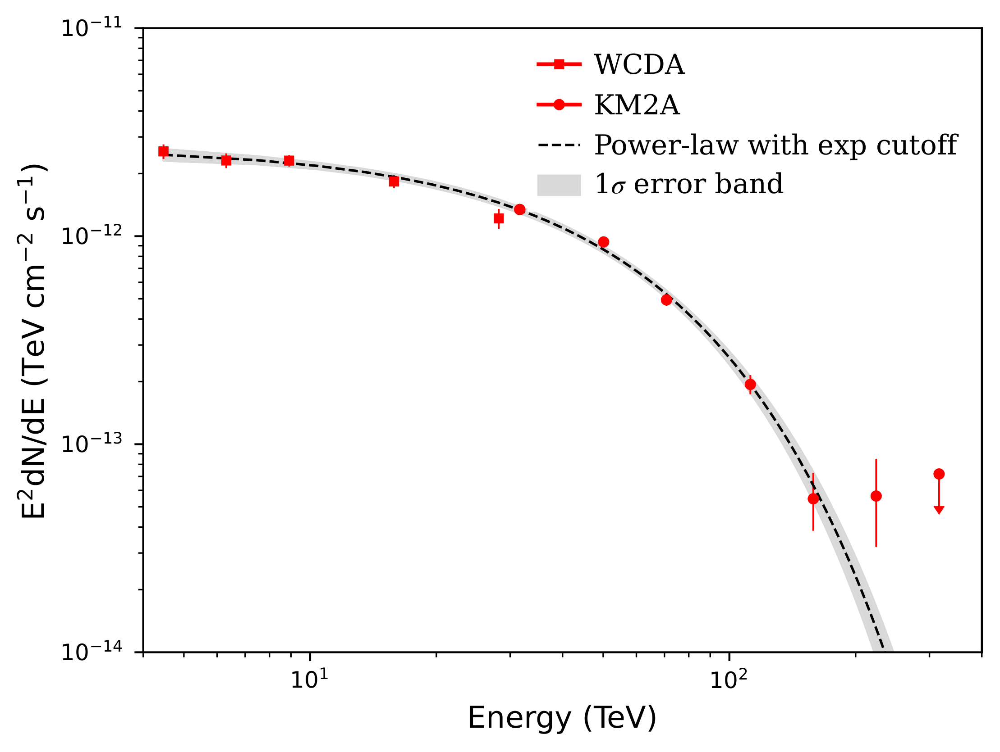
图注：The SED of LHAASO~J2238+5900 and the corresponding fit result.
对应解读：对应“建议重点查看的图表”第3项和“关键图表逐图导读”图3：谱能量分布、截断幂律拟合、最高能段通量以及截断能量约41 TeV的判断。
入选理由：这是支撑论文核心谱学结论的主图，直接展示LHAASO J2238+5900的SED和拟合结果，可用于检查通量点、误差、截断幂律形状以及几十TeV到超100 TeV区间的过渡，比单纯位置或环境图更直接关联PeVatron候选和谱截断结论。
来源与置信度：\(arxiv_source\)；high；\(arxiv_source\) / main.tex:figure[4]
Fig01
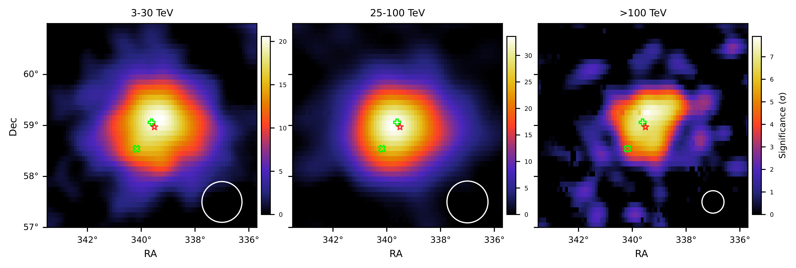
图注：Significance maps of the LHAASO J2238+5900 region divided into three energy bins. The lime plus, the lime cross, and the red star represent the position of PSR~J2238+5903, PSR~J2240+5832, and LHAASO J2238+5900 (this work), respectively. The white circle at the bottom-right corner shows the size of the point-spread function (68\% containment).
对应解读：对应“建议重点查看的图表”第1项和第4项，以及“关键图表逐图导读”图1、图4：不同能段显著性图、PSR J2238+5903位置、LHAASO源位置和PSF标示。
入选理由：该图按三个能量区间给出显著性天图，并标出PSR J2238+5903、邻近脉冲星和本工作源位置，是判断源是否与脉冲星空间相符、不同能段信号是否同位、以及高能信号是否仍集中在同一源区的关键证据。
来源与置信度：\(arxiv_source\)；high；\(arxiv_source\) / main.tex:figure[1]
Fig02
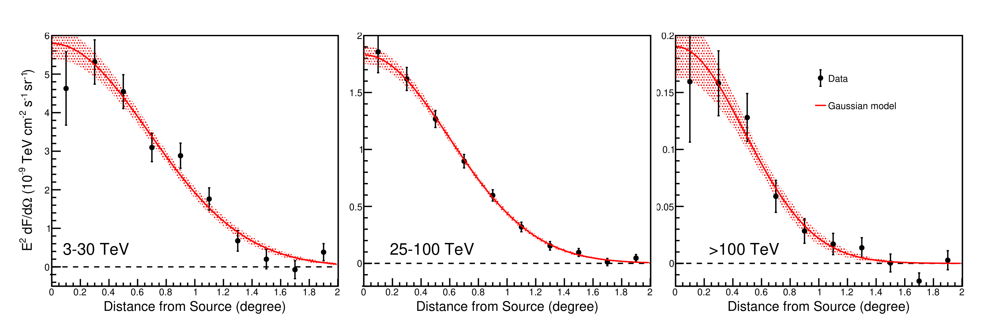
图注：One-dimensional distribution of the gamma-ray emission of LHAASO J2238+5900. The solid line represents the best-fitting Gaussian model, and the shaded band is the $\pm 1\sigma$ statistical uncertainty.
对应解读：对应“建议重点查看的图表”第2项和“关键图表逐图导读”图2：一维空间分布、最佳高斯形态模型和统计不确定度。
入选理由：该图直接检验源的空间延展性，展示伽马射线辐射的一维分布、最佳拟合高斯模型及1σ统计误差带，有助于判断数据是否支持约0.54度的扩展形态，而不仅是PSF造成的点源外观。
来源与置信度：\(arxiv_source\)；high；\(arxiv_source\) / main.tex:figure[2]
Fig03
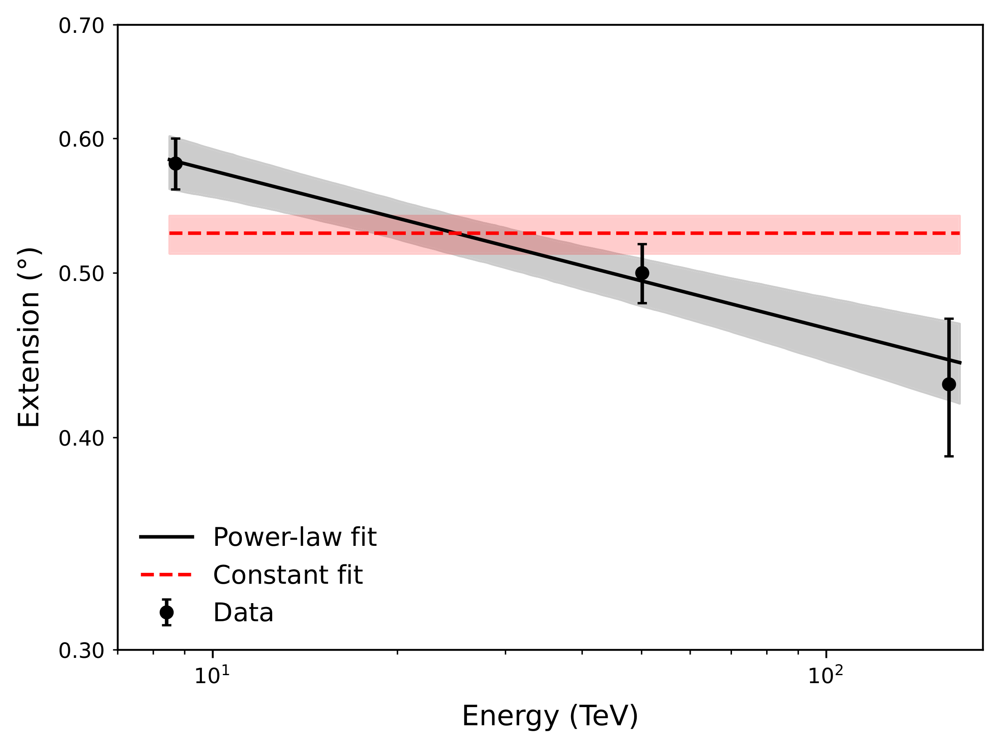
图注：The measured extension ($\sigma_{\text{ext}}$) for LHAASO J2238+5900 at three energy intervals. The solid black line indicates the power-law fit, and the red dashed line indicates the constant fit result.
对应解读：对应“建议重点查看的图表”第2项、第7项和模型拟合段落中关于能量依赖形态、延展稳健性及PWN/halo区分的讨论。
入选理由：该图展示三个能量区间下测得的源延展，并比较幂律变化和常数拟合，可用于检查源尺寸是否随能量变化。这对区分冷却主导PWN、逃逸电子halo以及背景或PSF系统误差非常重要。
来源与置信度：\(arxiv_source\)；high；\(arxiv_source\) / main.tex:figure[3]
Fig05
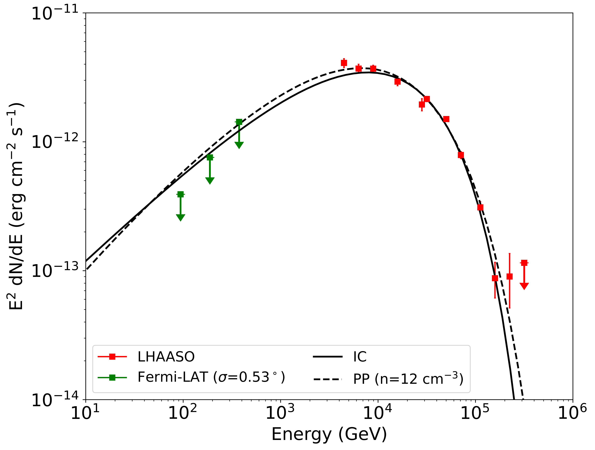
图注：Multiwavelength SED of LHAASO J2238+5900 with hadronic (dashed line) and leptonic (solid line) models. The red squares represent the spectral data points from LHAASO, while the green squares indicate the upper-limit points derived from Fermi-LAT, as outlined in APPENDIX \(\ref{sec:fermi_result}.\)
对应解读：对应“建议重点查看的图表”第6项和“关键图表逐图导读”图5：多波段SED、Fermi-LAT上限、强子与轻子模型比较。
入选理由：该图把LHAASO谱点与Fermi-LAT上限放在同一宽带SED中，并给出hadronic和leptonic模型曲线，是连接观测谱形与PWN/halo或强子解释的主要物理模型图，能支撑日报中关于模型退化和多波段约束的解读。
来源与置信度：\(arxiv_source\)；high；\(arxiv_source\) / main.tex:figure[5]
Fig07
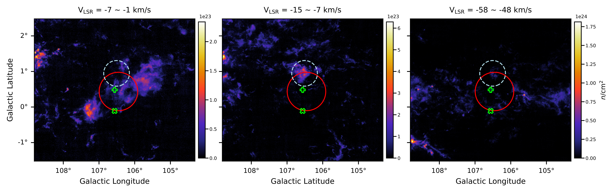
图注：Column density of molecular gas toward LHAASO J2238+5900. The extended region of LHAASO is marked by solid circle. The lime plus and cross represent the position of PSR~J2238+5903 and PSR~J2240+5832, respectively. The light blue dashed circle represents the molecular cloud [MML2017]4246.
对应解读：对应“建议重点查看的图表”第6项和详细解读中关于CO/HI气体分布、分子云以及强子模型可能性的讨论。
入选理由：该图展示LHAASO J2238+5900方向的分子气体柱密度，并标出LHAASO扩展区域、PSR位置和分子云[MML2017]4246，有助于判断TeV辐射是否与气体结构相关，从而评估强子解释是否有环境支持。
来源与置信度：\(arxiv_source\)；high；\(arxiv_source\) / main.tex:figure[7]
强相关工作
这项工作与 HAWC 和 LHAASO 近年来关于扩展 TeV 源、PWN 和 TeV halo 的研究直接相关。同类源可检索 Geminga halo、Monogem halo、HAWC TeV halos、LHAASO PeVatron candidates、LHAASO Galactic sources 等关键词。原型性对象包括 Geminga 周围的 TeV halo、HESS J1825-137 这类能量依赖形态明显的 PWN，以及 LHAASO 报道的多类 \(>100\,\mathrm{TeV}\) 银河源。
与可能相反或形成张力的观点主要在于源类判断。若把 LHAASO J2238+5900 解释为 PWN，需要证明大角尺度和能谱可由脉冲星风云演化与电子冷却解释；若解释为 halo，需要较强约束扩散系数和逃逸电子能量预算；若解释为强子 PeVatron，则需要气体靶物质和质子能量库证据。建议检索关键词包括 \(\mathrm{PSR\ J2238+5903}\)、LHAASO J2238+5900、PWN TeV halo diffusion、ultrahigh-energy gamma-ray PeVatron、Klein-Nishina cutoff、LHAASO KM2A extended source。
同一事件 / 同类源线索：
相似工作：
基础理论 / 方法工作：
相反观点 / 张力线索：
2. Spirited Away: Advective Loss of Cosmic Rays into the Milky Way's Circumgalactic Medium Explains the Large Magellanic Cloud's Low Gamma-ray Luminosity
- 来源：arXiv / astro-ph.HE
- 链接：https://arxiv.org/abs/2607.21316v1
- 作者：Taaseen Islam, Hilay Shah, Mark R. Krumholz, Roland Crocker
- 评分：novelty 8/10，importance 8/10，relevance 10/10，final 9.70/10
- 推荐理由：直接处理LMC伽马射线低光度问题，结合MHD和宇宙线输运解释Fermi能段谱形与逃逸机制；对星系尺度宇宙线传播和伽马射线辐射模型很有参考价值。
中文题目：被“吹走”的宇宙线：平流逃逸到银河系晕如何解释大麦哲伦云偏低的伽马射线光度
做了什么：这篇文章针对一个长期尴尬的问题：按恒星形成率和宇宙线产生效率估算，大麦哲伦云的伽马射线亮度应当比实际观测更高。作者把宇宙线输运代码 \(\mathrm{CRIPTIC}\) 接到包含大麦哲伦云与银河系环银河介质相互作用的磁流体模拟上，发现当大麦哲伦云被银河系晕气体“迎风剥离”并形成真实的磁场结构时，宇宙线主要通过平流被带出星系盘，碰撞产生的 \(\pi^0\) 衰变伽马射线显著减少，模型亮度自然降到接近 \(\mathrm{Fermi}\) 观测值。孤立大麦哲伦云的对照模拟仍然复现了过去的过亮问题。
为什么重要：大麦哲伦云是离我们最近、空间分辨率最高的正常恒星形成星系之一，按理说应是标定星系尺度宇宙线输运模型的样板；但它的伽马射线光度偏低一直说明“用恒星形成率推宇宙线、再用气体靶物质推 \(\gamma\) 射线”的简单图像缺了一环。本文的重要性在于把缺失环节明确指向星系环境：不是大麦哲伦云本身不产生宇宙线，而是与银河系环银河介质相互作用改变了磁场和流场，让宇宙线在发生足够强的强子碰撞前就被带走。
理论 / 观测 / 仪器方法价值：对理论而言，文章强调星系尺度宇宙线热量学不能只看内部扩散和星风，还要看卫星星系穿过主星系晕时的外部平流边界条件。对观测而言，它给出了一个可检验预测：大麦哲伦云的伽马射线谱形和空间分布应从低能处较好匹配、在高能处暴露能量依赖逃逸或注入谱问题。对方法而言，它展示了把三维磁流体模拟、磁场结构和蒙特卡洛宇宙线输运结合起来，比一维漏箱或均匀扩散模型更适合处理不规则星系。
为什么应该关注：如果这个解释成立，大麦哲伦云就不再是宇宙线—恒星形成率标度关系的异常点，而是一个告诉我们“环境能主导宇宙线热量学”的近邻实验室。这会影响我们如何解释矮星系、卫星星系、星系团或星系晕中的非热辐射，也会影响用伽马射线反推宇宙线能量密度、星风质量载荷和星系反馈效率的做法。
展开详细解读：文章讲解、背景、理论、重点章节、图表与相关工作
文章详细讲解
科学问题：过去许多星系尺度宇宙线模型能同时解释星系的射电同步辐射和伽马射线谱，核心假设是恒星形成活动注入宇宙线，宇宙线在星际介质中扩散、平流、能量损失，并通过 \(pp\) 碰撞产生 \(\pi^0\) 衰变伽马射线，或通过电子逆康普顿和轫致辐射产生高能光子。大麦哲伦云的问题在于，它的恒星形成率和气体质量并不低，但观测到的伽马射线光度比这些模型预期低。换句话说，若按普通星系的标度关系，大麦哲伦云似乎“不够亮”。
作者怎么做：本文没有简单调低宇宙线注入效率，而是把问题放到大麦哲伦云的动力学环境中处理。大麦哲伦云正在穿过银河系的环银河介质，外部热晕气体的冲压、剪切和磁场拖拽会改变其气体尾迹和磁场几何。作者使用能够较好再现大麦哲伦云观测磁场结构的磁流体模拟，再用 \(\mathrm{CRIPTIC}\) 宇宙线输运代码追踪宇宙线在这些三维流场和磁场中的传播。关键对照是：一组模拟包含与银河系环银河介质的相互作用，另一组把大麦哲伦云作为孤立系统处理。
关键结果：包含环银河介质相互作用的模型普遍得到接近观测的伽马射线光度，而孤立大麦哲伦云模型仍然像早期研究一样过亮。物理原因很直接：相互作用模型中，宇宙线并非主要靠慢速扩散在盘内驻留，而是被大尺度气体运动和磁化流场平流带到星系外，进入银河系晕或尾迹。宇宙线在高密度气体中停留时间缩短，\(pp\) 碰撞光度下降；于是总伽马射线机制也从强子 \(\pi^0\) 衰变主导转向更重视电子逆康普顿成分。
局限和下一步：模型在 \(\lesssim 10\,\mathrm{GeV}\) 的谱形上与观测较好一致，但在更高能段仍略微过亮。这说明当前采用的能量依赖输运可能还不够强，或者注入谱 \(p^{-2.2}\) 偏硬。下一步应检验更陡的注入谱、更强的能量依赖扩散、各向异性扩散、局地加速源分布、时间变化的恒星形成史，以及伽马射线空间模板是否真正支持“宇宙线被带入尾迹”的图像。
关键结果是怎么做出来的
本文最重要的证据链来自相互作用模拟与孤立对照模拟之间的直接比较。样本不是大量星系统计，而是围绕同一个对象大麦哲伦云构建多组物理模型：一类把大麦哲伦云放在银河系环银河介质中演化，保留冲压和磁场重塑；另一类作为控制实验取消外部环境。这样的设计把恒星形成率、气体盘尺度和源总体量尽量固定，把差异集中到输运边界条件和三维流场上。
作者在这些磁流体背景上注入宇宙线，并用 \(\mathrm{CRIPTIC}\) 追踪其传播和损失。需要重点看的是不同输运模型下预测的总伽马射线光度是否都向观测值收敛，而不是只在某个精细调参点上吻合。摘要明确说，在相当宽的宇宙线输运模型范围内，包含环银河介质相互作用的模拟都能恢复接近观测的伽马射线亮度；这比单次拟合更有说服力，因为它说明主效应来自环境平流，而非参数偶然抵消。
显著性或置信度的理解应从模型比较角度看：本文更像物理数值实验，而不是发现一个新点源的统计检验。关键统计量应包括模型谱能量分布与 \(\mathrm{Fermi}\) 数据点之间的残差、能段积分光度、不同辐射机制的分量贡献，以及孤立模型相对于观测的过预测幅度。若论文给出 \(\chi^2\)、似然差或误差带，读者应检查误差是否包含观测统计误差、\(\mathrm{Fermi}\) 有效面积系统误差、背景建模误差和模拟间散布。
支撑结论的图表应至少包括：相互作用与孤立模型的伽马射线谱比较、宇宙线逃逸通量或驻留时间分布、不同辐射机制的分量分解、磁场和气体速度场的形态图。特别要看 \(\pi^0\) 衰变分量在相互作用模型中如何降低，以及逆康普顿分量为何在总谱中变得更重要。如果只有总谱吻合而机制分解不清楚，物理解释会弱得多。
系统误差方面，最大的不确定性可能来自宇宙线注入谱、源空间分布、扩散系数归一化和能量依赖、磁场小尺度湍动、环银河介质密度与相对速度，以及大麦哲伦云近期恒星形成史。摘要中的高能过亮残差很重要：它不是小瑕疵，而是在提示模型的能量依赖输运或注入谱仍需调整。稳健性检验应看作者是否改变这些参数后仍保持“相互作用模型低亮、孤立模型过亮”的相对结论。
展开背景、理论、公式、模型、章节和图表导读
背景知识
大麦哲伦云是银河系最近的大质量卫星星系之一，距离约几十千秒差距，恒星形成活跃，有丰富的 \(\mathrm{H\,I}\)、分子云、超新星遗迹和 \(30\) Doradus 等强烈恒星形成区。由于距离近，它是研究星系尺度宇宙线、磁场和高能辐射的关键实验室：我们不仅能测总光度，还能在一定程度上看空间结构。
伽马射线天文学中，正常星系的 \(\gamma\) 射线光度通常与恒星形成率相关，因为大质量恒星死亡产生超新星，超新星激波加速宇宙线质子和电子；宇宙线质子撞击星际气体产生 \(\pi^0\)，随后衰变为 \(\gamma\) 射线。若宇宙线驻留时间足够长，星系就更接近“量热计”；若逃逸很快，伽马射线光度就偏低。大麦哲伦云的低光度说明它可能不是一个简单的局地量热计。
历史问题在于，许多能解释银河系、近邻星暴星系和普通星系的半解析模型或数值模型，对大麦哲伦云会给出偏高的 \(\gamma\) 射线通量。一个常见做法是调低宇宙线加速效率或改变气体分布，但这类解释往往不够自然，因为大麦哲伦云的超新星和恒星形成证据并不支持极端低效的宇宙线产生。本文转向环境解释：大麦哲伦云不是孤立盒子，而是高速穿过银河系热晕的卫星。
现在值得重新看，是因为三维磁流体模拟已经能更真实地再现大麦哲伦云与银河系环银河介质相互作用后的磁场形态和气体尾迹；同时 \(\mathrm{Fermi}\) 长时间累积数据提供了较稳健的谱能量分布。宇宙线输运代码也比早期漏箱模型更能处理各向异性、空间非均匀和时间依赖问题。因此，过去被简化为“扩散系数选多大”的问题，现在可以被放进真实流场中检验。
该领域常见误区有三点。第一，把低 \(\gamma\) 射线光度直接等同于低宇宙线产生率，忽略逃逸通道。第二，把平流只理解为星系内部星风，而忽视卫星星系相对主星系晕运动造成的外部平流。第三，把 \(\gamma\) 射线谱的总量匹配看成充分条件；实际上，\(\pi^0\) 衰变、逆康普顿和轫致辐射的相对贡献，以及空间分布，才决定模型是否物理可信。
基础理论 / 方法脉络
基础物理图像是：超新星遗迹和大质量恒星反馈把一部分机械能注入非热粒子，形成宇宙线质子和电子。质子主要通过与气体核子碰撞损失能量并产生 \(\pi^0\) 衰变伽马射线；电子通过同步辐射、逆康普顿散射和轫致辐射损失能量。伽马射线光度因此取决于三个量的乘积式竞争：注入多少宇宙线、它们在高密度气体中停留多久、以及逃逸和冷却哪一个更快。
在简单漏箱模型中，宇宙线能量密度由源项、损失时间和逃逸时间决定。如果逃逸时间比碰撞损失时间短，系统处于“非量热”状态，\(\gamma\) 射线光度低；如果碰撞损失时间短，系统接近“强子量热计”，\(\gamma\) 射线亮。大麦哲伦云偏低的问题，本质上就是要求一个比传统模型更短或更有效的逃逸通道。
本文特定的假设是，逃逸不只是标量扩散，而是在三维磁化气体速度场中发生。大麦哲伦云与银河系环银河介质相互作用会产生相干的大尺度流动、剥离尾迹和被拉伸的磁场。宇宙线沿磁场扩散，同时被气体平流携带；当平流速度和几何结构让宇宙线快速离开气体盘时，强子伽马射线自然下降。
观测上，\(\mathrm{Fermi}\) 测到的是某个角区内扣除背景后的光子谱和空间分布。模型需要把宇宙线分布、气体密度、辐射场和磁场转成伽马射线发射率，再沿视线积分成通量。这里的退化关系很多：降低注入率、缩短驻留时间、降低气体密度、增大扩散系数或增强平流都可能降低总光度；只有结合谱形、机制分解和空间形态，才能区分这些可能性。
主要系统误差包括：宇宙线源分布是否跟当前恒星形成率一致，近期超新星史是否有时间变化；环银河介质密度和大麦哲伦云轨道速度是否准确；小尺度湍流是否在磁流体模拟中被足够解析；\(\mathrm{Fermi}\) 背景模型是否会把弥散尾迹成分吸收掉。本文的价值在于它给出一个环境驱动的主效应，但细节仍需这些系统误差约束。
公式与推导
第一步从宇宙线相空间分布或微分数密度 \(N_i(E,\mathbf{x},t)\) 的守恒出发。对粒子种类 \(i\) 而言，输运方程可写成
这里 \(\mathbf{u}\) 是气体平流速度，\(\boldsymbol{\kappa}\) 是可能各向异性的扩散张量，\(b_i=-dE/dt\) 是连续能量损失率，\(Q_i\) 是源项，\(t_{\rm cat}\) 表示灾变损失时间。本文的核心就是比较 \(\mathbf{u}\) 由环银河介质相互作用改变前后的影响。
第二步把源项与恒星形成或超新星功率连接。若超新星率为 \(\mathcal{R}_{\rm SN}\)，单次超新星机械能为 \(E_{\rm SN}\)，宇宙线效率为 \(\eta_{\rm CR}\)，则总宇宙线功率近似为
若注入动量谱取 \(Q(p)\propto p^{-s}\)，本文摘要提到的基准值为 \(s=2.2\)。这个式子说明，若不想任意调低 \(\eta_{\rm CR}\)，就必须通过输运和损失改变 \(\gamma\) 射线输出。
第三步定义竞争时间尺度。扩散逃逸时间和平流逃逸时间可粗略写为
其中 \(H\) 是宇宙线需穿越的有效尺度，\(u=|\mathbf{u}|\) 是特征平流速度。孤立模型通常更依赖 \(t_{\rm diff}\)，而相互作用模型中若 \(t_{\rm adv}\) 变短，就会让宇宙线更快离开高密度盘。
第四步写强子碰撞损失时间。对宇宙线质子，近似
其中 \(n_{\rm gas}\) 是气体数密度，\(\sigma_{pp}\) 是非弹性 \(pp\) 截面，\(k_{pp}\) 是非弹性能量损失比例。若 \(t_{\rm esc}^{-1}=t_{\rm diff}^{-1}+t_{\rm adv}^{-1}\)，则强子量热分数可近似为
物理含义是：逃逸越快，\(f_{\rm cal}\) 越小，\(\pi^0\) 伽马射线越暗。
第五步把强子伽马射线光度写成标度关系。粗略地，\(\pi^0\) 衰变通道的光度满足
其中 \(L_{\rm CR,p}\) 是注入到宇宙线质子的功率，因子 \(1/3\) 表示非弹性能量中进入中性 pion 并转为伽马射线的数量级比例。本文结果等价于说，相互作用模型显著降低了 \(f_{\rm cal}\)。
第六步考虑电子逆康普顿。若电子能量为 \(E_e=\gamma_e m_ec^2\)，在 Thomson 极限下能量损失率为
其中 \(U_{\rm rad}\) 是辐射场能量密度。逆康普顿光子典型能量为
其中 \(\epsilon\) 是靶光子能量。若强子分量因平流下降，电子逆康普顿即使绝对值不大，也可能成为总谱的主导成分。
第七步把体发射率转成观测通量。模型给出体发射率 \(q_\gamma(E_\gamma,\mathbf{x})\) 后，观测到的能谱通量为
其中 \(D\) 是大麦哲伦云距离。这个式子连接三维模拟和 \(\mathrm{Fermi}\) 数据点：改变宇宙线空间分布或机制分量会直接改变积分谱。
第八步用统计量评估模型与数据。若能段 \(j\) 的观测通量为 \(F_j^{\rm obs}\)，误差为 \(\sigma_j\)，模型为 \(F_j^{\rm mod}\)，常见诊断是
若用光子计数似然，则 Poisson 对数似然为
其中 \(n_j\) 是观测计数，\(\mu_j\) 是模型预期计数。读者应关注相互作用模型相对于孤立模型是否在这些诊断中系统改善，尤其是 \(\gtrsim 10\,\mathrm{GeV}\) 的残差。
模型拟合 / 应用方法
这类工作的拟合对象主要是大麦哲伦云的伽马射线谱能量分布、积分光度、可能的空间模板，以及不同能段中各辐射机制的贡献。可调或可比较的物理量包括宇宙线注入归一化、注入谱指数 \(s\)、扩散系数 \(\kappa_0\)、能量依赖指数 \(\delta\)、平流速度场、源分布、气体密度分布和辐射场模型。本文的重点不是通过任意参数拟合出一个光度，而是比较有无环银河介质相互作用时的系统性差异。
似然层面，若直接拟合 \(\mathrm{Fermi}\) 光子计数，最自然的是 Poisson 似然，并同时拟合大麦哲伦云模板、银河弥散背景、各向同性背景和点源。若论文只比较已发表谱点，则常用高斯 \(\chi^2\) 或对数空间残差。无论哪种方式，读者都应看低能和高能是否被同一个物理模型同时解释，而不是只让总积分光度吻合。
参数退化非常重要。降低 \(L_{\rm CR}\)、降低气体密度、提高 \(\kappa(E)\)、增强 \(u\)、改变源分布，都能压低 \(L_\gamma\)。本文试图打破退化的关键在于：相互作用磁流体模拟同时改变流场和磁场，并能独立匹配大麦哲伦云磁场观测结构。因此，平流逃逸不是纯粹为了拟合伽马射线而引入的自由参数，而有外部观测动机。
残差诊断应重点看 \(\gtrsim 10\,\mathrm{GeV}\) 的过预测。若模型在高能处偏高，可能说明 \(\kappa(E)\) 的能量依赖 \(\delta\) 需要更大，使高能粒子更快逃逸；也可能说明注入谱 \(s=2.2\) 太硬，需要更陡的源谱；还可能是高能 \(\mathrm{Fermi}\) 背景扣除或源混叠问题。不同解释对低能谱形、空间分布和射电同步辐射会给出不同预言。
模型可能失败的地方包括：磁流体模拟没有解析小尺度湍流，导致有效扩散和平流混合不准确；宇宙线反馈没有反过来改变气体流场；电子能损和辐射场模型过于简化；大麦哲伦云的恒星形成史并非稳态。实际应用上，这套方法可推广到小麦哲伦云、其他近邻矮星系、正在被剥离的星系团成员星系，以及任何外部环境可能控制宇宙线逃逸的系统。
重点章节 / 结果段落怎么读
数据和观测约束部分应先读。这里应说明采用的大麦哲伦云 \(\gamma\) 射线谱、光度、能段范围和误差来源，以及用于约束磁流体模拟的磁场观测是什么。读者要确认比较的是总光度、谱形，还是还包括空间分布；三者的约束强度不同。
磁流体模拟部分是本文物理解释的根基。重点看大麦哲伦云与银河系环银河介质相互作用如何设置：相对速度、环银河介质密度、磁场初始条件、是否能再现观测到的磁场形态和气体结构。孤立对照模拟的设置也很关键，因为它决定“过亮问题”是否被公平复现。
宇宙线输运方法部分应关注 \(\mathrm{CRIPTIC}\) 如何处理扩散、平流、能量损失和辐射过程。需要看宇宙线注入谱、源分布、扩散系数、能量网格或粒子统计量，以及是否包含质子和电子的不同损失通道。这里的假设直接决定 \(\pi^0\) 与逆康普顿分量的比例。
主结果部分应读两条线：第一，相互作用模型与观测伽马射线光度和谱形的比较；第二，孤立模型为什么继续过亮。最有价值的是机制分解图，说明光度下降是因为平流逃逸导致强子碰撞减少，而不是简单因为源少或气体少。
讨论和稳健性检验部分应重点看高能残差。作者认为 \(\gtrsim 10\,\mathrm{GeV}\) 仍略微过亮，可能需要更强能量依赖输运或更陡注入谱。读者应检查他们是否尝试了不同 \(\kappa(E)\)、不同 \(s\)、不同环银河介质条件，以及结论对这些选择是否稳健。
建议重点查看的图表
-
伽马射线谱能量分布图：看 \(E_\gamma\) 横轴和 \(E_\gamma^2 dN/dE_\gamma\) 或通量纵轴上，观测点、相互作用模型和孤立模型的差别；尤其检查 \(\lesssim 10\,\mathrm{GeV}\) 与 \(\gtrsim 10\,\mathrm{GeV}\) 的残差。
-
总伽马射线光度对模型参数的比较图：看不同扩散系数、平流设置或注入谱下，包含环银河介质相互作用的模型是否稳定接近观测，而孤立模型是否系统过亮。
-
辐射机制分解图：分别检查 \(\pi^0\) 衰变、逆康普顿和轫致辐射分量。关键趋势是相互作用模型中 \(\pi^0\) 分量下降，逆康普顿相对贡献上升。
-
宇宙线空间分布或逃逸通量图：看宇宙线是否沿尾迹或磁场方向离开大麦哲伦云盘，而不是仍困在高气体密度区域。
-
磁场和气体速度场图：检查相互作用模拟是否确实产生可解释平流逃逸的流场与磁场几何，并且是否与观测磁场结构一致。
-
驻留时间或损失时间分布诊断：如果有，应看 \(t_{\rm adv}\)、\(t_{\rm diff}\) 和 \(t_{pp}\) 的相对大小，确认强子损失被逃逸压制。
-
稳健性表格：看参数变动后光度、谱指数、机制分量是否保持同样排序；不要只看最佳模型。
关键图表逐图导读
图 1：通常应是大麦哲伦云环境或模拟形态图。横纵轴可能是投影空间坐标，颜色显示气体密度、磁场强度或宇宙线能量密度，箭头表示速度场或磁场方向。读这类图时要看相互作用模型是否出现被银河系环银河介质拖拽出的尾迹和有序磁场结构。陷阱是颜色范围若自动缩放，孤立与相互作用图的亮暗不能直接比较，必须看色标。
图 2：很可能是模型伽马射线谱与观测数据的核心对比。横轴应为 \(E_\gamma\)，纵轴可能是 \(E_\gamma^2 dN/dE_\gamma\)、\(dN/dE_\gamma\) 或积分光度。数据点代表 \(\mathrm{Fermi}\) 观测，模型线代表不同输运设置。重点看相互作用模型在 \(\lesssim 10\,\mathrm{GeV}\) 是否穿过误差棒，以及孤立模型是否整体偏高。读图陷阱是不要只看某个能点，谱形和积分面积同样重要。
图 3：机制分解图应展示 \(\pi^0\)、逆康普顿和轫致辐射分量。坐标与谱图类似，不同线型或颜色代表不同物理通道。本文最关键的物理结论应在这里体现：包含环银河介质相互作用后，强子 \(\pi^0\) 分量被压低，逆康普顿分量在总谱中变得更显著。陷阱是相对主导不等于电子总能量更大，而可能只是质子在气体中碰撞机会减少。
图 4：参数扫描或模型族比较图可能以扩散系数、能量依赖指数或平流模型为横轴，以总 \(L_\gamma\) 或模型与观测比值为纵轴。读者应看结论是否跨越宽参数范围。如果只有一个精细调参模型落在观测误差内，而其他相互作用模型不行，则稳健性较弱；摘要声称宽范围内成立，所以图上应能看到这一点。
图 5：宇宙线逃逸、驻留时间或能量损失预算图。横轴可能是时间、能量或空间区域，纵轴是逃逸率、损失率或能量分数。关键是确认相互作用模型中平流项超过碰撞损失项，或者至少显著缩短宇宙线在盘内的有效驻留时间。读图陷阱是不同能量粒子的逃逸机制可能不同，不能用一个总平均时间解释全部谱形。
图 6：高能残差或稳健性检验图。若有残差面板，应看 \(\gtrsim 10\,\mathrm{GeV}\) 数据点上模型是否系统高于观测，以及误差棒是否足以容纳。这个图决定后续解释是“模型已经解决问题”还是“解决了总光度但暴露高能输运问题”。
论文原图 / 可嵌入图片
Fig03
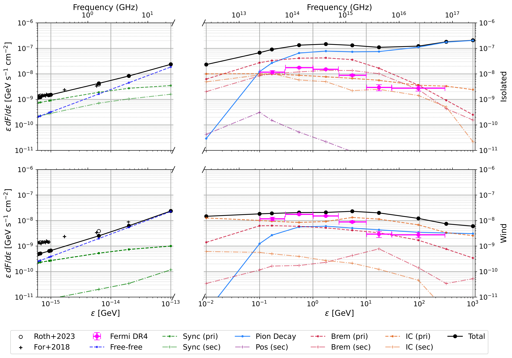
图注：Radio and $\gamma$-ray spectra for the \(\texttt{iD28Q0}\) (top) and \(\texttt{wD28Q0}\) (bottom) simulations at the final time snapshot. As in \(\autoref{fig:timeseries_case},\) black points show the summed emission from all processes, while colored points connected by lines show the contribution from each individual emission process, with the emission from primary and secondary electrons shown separately. Pink points with error bars show $\gamma$-ray measurements from the Fermi 4FGL-DR4 catalog \(\citep{fermiDR4}.\) Black open circles show radio observations as compared in \(\citet{roth23}\) while black crosses show observations described in \(\citet{For18a}.\)
对应解读：对应“建议重点查看的图表”第1项伽马射线谱能量分布图、第3项辐射机制分解图，以及“关键图表逐图导读”中图2/图3关于Fermi观测点、孤立模型与wind模型谱形和机制分量的核心解读。
入选理由：这是最直接支撑论文主结论的图：同一图中给出孤立模拟与包含CGM风相互作用模拟的射电和伽马射线谱，并叠加Fermi 4FGL-DR4观测误差棒，还分解了π0衰变、轫致辐射、逆康普顿、同步辐射等通道。它能同时检验低于约10 GeV的吻合、高能端过预测，以及相互作用模型中强子π0分量下降、逆康普顿相对重要性上升的关键物理解释。
来源与置信度：\(arxiv_source\)；high；\(arxiv_source\) / \(oja_template.tex\):figure[3]
Fig05

图注：Same as \(\autoref{fig:spectra_case},\) but now showing the results for all simulations. The left column shows isolated simulations and the right column shows wind simulations. The value of the parallel diffusion coefficient in each simulation is indicated to the right of each row.
对应解读：对应“建议重点查看的图表”第2项总伽马射线光度对模型参数的比较、第7项稳健性表格/模型族检验，以及“关键图表逐图导读”中图4关于不同扩散系数和模型族是否稳健接近观测的讨论。
入选理由：该图把Fig03式的谱比较扩展到所有模拟，并按孤立模型与wind模型、不同平行扩散系数分组展示，是判断结论是否依赖单一调参模型的关键证据。它比单个案例图更能支撑摘要中“宽范围宇宙线输运模型均接近观测，而孤立模型系统过亮”的稳健性论断。
来源与置信度：\(arxiv_source\)；high；\(arxiv_source\) / \(oja_template.tex\):figure[5]
Fig02
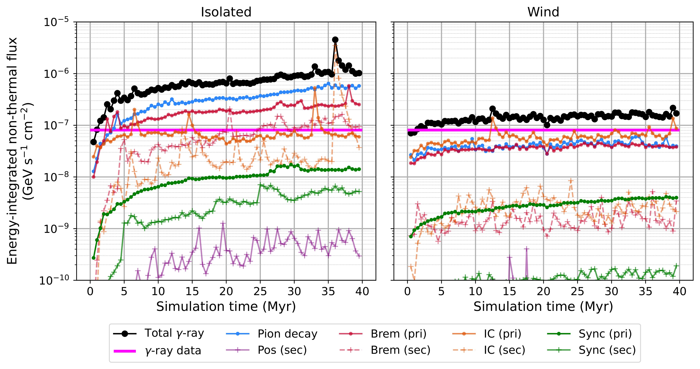
图注：Energy-integrated non-thermal flux (multi band) as a function of time in the \(\texttt{iD28Q0}\) (left) and \(\texttt{wD28Q0}\) (right) simulations, where $t=0$ corresponds to when we start following CR propagation and $t=40$ Myr to the state of the LMC as it exists now. Black points show the total flux from all processes, while colored lines with points show the contribution from each emission process---pion decay, bremsstrahlung, inverse Compton emission, synchrotron emission, and in-flight annihilation of positrons; radiation produced by leptons is also separated into emission from primary electrons and secondary leptons. The pink solid line shows the integrated $\gamma$-ray flux determined from the observed spectrum reported in the Fermi 4FGL-DR4 catalog \(\citep{fermiDR4}.\) Simulated $\gamma$-ray fluxes are integrated over the bounds of the Fermi data ($0.17-94.97$ GeV), and synchrotron fluxes are integrated over the total range of the points we show in \(\autoref{fig:spectra_case}\) ($2\times 10^{-7} - 10^{-4}$ eV).
对应解读：对应“建议重点查看的图表”第2项总伽马射线光度比较、第3项辐射机制分解，以及模型拟合段落中关于积分光度不能只看最佳谱点、需比较有无CGM相互作用系统差异的讨论。
入选理由：该图显示能量积分的非热辐射通量随时间演化，并用粉色水平线标出Fermi观测积分伽马射线通量。左右面板分别是孤立和wind案例，且分通道展示π0衰变、轫致辐射、逆康普顿等贡献，因此能清楚说明wind模型为何降低总伽马射线通量、机制排序如何随时间变化。
来源与置信度：\(arxiv_source\)；high；\(arxiv_source\) / \(oja_template.tex\):figure[2]
Fig06
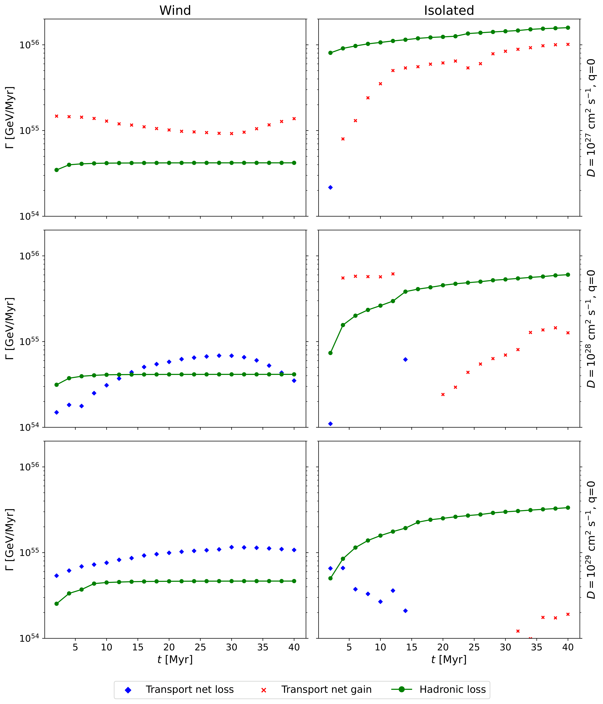
图注：Total energy loss rates ($\Gamma$) due to proton-proton collisions and adiabatic work for all proton packets within the $q=0$ simulations. Each point sums up all particles that are younger than the $t$-axis age, so the rightmost points sum up all particles within the simulation. Each point is averaged over 2.5 Myr of simulation time.
对应解读：对应“建议重点查看的图表”第6项驻留时间或损失时间分布诊断，以及“关键图表逐图导读”中图5关于平流/绝热项与pp碰撞损失预算的物理诊断。
入选理由：该图给出质子包的pp碰撞与绝热功总能量损失率，是连接‘伽马射线变暗’和‘宇宙线被平流带走、强子碰撞受抑制’之间的物理机制图。虽然不是直接的谱图，但它提供了损失预算层面的因果证据，能验证低π0光度不是任意归一化造成的。
来源与置信度：\(arxiv_source\)；high；\(arxiv_source\) / \(oja_template.tex\):figure[6]
Fig01
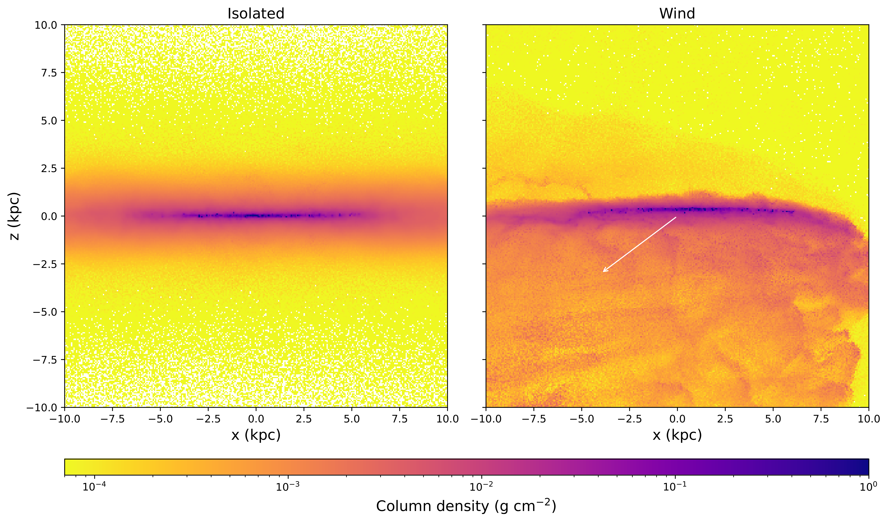
图注：Snapshots from the two LMC simulations from \(\citetalias{shah25}\) that we use in this work at their final times, after 500 Myr of simulation time. The simulations have been translated and rotated such that the galaxy centers are at rest at the origin and the disk's angular momentum is aligned with the $z$-axis. Colors show column density integrated over a $40$ kpc-thick slab centered on the galaxy center. The left panel shows the
isolated'' simulation \(\texttt{I-2-6-M},\) while the right shows thewind'' simulation \(\texttt{W-2-6-M},\) which includes in the Milky Way CGM (equivalent to a wind in the LMC's rest frame). The white arrow in the right panel shows the direction of the wind in the LMC rest frame.\}对应解读：对应“建议重点查看的图表”第5项磁场和气体速度场/环境形态图，以及“关键图表逐图导读”中图1关于孤立模型和含Milky Way CGM风模型形态差异的解读。
入选理由：该图展示两套MHD模拟最终时刻的气体柱密度形态，左为孤立LMC，右为包含银河系CGM风的wind模拟，并标出风向。它是理解后续宇宙线平流逃逸的环境基础，可直观看到外部相互作用产生的非对称结构和尾迹，而这正是论文区别于纯参数调节模型的外部物理动机。
来源与置信度：\(arxiv_source\)；high；\(arxiv_source\) / \(oja_template.tex\):figure[1]
Fig04
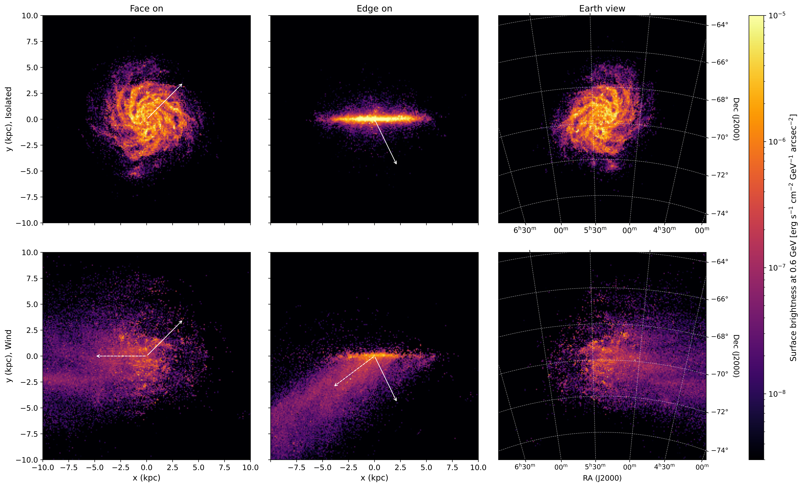
图注：Specific $\gamma$-ray flux at 0.6 GeV from the \(\texttt{iD28Q0}\) simulation (top row) and the \(\texttt{wD28Q0}\) simulation (bottom row). The three columns show three different projections of the LMC disk: face-on (left), edge-on (middle), and as viewed from Earth (right). The white dashed arrows indicate the direction of the wind as seen by an observer comoving with the LMC. The white solid arrows indicate the direction of Earth. For the purposes of assigning sky positions, we take the LMC's center to be at RA 05$^\mathrm{h}$ 23$^\mathrm{m}$ 34.6$^\mathrm{s}$ and Dec $-69^\circ45.4'$ \(\citep{tully13},\) and we have rotated the image so that the direction of the LMC's proper motion in the wind simulation is oriented correctly on the sky---see \(\citetalias{shah25}\) for details.\}
对应解读：对应“建议重点查看的图表”第4项宇宙线空间分布或逃逸通量图，以及模型拟合段落中关于伽马射线空间模板是否支持‘宇宙线被带入尾迹’图像的讨论。
入选理由：该图展示0.6 GeV伽马射线比通量在孤立与wind模拟中的空间分布，并给出面朝、侧视和从地球方向观察的投影，还标出风向。它补充了谱图无法提供的空间诊断，可检查相互作用模型的伽马射线发射是否被拉伸或偏离盘面，从而支持平流逃逸而非单纯降低注入功率的解释。
来源与置信度：\(arxiv_source\)；high；\(arxiv_source\) / \(oja_template.tex\):figure[4]
强相关工作
这篇工作应放在三条文献线索里理解。第一条是正常星系的伽马射线—恒星形成率关系和宇宙线量热模型，检索关键词可用 “gamma-ray luminosity star formation rate cosmic ray calorimetry normal galaxies”。这些工作建立了为什么大麦哲伦云应该亮、以及为什么它偏低构成问题的基准。
第二条是大麦哲伦云本身的 \(\mathrm{Fermi}\) 观测、射电磁场观测和宇宙线模型。检索关键词可用 “Large Magellanic Cloud Fermi LAT gamma rays cosmic rays magnetic field” 和 “LMC gamma-ray spectrum pion decay inverse Compton”。同一源论文包括大麦哲伦云的 \(\gamma\) 射线探测、空间分辨研究、\(30\) Doradus 区域分析和弥散发射模板拟合。
第三条是卫星星系与主星系环银河介质相互作用、冲压剥离、磁场拉伸和非热粒子输运。检索关键词可用 “Large Magellanic Cloud circumgalactic medium interaction magnetic field MHD simulation ram pressure cosmic ray advection”。本文与这类工作相接的地方在于，它把通常用于解释气体和磁场形态的环境动力学，转化为解释高能伽马射线低光度的宇宙线逃逸机制。
潜在相反观点包括：大麦哲伦云低亮可能来自宇宙线注入效率较低、恒星形成史时间变化、气体靶物质分布估计错误、或 \(\mathrm{Fermi}\) 背景建模导致弥散通量被低估。检索关键词可用 “LMC cosmic ray injection efficiency”, “LMC gamma-ray diffuse emission background systematics”, “energy dependent diffusion LMC cosmic rays”。
同一事件 / 同类源线索：
- https://arxiv.org/abs/2607.21316
- https://arxiv.org/pdf/2607.21316
- https://ned.ipac.caltech.edu/byname?objname=Large%20Magellanic%20Cloud
相似工作：
（未提供）
基础理论 / 方法工作：
相反观点 / 张力线索：
（未提供）
3. Earth rotation turns event timing into a geometric probe of UHE neutrino origin
- 来源：arXiv / astro-ph.HE
- 链接：https://arxiv.org/abs/2607.20608v1
- 作者：Andrew Cheek, João Paulo Pinheiro, Jordi Salvado
- 评分：novelty 8/10，importance 8/10，relevance 9/10，final 9.35/10
- 推荐理由：UHE 中微子/KM3NeT 事件起源判别，利用地球自转和事件时间信息区分暗物质衰变与各向同性天体信号；属于重点高能中微子与多信使方法论文。
中文题目：Earth rotation turns event timing into a geometric probe of UHE neutrino origin
做了什么：本文针对 KM3NeT 的 UHE 中微子候选事件 KM3-230213A，定量检验其是否可能来自暗物质衰变。作者构造逐事件似然比/检验统计量，比较暗物质衰变天图与各向同性信号在探测器可见度调制后的概率。单事件结果显示暗物质假设被削弱但未排除，$p_{\rm DM}\simeq0.13$--$0.15$。更重要的是，论文证明地球自转带来的时间信息显著提高模型区分能力：纯几何需要约 33--43 个事件，日平均曝光降至约 22--27 个，完整时间分辨分析进一步降至约 14--16 个。结论强调，到达时间可作为源空间分布的几何探针。
为什么重要：这篇论文的重要性在于把一个具名 UHE 中微子事件的暗物质解释从定性争论推进到可复用的统计检验。它明确区分了单事件 $p$ 值、平均曝光信息和完整时间分辨信息，并给出未来排除所需事件数的量化预测。如果 KM3-230213A 类事件继续出现，类似框架将决定我们如何在暗物质衰变、各向同性天体物理通量和其他非均匀源模型之间做早期判别。
理论 / 观测 / 仪器方法价值：理论价值在于把暗物质衰变的空间分布、探测器曝光和逐事件到达时间统一到一个 per-event 统计框架中，避免只凭“离银心远近”做定性判断。观测价值在于为未来 KM3NeT 或类似 UHE 中微子望远镜提供事件数需求估计，说明何时能从少量事件中排除或支持某类银河晕分布信号。方法价值在于该框架不局限于暗物质，也适用于任何具有固定天球几何图样的 relic 或源族，只要探测器可见度随地球自转调制。
为什么应该关注：值得关注的原因是，UHE 中微子事件极少，每个事件的方向和时间信息都非常昂贵。本文显示，即使没有更多能谱细节，仅保留到达时间也能把排除暗物质所需事件数从几十个降到十几个量级。这对 KM3NeT 后续事件积累、实时 alert 解读、以及多信使关联策略都有直接影响。它也提醒读者：单事件方向上的直觉张力不能替代严格的曝光加权似然检验。
展开详细解读：文章讲解、背景、理论、重点章节、图表与相关工作
文章详细讲解
本文的科学问题可以表述为：给定 KM3-230213A 的到达方向和时间，暗物质衰变模型相对于各向同性模型究竟被削弱到什么程度？作者没有停留在“事件远离银心所以不像暗物质”的定性判断，而是构造逐事件检验统计量，计算该事件在暗物质概率图和各向同性概率图下的相对位置，并用 Monte Carlo 或等价抽样预测未来需要多少类似事件才能排除暗物质衰变解释。
方法上，论文把暗物质诱导事件概率写成方向、时间和探测器可见度的组合。静态几何方案令可见度 $\mathrm{Vis}\equiv 1$，只比较暗物质天图与各向同性天图；日平均曝光方案使用 $\overline{\mathrm{Vis}}(\alpha,\delta)$，考虑探测器长期偏好的天区但丢弃逐事件时间；时间分辨方案使用完整的 $\mathrm{Vis}(t,\alpha,\delta)$，保留每个事件的到达时间。三个方案构成一条清楚的信息增益链。
关键结果之一是单个 KM3-230213A 事件确实不利于暗物质衰变解释，但远未达到排除。摘要给出暗物质假设下 $p$ 值约 $0.13$--$0.15$，这意味着在暗物质模型为真时，出现至少同样“不像暗物质”的事件并非罕见到可忽略。这个数字应读作“有张力但不显著”，而不是证伪。
关键结果之二是事件数预测。若只使用纯几何信息，未来需要约 $33$--$43$ 个事件才能以论文定义的标准排除暗物质、支持各向同性；加入日平均探测器可见度后，事件数降低到约 $22$--$27$；进一步保留逐事件时间后，所需事件数约 $14$--$16$。这说明到达时间并不只是用于关联瞬变源，也可在无源对应体的统计问题中提供几何判别力。
局限性方面，本文的预测依赖若干应在原文中仔细核查的技术细节：可见度函数如何定义，是否包含能量依赖有效面积；KM3-230213A 的方向不确定度是否被卷入概率图；背景、误重建大气事件或宇宙线 muon 污染是否忽略；未来事件是否假设同能区、同选择函数和同角分辨率；排除标准采用哪一种分位数、置信度或检验统计量阈值。这些决定了事件数预测能否直接用于真实观测规划。
下一步可扩展方向包括：把能量信息纳入联合似然，因为不同暗物质衰变道给出的谱形不同；把角误差事件逐一卷积进概率密度；与公开或内部 KM3NeT 有效面积联合，构建更接近真实分析的 unbinned likelihood；并把同一框架应用到 IceCube、Baikal-GVD 或未来赤道附近 UHE 中微子阵列，比较不同纬度、视场和地球吸收对时间调制的影响。
关键结果是怎么做出来的
本文的主数据输入是单个 UHE 中微子候选事件 KM3-230213A 的方向与到达时间，再加上 KM3NeT 的方向/时间可见度模型和暗物质衰变的天图预测。作者没有声称用单事件发现或排除暗物质，而是建立 per-event test statistic：对任一事件比较其在暗物质衰变假设和各向同性假设下的概率密度，并把未来多个事件的统计量相加以做 forecast。
对当前唯一事件，论文得到暗物质假设被削弱但未排除，$p\text{-value}_{\rm DM}\simeq0.13$--$0.15$。这个数值应理解为：在暗物质衰变模型产生事件的前提下，像 KM3-230213A 这样或更不利于暗物质几何分布的事件仍有约十几百分比概率。统计上这远高于通常的 $2\sigma$ 或 $3\sigma$ 排除要求，因此“方向远离银河中心”只是提示张力，不是结论。
模型比较分三层。第一层 geometry-only 令 $\mathrm{Vis}\equiv1$，只比较暗物质本征方向图和各向同性方向图。Fig. 4 对应这个基准，并给出单事件及 33、43 个事件组合样本的 TS 分布。其作用是告诉读者：如果完全不利用探测器可见度和时间信息，仅靠到达方向统计，需要几十个事件才能稳定地区分暗物质衰变和各向同性。
第二层 time-averaged exposure 使用日平均可见度，但不使用每个事件的具体到达时间。Fig. 5 显示该处理已经把所需事件数降到约 22--27。这里的物理原因是，探测器并非均匀看全天；暗物质天图与探测器平均可见带相乘后，与各向同性乘以同一可见带的形状不同。也就是说，即使抛弃事件具体时刻，曝光函数也已成为模型判别的一部分。
第三层 fully time-resolved 是论文最强结论所在。Fig. 6 使用完整 $P_{\rm DM}(t,\delta,\alpha)$，保留每个事件到达时间，得到所需事件数约 14--16，比日平均方案进一步减少，并相对 geometry-only 减少约 40% 或更多。关键证据不是单张事件图，而是组合样本 TS 分布在两种假设下的分离程度：若各向同性真值产生的 TS 典型值落入暗物质假设的尾部，就能排除暗物质。
稳健性方面，摘要称结果对暗物质衰变道和 halo distributions 稳健。Fig. 7 应用于检查不同末态如 $\nu\bar\
u$、$\(\tau\bar\tau\)$、$b\bar b$ 是否显著改变 TS 分布；Fig. 4 中 restrictive/permissive halo profile 的黑色实线/虚线则用于评估晕模型不确定性。若这些曲线移动小于暗物质与各向同性之间的总体分离，则说明时间调制几何是主要信息源。
需要重点核查的系统误差包括：KM3NeT 可见度函数是否只是几何可见度还是包含有效面积、能量阈值和选择效率；事件方向误差是否卷积进 $P(t,\alpha,\delta)$；未来事件是否假设独立同分布；是否考虑大气或误重建背景；以及排除事件数的置信度定义。若这些假设变动较大，14--16 个事件的数字应看作理想化 forecast，而不是直接的观测保证。
展开背景、理论、公式、模型、章节和图表导读
背景知识
这篇论文围绕一个非常具体的高能天体物理问题展开：KM3NeT 报道的超高能中微子候选事件 KM3-230213A 是否可能来自暗物质衰变，而不是来自各向同性的天体物理背景或未知瞬变源。超高能中微子方向信息本来就很珍贵，因为它们几乎不受磁场偏转影响；但在单事件情形下，方向、能量和探测器可见度之间的统计信息极其有限，容易出现“看起来不像”与“统计上排除”之间的混淆。
暗物质衰变解释的核心直觉是：如果银河系晕中的长寿命暗物质粒子衰变产生高能中微子，那么到达地球的银河成分应大致追踪暗物质柱密度，即沿视线积分的 $\
\(ho_{\rm DM}\)$。由于银河中心附近暗物质柱密度最高，衰变信号通常在银心方向附近增强；而 KM3-230213A 的到达方向在天球上与银河中心相对较远，摘要中称“opposite to the Galactic Centre”。这使得暗物质解释在直观上不占优势。
但本文强调，不能只用全天球静态几何直觉判断一个事件。KM3NeT 作为地球上的中微子望远镜，其瞬时可见天区随地球自转变化；某一时刻能看到哪些赤纬、哪些方位，以及对不同入射方向的有效面积如何变化，都会改变暗物质模型和各向同性模型对“在这个时间、这个方向看到事件”的预测概率。换言之，事件的到达时间不是附属信息，而是几何选择函数的一部分。
常见误区之一是把“暗物质衰变峰值在银心附近”误解为“只要事件不在银心附近就能排除暗物质”。事实上，衰变而非湮灭信号按 $\
ho$ 而非 $\
\(ho^2\)$ 加权，空间分布更宽；还存在各向同性或近各向同性的河外暗物质衰变贡献；再加上探测器曝光和能量响应，单个反银心方向事件只能降低暗物质假设的相对可能性，不能自动排除。
另一个误区是认为加入可见度会因为减少可用天区而降低判别能力。本文结果相反：只要可见度函数与暗物质天图不是同一种空间结构，选择函数就会改变两种假设的预期事件分布，从而增加似然比的区分度。摘要给出的数字是，纯几何情形排除暗物质所需事件数约 $33$--$43$，加入日平均可见度后降至约 $22$--$27$，若保留逐事件到达时间则进一步降至约 $14$--$16$。
因此，这篇论文的背景不只是“一个 UHE 中微子事件能否由暗物质解释”，而是一个更一般的方法论问题：在赤道坐标系中随地球自转扫描天空的中微子望远镜，如何把事件时间转化为对源空间分布的几何探针。这个思路同样适用于任何与银河晕、银盘、局域宇宙大尺度结构或探测器可见度相关的非各向同性信号。
基础理论 / 方法脉络
基础物理图像从暗物质衰变产生中微子开始。若暗物质粒子寿命远大于宇宙年龄，但有极小概率衰变到标准模型粒子，其中包括中微子或会级联产生中微子的末态，那么地球接收到的通量由粒子质量、寿命、衰变谱以及沿视线的暗物质分布共同决定。与暗物质湮灭不同，衰变率正比于密度 $\
\(ho_{\rm DM}\)$，而不是 $\
\(ho_{\rm DM}^2\)$，因此银河晕信号更宽展，对晕剖面尖峰细节相对不那么敏感。
对一个方向 $(\alpha,\delta)$，暗物质衰变中微子概率图可以理解为两部分之和：银河晕的各向异性成分和河外宇宙平均成分。银河成分取决于视线与银河中心的夹角，常用 NFW 或其他晕模型计算柱密度；河外成分在大尺度上近似各向同性，但能谱会受红移积分影响。本文摘要称结果对衰变道和晕分布稳健，说明其主要判别信息来自几何调制而非谱形细节。
观测上，中微子望远镜并不是对全天以相同效率观测。对 KM3NeT 这样的水下切伦科夫探测器，方向重建、背景抑制、地球吸收、入射天顶角以及分析选择都会构成方向与时间相关的有效面积或可见度函数。由于地球自转，固定在地理坐标中的探测器可见带会在赤道坐标中扫过天空，使得同一暗物质天图在不同恒星时刻投影到探测器可见区的权重不同。
本文的关键统计对象可概括为每个事件的概率密度 $P(t,\alpha,\delta)$ 或与之相应的检验统计量。各向同性假设下，天体物理信号在天球本征分布可近似为常数，但经过探测器可见度后并不一定在观测样本中仍然均匀；暗物质假设下，本征天图本来就非均匀，再乘以同一可见度函数后得到不同的观测概率图。二者之比就是事件对模型判别提供的信息。
需要注意的退化包括：暗物质河外成分越强，暗物质模型越接近各向同性；晕剖面越平坦，银心增强越弱；探测器可见度若在日平均后过于平滑，也会削弱时间信息；方向重建误差会把概率图卷积平滑，使单事件似然比接近 1。本文的价值在于把这些因素压缩到每事件统计量中，并比较 geometry-only、time-averaged exposure 和 fully time-resolved 三种信息使用层级。
公式与推导
可以从暗物质衰变的微分中微子通量写起。对衰变寿命 $\tau_\chi$、质量 $m_\chi$ 的暗物质粒子，某衰变道产生的单次衰变谱为 $dN_\nu/dE$，银河晕方向 $\hat n$ 上的通量近似为
其中衰变型 $J$ 因子是沿视线的密度积分，而不是湮灭问题中的密度平方积分。
衰变型柱密度定义为
其中 $r(s,\hat n)$ 是从太阳位置沿方向 $\hat n$ 前进距离 $s$ 后到银河中心的半径。若采用 NFW 晕剖面，可写成
但本文的主判别不应只依赖 NFW 尖峰，因为摘要称对 halo distributions 稳健。
河外衰变贡献近似各向同性，可概念性写为
这里 $\Omega_\chi\$
\(ho_c\)$ 是宇宙平均暗物质密度，$E'=(1+z)E$ 表示源端能量。实际论文若只使用方向概率而不显式拟合能谱，可把能量积分后得到方向权重。
对方向概率图，能量和归一化常数可被边缘化或积分掉，得到暗物质本征天图
其中 $\kappa_{\rm eg}$ 表示等效河外各向同性项。各向同性假设则为
探测器把本征天图变成观测概率。若 $\mathcal{V}(t,\alpha,\delta)$ 表示可见度或方向响应，则时间分辨暗物质概率密度可写为
相应的各向同性观测概率为
这两式说明即使各向同性源在天球上均匀，观测样本也会被探测器响应调制。
日平均曝光方案相当于用
替代瞬时响应；geometry-only 方案则是极限
比较这三个层级，就能分离“暗物质本征几何”“探测器平均选择函数”和“逐事件时间相位”各自贡献的信息量。
对单个事件 $i$，自然的似然比型统计量可写成
或等价地用相反符号定义；符号约定需以论文图注为准。多个独立事件的组合统计量为
若观测的 $\mathrm{TS}$ 落入暗物质分布尾部，则暗物质被削弱。
暗物质假设下的单事件 $p$ 值可写成尾概率
这里假设较大 TS 更偏向各向同性；若论文采用相反方向，应相应交换积分端点。摘要中的 $p_{\rm DM}\simeq0.13$--$0.15$ 就是这类分布比较的结果。
预测所需事件数时，可用抽样分布分位数定义排除条件，例如要求各向同性真值下的典型组合统计量超过暗物质分布的某个临界值：
其中 $\alpha$ 是拒绝暗物质的显著性水平，$q$ 是目标检出概率或 median sensitivity 条件。本文报告的 $N\sim33$--$43$、$22$--$27$、$14$--$16$ 应按此类分位数定义在原文中逐项核查。
模型拟合 / 应用方法
本文更接近假设检验和灵敏度预测，而不是传统意义上的多参数拟合。核心“拟合量”或统计量是每个事件在两种模型下的概率密度比：暗物质衰变模型 $P_{\rm DM}(t,\alpha,\delta)$ 与各向同性模型 $P_{\rm iso}(t,\alpha,\delta)$。模型的自由度主要来自暗物质晕剖面、衰变道、河外贡献比例以及探测器可见度，而不是通过当前单事件数据拟合出这些参数。
似然结构可理解为 unbinned likelihood。给定 $N$ 个事件，独立事件联合似然为 $\mathcal{L}_H=\prod_i P_H(t_i,\alpha_i,\delta_i)$，其中 $H$ 是 DM 或 iso。检验统计量通常是对数似然比的和。当前 $N=1$ 时，似然比只反映 KM3-230213A 在概率图上的位置；forecast 中则通过从两种假设分布抽样，得到不同 $N$ 下 TS 的分布，并寻找达到排除阈值的事件数。
残差诊断在这类问题中不是“数据点减模型曲线”，而是检查观测事件或模拟事件在概率积分变换后的分布是否符合预期。例如，若从暗物质模型生成事件，则 $P_{\rm DM}$ 的分位数应无系统偏尾；若真实数据连续落在暗物质低概率区域而各向同性概率正常，组合 TS 会系统偏向各向同性。实际多事件出现后，应画事件在天图上的位置、到达时间相位、单事件 log-likelihood ratio 直方图和累计 TS 随事件数变化。
主要退化来自暗物质模型自身与各向同性的相似化。河外衰变贡献越大，$S_{\rm DM}$ 越平；晕剖面越浅，银心增强越弱；方向角分辨率越差，概率图越被平滑；若探测器可见度对银心与反银心方向的区分不强，时间调制也会变弱。这些退化会使 $P_{\rm DM}/P_{\rm iso}$ 接近 1，从而增加所需事件数。
系统误差还包括探测器响应的建模。若 $\mathcal{V}$ 只是理想几何可见度，而真实有效面积随能量、天顶角、背景切割和运行状态变化，则时间分辨增益可能被高估或低估。应检查论文是否把 uptime、季节变化、地球吸收、角分辨误差和能量响应纳入；若没有，应把 14--16 个事件视为方法论 forecast。
模型失败的情形也很重要。如果未来事件来自少数瞬变源或源族而非各向同性背景，则 iso 模型本身不成立；如果暗物质衰变伴随强烈河外成分或局域子结构，简单平滑 halo map 也可能不充分。更完整的拟合可扩展为混合模型 $f_{\rm DM}P_{\rm DM}+(1-f_{\rm DM})P_{\rm astro}$，对暗物质分数 $f_{\rm DM}$ 给出置信区间，而不只是二元排除。
重点章节 / 结果段落怎么读
-
Introduction：重点找两条线索。第一，KM3-230213A 为什么被讨论为暗物质衰变候选；第二，为什么“远离银河中心”不足以定量排除。引言还应给出与已有 KM3NeT 事件论文、暗物质衰变解释论文、以及各向同性 UHE 中微子来源模型的关系。
-
Signal model / DM probability map：阅读暗物质天图如何构建，包括银河晕密度剖面、河外贡献、衰变道、能谱是否积分、以及是否考虑振荡后 flavor 比例。这里要区分决定空间分布的因素和只影响总归一化或能谱的因素。
-
Detector visibility / exposure：这是本文区别于普通方向统计的关键章节。应核查 $\mathrm{Vis}(t,\alpha,\delta)$ 如何定义，是否为硬可见窗口、有效面积权重，还是从 KM3NeT 几何近似得到。还要看日平均曝光与瞬时曝光的数学关系。
-
Test statistic：重点读 per-event TS 的符号约定、归一化方式和 $p$ 值定义。需要确认较大 TS 是更偏各向同性还是更偏暗物质，以及组合事件时是否简单相加、是否假设事件独立。
-
Forecast results：按 Fig. 4、Fig. 5、Fig. 6 的顺序读，不要直接跳到 14--16 个事件的结论。先理解 geometry-only 基线，再看平均曝光带来的增益，最后看完整时间信息带来的额外增益。
-
Robustness / discussion：重点检查不同 halo profile、不同 decay channel 和可能的探测器设置变化。若论文附录给出替代剖面或参数扫描，应优先确认主结论是否在这些变体下保持。
建议重点查看的图表
-
暗物质天图与坐标几何图：重点看赤道坐标下银河中心、银道面、KM3-230213A 方向的位置关系。不要只看银心距离，还要看事件是否位于探测器高可见度区域，以及河外各向同性成分是否抬高了反银心区域概率。
-
归一化暗物质事件率随日时间变化图：例如 Fig. 2。检查纵轴是否为归一化率 $\mathcal{R}^{\rm DM}(t)$，横轴是一天内时间或恒星时；峰值是否对应银河中心穿过 KM3NeT 可见带；不同季节曲线的相位和幅度差异是否显著。
-
日平均与瞬时概率图：例如 Fig. 3。应比较 top panel 的 day-averaged map 与 bottom panel 不同小时的 instantaneous maps。关键是看同一事件方向在不同时间下的暗物质概率是否变化，以及这种变化是否足以改变单事件似然比。
-
geometry-only 检验统计量分布：例如 Fig. 4。看黑色暗物质分布、蓝色各向同性分布和绿色观测事件竖线的相对位置。若观测事件落在暗物质分布尾部但未极端偏离，就对应 $p_{\rm DM}\simeq0.13$--$0.15$ 这类“张力但不排除”的结论。
-
日平均曝光检验统计量分布：例如 Fig. 5。比较该图与 Fig. 4 的分布分离度，核查为什么加入平均可见度后所需事件数从约 $33$--$43$ 降至 $22$--$27$。注意这里没有使用具体到达时间，所以提升来自选择函数而非时间相位。
-
时间分辨检验统计量分布：例如 Fig. 6。重点看单事件、14 个事件和 16 个事件组合样本三类 panel；若暗物质与各向同性分布在组合样本中明显分离，就支撑“保留时间信息降低约 40% 事件数”的主结论。
-
暗物质衰变道与晕模型稳健性图：例如 Fig. 7。比较 $\nu\bar\
u$、$\(\tau\bar\tau\)$、$b\bar b$ 等通道的检验统计量分布是否显著改变；若分布变化小于暗物质与各向同性之间的分离，才能支持“对衰变道稳健”。 -
应额外查找的表格或附录诊断：若论文给出不同晕剖面、不同排除阈值、不同事件数下的分位数表，应核查事件数 $14$--$16$、$22$--$27$、$33$--$43$ 的定义是否对应 95% CL、median exclusion、Asimov 预期或其他标准。
关键图表逐图导读
图 1：若原文图 1 是探测器几何、坐标转换或可见度定义图，应先确认它如何定义 KM3NeT 的可见带、天顶角选择以及赤道坐标中的时间变量。横纵轴可能不是物理通量，而是方向或可见度；读图时要把地理坐标随地球自转转换为赤经扫描的概念。陷阱是把静态天空图误读成探测器实际曝光图。
图 2：该图展示归一化暗物质诱导事件率 $\mathcal{R}^{\rm DM}(t)$ 在一天内的变化，并比较 Dec 21、Mar 20、Jun 21、Sep 22 四个 epoch。横轴应理解为一天内时间或相位，纵轴是归一化率而非绝对事件率。日变化峰值对应银河中心穿过 KM3NeT 可见带；若不同季节曲线相位或幅度变化不大，说明主要调制来自日自转几何，季节项是次级修正。
图 3：这是理解论文物理图像的核心。Mollweide 投影在赤道坐标中显示 $P_{\rm DM}(\alpha,\delta)$；绿色星号是银河中心，绿色虚线是银道面，青色三角是 KM3-230213A 方向。上图是日平均概率图，下方是 $t=0,6,12,18$ 小时附近的瞬时概率图。读图时要比较同一事件方向在不同时间 panel 中的颜色，而不是只比较它与银心的角距离。
图 4：geometry-only 场景令 $\mathrm{Vis}\equiv1$，因此它是后续增益的基线。绿色虚线表示观测事件的 TS，黑色曲线表示不同 halo profile 下的暗物质预期，蓝色表示各向同性。若绿色线位于暗物质分布偏尾部而仍在非极端区域，就对应单事件 $p_{\rm DM}$ 约 0.13--0.15。组合样本 panel 中的 33 和 43 个事件用于展示达到排除所需的量级。
图 5：该图使用日平均曝光 $P_{\rm DM}^{\rm day}(\alpha,\delta)$，丢弃逐事件时间。应看分布相对 Fig. 4 是否更分离，以及组合样本 22、27 个事件时暗物质和各向同性 TS 分布是否已经达到论文设定的排除标准。陷阱是以为可见度减少天空覆盖一定削弱统计；实际上它重加权了模型概率，使模型差异更可见。
图 6：这是最关键的结果图，使用完整 $P_{\rm DM}(t,\delta,\alpha)$。单事件 panel 检查 KM3-230213A 的 TS 位置；14 和 16 个事件 panel 检查两种假设分布分离。读残差或尾部时要注意：组合样本分布宽度随 $N$ 增大约按中心极限定理缩放，而均值差按 $N$ 增长，因此似然比判别力迅速提高。
图 7：该图检验衰变道稳健性，NFW 下比较 $\nu\bar\
u$、$\(\tau\bar\tau\)$、$b\bar b$ 与各向同性分布。若不同衰变道的 TS 曲线相互接近，而都与灰色各向同性曲线有相似分离，则说明主结论来自空间-时间几何，而不是某个特定谱形或末态。应核查各 panel 是否使用相同事件数和相同排除准则。
论文原图 / 可嵌入图片
Fig06
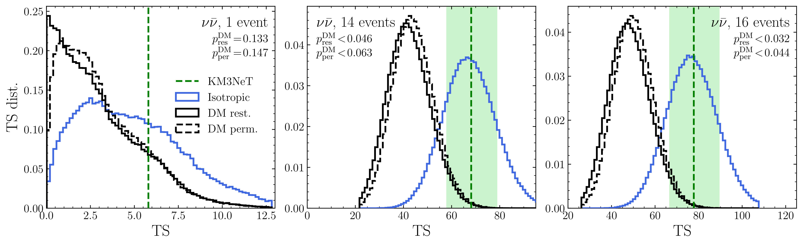
图注：Time-resolved scenario, $\nu\bar\nu$ channel: the full $\PDM(t,\delta,\alpha)$ retains the arrival time of each event. Otherwise as Fig.~\(\ref{fig:ts_static}.\) Panels (a)--(c): single event, and combined samples of $14$ and $16$ events.
对应解读：建议重点查看的灵敏度预测/模型比较图；对应摘要中“fully time-resolved forecast”“所需事件数降至约14--16”的核心结论。
入选理由：这是全文最关键的结果图，直接展示保留每个事件到达时间后的检验统计量分布，以及DM衰变假设与各向同性信号的区分能力；图中14和16个事件的组合样本正对应论文最强结论，即地球自转带来的时间信息显著减少排除DM假设所需事件数。
来源与置信度：\(arxiv_source\)；high；\(arxiv_source\) / main.tex:figure[6]
Fig05
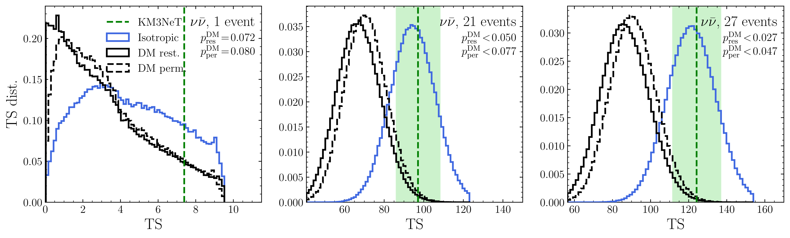
图注：Time-averaged-exposure scenario, $\nu\bar\nu$ channel: the visibility enters only through its daily average, discarding the arrival time. Otherwise as Fig.~\(\ref{fig:ts_static}.\) Panels (a)--(c): single event, and combined samples of $22$ and $27$ events.
对应解读：建议重点查看的模型比较/灵敏度预测图；对应摘要中“including the time-averaged detector visibility”“事件数从约33--43降至约22--27”。
入选理由：该图是连接纯几何分析与全时间分辨分析的关键中间步骤，显示只使用日平均可见度、不使用具体到达时间时的检验统计量表现；它能定量说明探测器曝光/可见度本身已经提升判别能力，但仍弱于Fig06的时间分辨方案。
来源与置信度：\(arxiv_source\)；high；\(arxiv_source\) / main.tex:figure[5]
Fig04
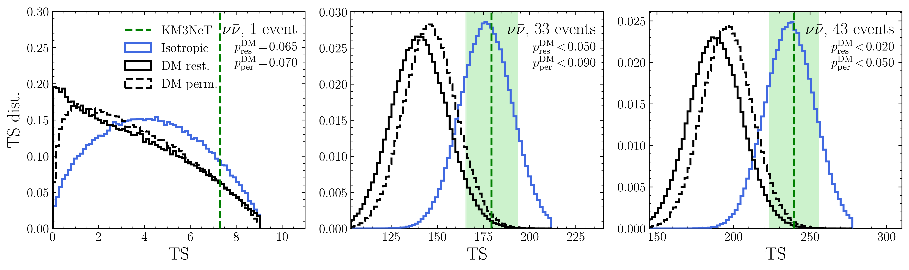
图注：Geometry-only scenario ($\Vis\equiv1$), $\nu\bar\nu$ channel. Green dashed: TS of the observed event; solid (dashed) black: restrictive (permissive) halo profile; blue: isotropic hypothesis. Panels (a)--(c): single event, and combined samples of $33$ and $43$ events.
对应解读：建议重点查看的基准模型比较图；对应模型拟合/似然检验中的geometry-only场景和单事件p值解释。
入选理由：该图给出不考虑探测器可见度变化的基准检验统计量分布，包括单个KM3-230213A事件以及33、43个事件组合样本；它是理解后续Fig05、Fig06改进幅度的必要参照，能直接展示观测事件在DM与各向同性假设下的位置。
来源与置信度：\(arxiv_source\)；high；\(arxiv_source\) / main.tex:figure[4]
Fig07
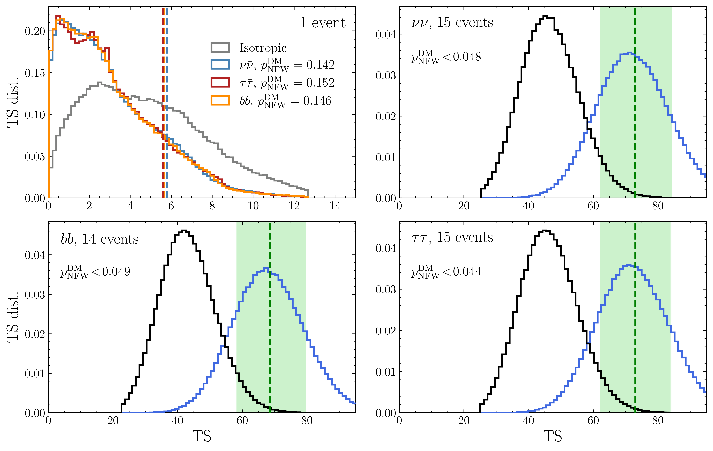
图注：Dependence on the DM decay channel, for the time-resolved scenario and the NFW profile only. Grey: isotropic hypothesis; blue: $\bar\nu\nu$; red: $\bar\tau\tau$; orange: $\bar b b$. Panel (a) shows the single observed event; panels (b), (c), (d) the combined samples for $\bar\nu\nu$, $\bar b b$ and $\bar\tau\tau$ respectively.
对应解读：建议重点查看的系统误差/稳健性图；对应摘要中“results are robust against DM decay channels”。
入选理由：该图检验不同DM衰变道对时间分辨检验统计量的影响，比较νν、ττ和bb等通道与各向同性假设的分布；它比单一通道图更适合支撑论文关于结论不依赖具体衰变道的稳健性声明。
来源与置信度：\(arxiv_source\)；high；\(arxiv_source\) / main.tex:figure[7]
Fig03
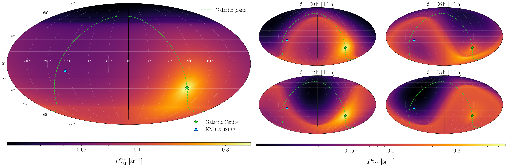
图注：Mollweide projections of the DM probability map $\PDM(\alpha,\delta)$ in equatorial coordinates for the NFW profile and $\nu\bar\nu$ channel. Green star: Galactic Centre $(\alpha,\delta)\approx(266.4^\circ,-28.9^\circ)$; green dashed curve: Galactic plane; cyan triangle: $\kmt$ at $(94.3^\circ,-7.8^\circ)$. \(\textbf{Top:}\) day-averaged map $\PDM^{\rm day}(\alpha,\delta)$. \(\textbf{Bottom:}\) instantaneous maps $\PDM^{t}(\alpha,\delta)$ at hours $t=0,\,6,\,12,\,18$\,h (each $\pm1$\,h band), sharing a common colour scale.
对应解读：关键图表逐图导读中应关注坐标轴、模型概率图和事件方向；对应论文的几何来源判别和日平均/瞬时概率图。
入选理由：该图用赤道坐标Mollweide投影展示DM概率图、银河中心、银道面以及KM3-230213A方向，并比较日平均与不同小时的瞬时概率分布；它直观解释为什么事件时间可把到达方向转化为几何探针，是理解Fig06统计优势的物理图像基础。
来源与置信度：\(arxiv_source\)；high；\(arxiv_source\) / main.tex:figure[3]
Fig02
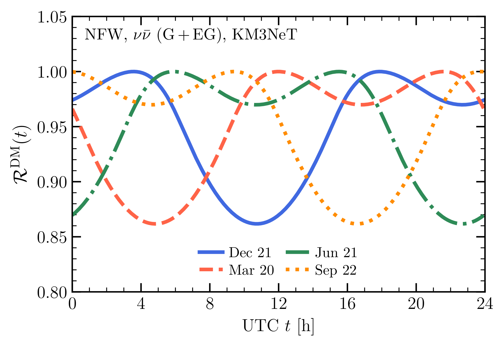
图注：Normalised DM-induced rate $\mathcal{R}^{\rm DM}(t)$ over a day for the NFW profile and the $\nu\bar\nu$ channel (Galactic plus extragalactic), at four epochs: Dec~21 (blue), Mar~20 (red dashed), Jun~21 (green dot-dashed), Sep~22 (orange dotted). The daily peak corresponds to the GC transiting the KM3NeT visible band.
对应解读：建议重点查看的时间调制诊断图；对应摘要中“Earth rotation turns event timing into a geometric probe”和“time variation in the signal provides vital information”。
入选理由：该图直接展示DM诱导事件率在一天内随时间的归一化变化，并标出不同季节的日变化曲线；它说明银河中心穿过KM3NeT可见带时会产生时间调制，是论文利用到达时间区分DM起源与各向同性信号的核心机制。
来源与置信度：\(arxiv_source\)；high；\(arxiv_source\) / main.tex:figure[2]
强相关工作
这是一篇围绕具名事件 KM3-230213A 的方法论文，因此相关文献应分成几类检索：同事件论文、同事件暗物质解释论文、UHE 中微子各向同性或天体物理来源论文、暗物质衰变中微子基础论文、以及 KM3NeT 探测器/有效面积论文。可靠入口包括本文 arXiv 页面 https://arxiv.org/abs/2607.20608 ，KM3NeT 官方网站 https://www.km3net.org/ ，NASA ADS 检索入口 https://ui.adsabs.harvard.edu/ 。建议在 ADS 或 arXiv 用关键词 “KM3-230213A”, “KM3NeT ultra-high-energy neutrino”, “dark matter decay neutrino”, “UHE neutrino origin”, “time dependent exposure neutrino telescope” 检索。
同事件上下文最重要：应查找 KM3NeT 对 KM3-230213A 的发现/事件说明论文或合作组公告，以及随后提出暗物质衰变解释的论文。本文摘要开头说“It has been proposed ... could be explained by dark matter decay”，说明它不是首篇提出 DM 解释的文章，而是对该解释做几何统计检验。若无法确认具体 arXiv 编号，不应编造；阅读时应从本文 introduction 和 bibliography 中抽取被引用的同事件 DM 解释论文。
基础工作方面，暗物质衰变产生高能中微子的通量计算通常依赖衰变型 $J$ 因子、NFW/Einasto/isothermal halo profile、河外红移积分和中微子望远镜有效面积。可检索综述关键词 “decaying dark matter neutrino flux review”, “Galactic halo decay J factor”, “IceCube decaying dark matter PeV neutrinos”。这些文献能帮助判断本文为何说结果对衰变道和 halo distribution 稳健。
可能存在张力或对立解释：KM3-230213A 也可能被解释为天体物理 UHE 中微子、宇宙线相互作用产生的 cosmogenic neutrino、某类瞬变源关联，或探测/重建背景。相关检索词包括 “cosmogenic neutrino KM3NeT”, “UHE neutrino transient association”, “isotropic astrophysical neutrino flux KM3NeT IceCube”。比较这些文献时，重点不是谁能解释一个事件，而是谁能在方向、能量、时间和事件率上同时给出可检验预测。
同一事件 / 同类源线索：
（未提供）
相似工作：
（未提供）
基础理论 / 方法工作：
（未提供）
相反观点 / 张力线索：
（未提供）
4. Revealing the Structure and Magnetization of GRB Jets with ALMA Polarization Observations
- 来源：arXiv / astro-ph.HE
- 链接：https://arxiv.org/abs/2607.20604v1
- 作者：Tanmoy Laskar, Collin T. Christy, Noah Franz, Gavin Farley, Kate D. Alexander, Jonathan Granot, Ramandeep Gill, Tarraneh Eftekhari
- 评分：novelty 8/10，importance 8/10，relevance 9/10，final 9.35/10
- 推荐理由：系统 ALMA 毫米偏振 GRB 余辉样本，含大量新观测并约束 GRB 喷流磁场结构、反向/正向激波和视角；GRB 高能天体物理相关性很高。
中文题目：用 ALMA 毫米偏振观测揭示伽马暴喷流的结构和磁化状态
做了什么：这篇论文系统整理并扩展了目前可用的 ALMA 毫米波伽马暴余辉偏振样本：共 11 个长暴、24 次观测，其中 20 次为新分析或新观测，覆盖爆发后约 \(0.1\) 到 \(87\) 天。作者在 6 个事件的 8 次观测中显著探测到线偏振，偏振度 \(\Pi_L\) 约为 \(0.6\%\) 到 \(2.4\%\)，其余观测给出中位数约 \(\Pi_L\lesssim1\%\) 的深上限。核心结论是：毫米偏振对区分前向激波、反向激波、环向磁场、随机小尺度磁场和 patchy 磁场非常敏感；若用 patchy-field 图像解释，磁场相干角尺度大致为 \(\theta_B\sim10^{-3}\) 到 \(10^{-2}\,\mathrm{rad}\)。
为什么重要：伽马暴喷流到底是物质主导还是磁场主导、磁场是有序环向结构还是激波后小尺度随机结构，是理解喷流发射机制和中心引擎的关键问题。光学偏振受尘埃、早期观测窗口和多成分污染限制很强；毫米波处在余辉谱的关键位置，能同时接触前向激波和反向激波，并且 ALMA 具备足够灵敏度和偏振校准能力。这篇文章的重要性在于，它不是单个漂亮事件的个案解释，而是把已有 ALMA 样本放到统一偏振模型框架下比较。
理论 / 观测 / 仪器方法价值：对理论而言，论文给出了喷流几何、视线角和磁场相干尺度之间的可观测约束，尤其检验了环向反向激波磁场模型与随机前向激波模型。对观测而言，它展示了毫米偏振的实际探测率、典型上限、系统误差量级和多历元演化信息。对方法而言，它把 Stokes 参数测量、偏振显著性、宽波段余辉建模给出的视角约束与偏振模型预测结合起来，是后续 ngVLA、ALMA 和 SKA 相关余辉偏振计划的直接参考。
为什么应该关注：如果你关心相对论喷流、磁化流、伽马暴中心引擎或瞬变源多信使观测，这篇文章值得看，因为它把“偏振能不能真正区分喷流物理”这个问题推到了可检验层面。它也提醒读者：单次偏振探测很容易被多模型解释，但多频、多历元、结合宽波段余辉几何约束后，某些常见模型会被排除。特别是 \(\mathrm{GRB}\,221009A\)、\(\mathrm{GRB}\,190114C\)、\(\mathrm{GRB}\,220921A\) 这些事件显示，明亮余辉并不自动等于简单磁场结构。
展开详细解读：文章讲解、背景、理论、重点章节、图表与相关工作
文章详细讲解
科学问题：伽马暴余辉来自相对论喷流与外部介质相互作用形成的激波辐射。总光变和谱能量分布可以约束能量、密度、电子能谱、喷流开角和视线角，但对磁场拓扑的判别能力有限。偏振是更直接的磁场诊断：有序环向磁场、激波压缩随机磁场、小尺度 patchy 磁场、前向激波与反向激波的相对贡献，都会在偏振度 \(\Pi_L\) 和偏振角 \(\chi\) 的时间演化中留下不同信号。本文要回答的是：现有 ALMA 毫米偏振数据能否已经对这些模型给出实质约束，而不只是报告若干低百分比探测。
作者怎么做：论文构建了一个包含 11 个长时标伽马暴的 ALMA 毫米偏振样本，共 24 个历元，其中 20 个为新观测或新处理结果，时间覆盖爆发后 \(\approx0.1\) 到 \(87\) 天。作者在每个历元测量 Stokes \(I\)、\(Q\)、\(U\)，由此得到线偏振度 \(\Pi_L\) 与偏振角，并对未探测历元给出上限。更重要的是，他们不把所有探测简单堆叠，而是逐个事件结合已有宽波段余辉建模结果，判断当时毫米波发射更可能由前向激波还是反向激波主导，再与不同磁场模型的偏振演化曲线比较。
关键结果：样本中 8 次观测在 6 个事件中显著探测到线偏振，\(\Pi_L\approx0.6\%\) 到 \(2.4\%\)，未探测点的典型上限约为 \(\Pi_L\lesssim1\%\)。\(\mathrm{GRB}\,190114C\) 是目前射电余辉中 \(\Pi_L\) 采样最好的案例之一，早期行为更支持反向激波中的 patchy 磁场，较晚期则与若干前向激波随机场模型大体相容。\(\mathrm{GRB}\,220921A\) 的偏振在 \(1.9\) 到 \(6.8\) 天内从 \(\Pi_L\lesssim0.4\%\) 快速升至 \(2.4\%\)，这不符合简单环向反向激波磁场模型，但可由多种前向激波随机场情形解释。\(\mathrm{GRB}\,221009A\) 给出样本中最高显著性的探测，\(\Pi_L\approx1.4\%\) 到 \(1.6\%\)，但既有前向激波和反向激波偏振模型通常难以同时复现偏振演化与宽波段余辉推断的观测几何，只有反向激波 patchy-field 图像相对例外。
局限和下一步：样本仍然很小，且每个事件的时间采样、频率覆盖和宽波段模型质量不均一。低百分比偏振的解释容易受仪器偏振泄漏、宿主/银河系传播效应、多发射区混合、闪烁以及光变插值误差影响。本文的模型比较多为物理解释层面的相容性检验，而不是对所有事件同时进行完整层级贝叶斯拟合。下一步需要更早触发、更高 cadence 的 ALMA 或 ngVLA 偏振监测，并与光学、X 射线和射电总强度联合建模，尤其要在反向激波消退前捕捉 \(Q\)、\(U\) 轨迹而不仅是 \(\Pi_L\)。
关键结果是怎么做出来的
样本选择上，作者收集的是已有或新获得的 ALMA 毫米线偏振观测，而不是所有 ALMA 伽马暴余辉观测。最终样本包含 11 个长暴、24 个偏振历元，时间从爆发后约 \(0.1\) 天延伸到 \(87\) 天。这样的选择意味着论文的统计结论应理解为“当前可用毫米偏振样本的物理图景”，而不是无偏的伽马暴总体偏振发生率。作者清楚地区分了显著探测与上限：8 个历元有显著线偏振，分布在 6 个事件中；其余历元给出通常低于 \(1\%\) 的上限。
证据链的第一步是 Stokes 参数测量。每个历元从 ALMA 偏振校准后的成像结果中得到 \(I\)、\(Q\)、\(U\)，再计算 \(\Pi_L\) 和 \(\chi\)。低信噪比下 \(\sqrt{Q^2+U^2}\) 有正偏，因此探测显著性和上限不能只看标称偏振度；需要在 \(Q\)-\(U\) 平面或采用去偏修正后判断。论文报告的 \(\Pi_L\approx0.6\%\) 到 \(2.4\%\) 是典型低百分比偏振，正好处在仪器校准和物理模型都必须认真处理的区域。
最有信息量的是多历元事件。\(\mathrm{GRB}\,190114C\) 的毫米偏振时间序列让作者可以比较早期反向激波与晚期前向激波的可能主导区间。早期 \(\Pi_L\) 的演化不容易由单一平滑有序场解释，却可由反向激波中多个相干磁场 patch 的统计叠加产生；晚期随着前向激波贡献增强，观测值落入随机场前向激波模型的宽范围内。这个结论依赖于宽波段余辉模型对谱段归属的判断，而不仅是偏振点本身。
\(\mathrm{GRB}\,220921A\) 的关键特征是快速上升：\(\Pi_L\) 从 \(\lesssim0.4\%\) 到 \(2.4\%\) 只用了数天。这种变化速度和幅度对环向反向激波模型不友好，因为在给定几何下环向场通常产生较可预期的偏振曲线和角度行为。作者将其与多种前向激波随机磁场模型比较，发现后者虽然不一定唯一，但更容易容纳这种上升。
\(\mathrm{GRB}\,221009A\) 是强检验案例，因为偏振探测显著性高、宽波段资料丰富、观测几何也有独立约束。论文指出，很多既有前向激波或反向激波模型无法同时满足两个条件：一是 \(\Pi_L\approx1.4\%\) 到 \(1.6\%\) 的演化，二是宽波段余辉拟合给出的视线几何。换言之，如果只拟合偏振，模型可能看起来可以；但加入总强度光变和喷流几何后，模型空间明显收缩。
系统误差和稳健性方面，读者应特别关注未探测点的上限如何定义、ALMA 偏振泄漏校准是否足以支持 \(<1\%\) 的结论、源的总强度信噪比是否足够高、以及不同频段或不同时间插值是否会改变前向激波/反向激波归属。论文的主要稳健性来自跨事件一致比较和若干深上限对模型的排除能力，但受限于样本规模，它更像是建立物理诊断框架，而不是给出最终人口统计分布。
展开背景、理论、公式、模型、章节和图表导读
背景知识
伽马暴余辉的标准图像是相对论喷流扫过外部介质后形成前向激波，同时一部分喷流 ejecta 可能被反向激波穿过。前向激波通常负责从射电到 X 射线的长时标余辉，反向激波则可能在早期光学和射电/毫米波段产生亮而快变的成分。总强度观测已经能较好描述很多余辉，但不同物理模型在总光变上常常高度退化。
偏振提供了额外维度。同步辐射在局域均匀磁场中本来可以产生很高线偏振，但观测到的伽马暴余辉偏振通常只有百分之几或更低，因为未分辨火球上不同区域的偏振方向相互抵消。如果磁场完全随机且几何完全轴对称，净偏振接近零；只要视线偏离喷流轴、喷流边缘可见、磁场存在各向异性或有限相干 patch，就会出现非零偏振。因此偏振是同时对磁场和几何敏感的观测量。
历史上，光学余辉偏振更早被系统研究，典型值约为 \(1\%\) 到几 \(\%\)，并且偶尔有偏振角旋转或喷流 break 附近的变化。但光学波段容易受银河系与宿主星系尘埃偏振影响，也常混有反向激波、前向激波和潜在早期高能成分。射电偏振更难，因为余辉较暗、角分辨率有限、校准要求高，并且低频还会受法拉第去偏影响。毫米波位于两者之间，既较少受法拉第效应影响，又能在早期追踪反向激波，是非常有价值但长期样本不足的窗口。
现在值得重新看这个问题，主要因为 ALMA 的灵敏度、带宽和偏振校准能力已经让 \(<1\%\) 级别的余辉偏振上限成为可能。同时，一批近年明亮长暴，如 \(\mathrm{GRB}\,190114C\)、\(\mathrm{GRB}\,190829A\)、\(\mathrm{GRB}\,221009A\)，有丰富的多波段数据，可把偏振解释放在更强的几何和谱演化约束中。过去单个偏振点很容易被多种模型解释，现在多历元毫米偏振开始能排除具体模型族。
常见误区之一是把低偏振度直接理解为“磁场无序”。事实上，一个局域有序场在未分辨相对论喷流上也可因几何抵消而给出低净偏振。另一个误区是把一次偏振探测直接归因于反向激波或前向激波；毫米波段两者都可能贡献，具体取决于谱峰、冷却频率、自吸收频率和光变阶段。还有一个误区是忽略视线角：同一磁场结构在近轴、边缘视线和离轴视线下的 \(\Pi_L(t)\) 可以完全不同。
基础理论 / 方法脉络
基础物理图像从同步辐射开始。相对论电子在磁场中回旋辐射，单个均匀磁场区域的线偏振可以很高；若电子能谱为幂律，最大线偏振度由谱指数决定，常可达到几十个百分点。但伽马暴余辉是未分辨源，观测到的是等到达时面上许多小区域 Stokes 向量的总和，所以净 \(\Pi_L\) 通常远低于局域最大值。
前向激波模型中，外部介质被冲击加热，磁场可能由 Weibel 等等离子体不稳定性放大，通常被近似为激波平面内随机但具有各向异性的场。若喷流轴对称且视线正对轴心，各区域偏振抵消；若视线偏轴，或喷流边缘逐渐可见，则抵消不完全，偏振度会随时间变化，并可能在喷流 break 附近出现峰值或偏振角变化。本文用这类随机场前向激波模型解释若干晚期毫米偏振点。
反向激波模型中，激波向喷流 ejecta 内传播，因此它更可能携带中心引擎发出的原初磁场信息。如果 ejecta 中存在大尺度环向磁场，反向激波辐射可能产生较有规律的偏振行为；如果 ejecta 磁场已被破碎成多个相干 patch，则偏振度由可见区域内 patch 数目的统计平均控制。本文多次发现，简单环向反向激波模型在某些事件中受限较强，而 patchy-field 反向激波模型更有弹性。
关键观测量是 Stokes \(I\)、\(Q\)、\(U\)，其中 \(I\) 是总强度，\(Q\) 与 \(U\) 编码线偏振方向。偏振度为 \(\Pi_L=\sqrt{Q^2+U^2}/I\)，偏振角为 \(\chi=\frac{1}{2}\arctan(U/Q)\)。因为 \(Q\) 和 \(U\) 的噪声会使 \(\sqrt{Q^2+U^2}\) 正定偏置，低信噪比偏振必须用去偏估计、上限或直接在 \(Q\)-\(U\) 空间建模。
主要退化来自三方面。第一，磁场结构与视线几何退化：低 \(\Pi_L\) 可来自混乱磁场，也可来自近轴视线导致的对称抵消。第二，发射区退化：前向激波和反向激波在毫米波段可能同时存在，总 Stokes 向量是两者相加，偏振角不同会互相抵消。第三，系统误差退化：ALMA 偏振泄漏、相位校准、源结构假设和总强度光变插值都可能影响 \(<1\%\) 级别结论。本文的价值在于把这些退化与宽波段余辉建模结合起来，而不是孤立解释偏振数值。
公式与推导
第一步是局域同步辐射偏振。若相对论电子能谱为 \(N(\gamma_e)\propto \gamma_e^{-p}\)，在均匀磁场、光学薄、幂律谱段内，最大线偏振度为
这里 \(p\) 是电子能谱指数，\(\gamma_e\) 是电子洛伦兹因子。对典型 \(p\approx2.2\)，\(\Pi_{\max}\) 可达约 \(70\%\)，这说明观测到的 \(\Pi_L\sim1\%\) 不是局域辐射本身弱偏振，而是几何平均和磁场混合的结果。
第二步是 Stokes 叠加。未分辨余辉的总偏振来自等到达时面上许多小区域贡献：
其中 \(I_\nu(\Omega)\) 是方向 \(\Omega\) 上的比强度，\(\Pi_{\rm loc}\) 是局域偏振度，\(\chi(\Omega)\) 是局域偏振角。不同区域的 \(\cos2\chi\) 和 \(\sin2\chi\) 抵消决定了净偏振。
第三步是观测偏振度和偏振角：
这里 \(I\)、\(Q\)、\(U\) 是同一频段、同一历元的 Stokes 通量密度。实际计算 \(\chi\) 时应使用双变量反正切以处理象限。本文报告的 \(\Pi_L\approx0.6\%\) 到 \(2.4\%\) 就是由这些量得到。
第四步是低信噪比去偏。若 \(Q\) 与 \(U\) 具有近似相同高斯误差 \(\sigma\)，观测偏振幅 \(P_{\rm obs}=\sqrt{Q^2+U^2}\) 有正偏，常用近似去偏估计为
适用条件是偏振信噪比较高且误差近似高斯。对边缘探测或上限，更稳妥的方法是在 \(Q\)-\(U\) 平面构造似然。
第五步是 \(Q\)-\(U\) 似然。给定模型 \(m\) 预测 \(Q_m\)、\(U_m\)，观测值 \(Q_o\)、\(U_o\) 的高斯似然可写作
这里 \(\sigma_Q\) 和 \(\sigma_U\) 是 Stokes 参数误差，\(C\) 是归一化常数。这个形式避免了直接拟合正定的 \(\Pi_L\) 所带来的偏置，也适合比较探测点和非探测上限。
第六步是前向激波通量标度。光学薄同步余辉常写成分段谱，若观测频率满足 \(\nu_m<\nu<\nu_c\)，则
其中 \(\nu_m\) 是最小注入电子对应的特征频率，\(\nu_c\) 是冷却频率，\(F_{\nu,\max}\) 是峰值通量。判断 ALMA 毫米点由前向激波还是反向激波主导，必须先看该频段位于哪个谱段以及光变是否符合相应标度。
第七步是可见区域和相干 patch 的估计。若可见角尺度约为 \(1/\Gamma\)，磁场相干角尺度为 \(\theta_B\)，可见区域内独立 patch 数近似为
这里 \(\Gamma\) 是流体洛伦兹因子。若各 patch 偏振方向近似随机，净偏振大致按随机游走降低。
第八步得到 patchy-field 偏振标度：
因此给定观测 \(\Pi_L\) 和宽波段模型约束的 \(\Gamma(t)\)，可以反推 \(\theta_B\)。本文用类似物理图像得到 \(\theta_B\sim10^{-3}\) 到 \(10^{-2}\,\mathrm{rad}\) 的相干尺度量级。
第九步是多成分 Stokes 相加。若毫米波同时包含前向激波 \(\mathrm{FS}\) 与反向激波 \(\mathrm{RS}\)，则
由于 \(Q\) 和 \(U\) 是带符号量，两成分即使各自有较高偏振，也可能因偏振角不同而抵消，使总 \(\Pi_L\) 很低。这是解释单历元低偏振时必须考虑的退化。
第十步是模型比较诊断。若两个模型的最大似然分别为 \(\mathcal{L}_1\) 和 \(\mathcal{L}_2\)，可用
作为相对拟合优劣的近似诊断。实际论文更多是结合几何先验、上限和偏振演化做物理排除；这个公式说明了为什么同时拟合 \(I\)、\(Q\)、\(U\) 的时间序列会比只看 \(\Pi_L\) 更有判别力。
模型拟合 / 应用方法
这类工作首先要拟合或采用已有的宽波段余辉模型。拟合量包括多频总通量光变、谱峰位置、谱斜率、喷流 break 时间以及可能的反向激波成分。常见参数包括各向同性等效能量 \(E_{\rm iso}\)、外部介质密度 \(n\) 或风介质参数、电子能量分数 \(\epsilon_e\)、磁场能量分数 \(\epsilon_B\)、电子指数 \(p\)、喷流半开角 \(\theta_j\)、视线角 \(\theta_{\rm obs}\) 和初始洛伦兹因子。本文在解释偏振时大量依赖这些宽波段约束，尤其是 \(\theta_{\rm obs}/\theta_j\) 与某历元前向/反向激波主导性的判断。
偏振拟合最好在 Stokes 空间进行。直接拟合 \(\Pi_L\) 会遇到正定偏差，并丢失偏振角信息。对每个历元，应把模型预测转成 \(Q_m=I_m\Pi_m\cos2\chi_m\) 和 \(U_m=I_m\Pi_m\sin2\chi_m\)，再与观测的 \(Q_o\)、\(U_o\) 比较。若只有上限，也可以通过 \(Q\)-\(U\) 平面似然自然纳入，而不是把上限当作硬阈值。
主要参数退化包括磁场拓扑与视线几何退化、前向/反向激波通量分解退化、以及 patch 数目与局域最大偏振度退化。例如低 \(\Pi_L\) 可由大量小 patch、近轴视线、两个成分相互抵消或仪器系统误差造成。高 \(\Pi_L\) 也不必然说明有序环向场，因为偏轴几何下随机各向异性场也能产生百分之几偏振。
系统误差方面，ALMA 偏振校准中的 leakage 项、增益漂移、相位误差和绝对偏振角校准都会影响低百分比信号。天体物理系统误差还包括毫米波闪烁、宿主星系或超新星成分污染、光变非同步采样、频段内谱演化以及自吸收影响。读者看拟合残差时，不应只问模型线是否穿过 \(\Pi_L\) 点，还要看总强度模型是否同时成立、未探测上限是否被违反、偏振角是否连续或发生合理跳变。
实际应用上，本文说明偏振拟合不应作为总强度拟合之后的装饰，而应成为联合约束的一部分。理想流程是：先用宽波段 \(I_\nu(t)\) 限定动力学和谱参数，再在这些后验样本上计算偏振模型预测，最后用 \(Q\)、\(U\) 更新磁场拓扑和视线几何的后验。对于未来样本，层级贝叶斯模型还可以估计伽马暴喷流中 patchy-field 相干尺度分布或环向场占比。
重点章节 / 结果段落怎么读
数据/样本部分应优先阅读。这里决定了论文结论的适用范围：11 个长暴、24 个 ALMA 偏振历元、20 个新观测或新分析、时间范围 \(\approx0.1\) 到 \(87\) 天。读者要注意每个事件的观测频段、总强度信噪比、是否多历元、以及是否有同步多波段约束。
偏振测量方法部分是第二个重点。应检查作者如何从 ALMA 数据得到 Stokes \(I\)、\(Q\)、\(U\)，如何处理偏振泄漏和校准误差，如何定义显著探测与上限。由于许多结果位于 \(\Pi_L\lesssim1\%\) 附近，这些技术细节直接决定物理解释是否可信。
模型比较部分是全文核心。读者应关注作者如何把观测点放入前向激波随机场、反向激波环向场、反向激波 patchy-field 等模型框架中。尤其要看模型是否使用了独立宽波段余辉建模给出的几何约束，而不是任意调节 \(\theta_{\rm obs}\) 或 \(\theta_j\) 来适配偏振。
个例讨论部分最值得细读的是 \(\mathrm{GRB}\,190114C\)、\(\mathrm{GRB}\,220921A\)、\(\mathrm{GRB}\,221009A\)、\(\mathrm{GRB}\,171205A\) 和 \(\mathrm{GRB}\,190829A\)。这些事件分别代表了多历元演化、快速偏振上升、高显著性探测、深上限排除模型、以及单历元强探测对几何的强约束。
讨论和结论部分应把重点放在“哪些模型真的被排除，哪些只是相容”上。本文最强的贡献不是证明某一个统一模型解释所有伽马暴，而是展示毫米偏振已经能对环向反向激波模型、patchy-field 相干尺度和前向激波随机场几何给出有意义限制。
建议重点查看的图表
-
样本总览图或表：看 11 个事件、24 个历元的时间、频率、\(I\)、\(Q\)、\(U\)、\(\Pi_L\) 和上限。重点检查探测点与非探测点是否集中在特定时间或亮度范围。
-
\(\Pi_L(t)\) 演化图：看每个多历元事件的偏振度随爆发后时间变化，尤其是 \(\mathrm{GRB}\,190114C\) 和 \(\mathrm{GRB}\,220921A\)。关键是上升/下降趋势是否超过误差和上限约束。
-
\(Q\)-\(U\) 平面诊断图：如果论文给出，应检查探测点是否显著偏离原点，上限是否由二维误差椭圆支持。低偏振探测最怕只在 \(\Pi_L\) 空间显著而在 Stokes 空间不稳健。
-
与前向激波偏振模型比较图：看模型线或阴影区如何随视线角、喷流开角和随机场各向异性变化。重点检查模型是否同时满足宽波段几何约束。
-
与反向激波环向场模型比较图：看 \(\mathrm{GRB}\,171205A\)、\(\mathrm{GRB}\,190829A\)、\(\mathrm{GRB}\,221009A\) 这类事件中模型是否被深上限或偏振演化排除。
-
patchy-field 相干尺度估计图或表：看 \(\theta_B\sim10^{-3}\) 到 \(10^{-2}\,\mathrm{rad}\) 的推断来自哪些事件、对 \(\Gamma(t)\) 和 \(\Pi_{\max}\) 假设是否敏感。
-
宽波段余辉模型图：偏振解释依赖前向/反向激波分解，因此应检查毫米频段在相应历元是否确实由作者声称的成分主导。
关键图表逐图导读
图 1：通常应是样本或观测时间分布导读。横轴可理解为爆发后时间，纵轴可能是观测频率、通量或事件编号。读者要看 ALMA 偏振观测是否集中在早期反向激波可能存在的窗口，还是更多落在晚期前向激波阶段。读图陷阱是把样本覆盖当作均匀时间采样；实际上许多事件只有单历元，人口统计解释要谨慎。
图 2：若展示各事件的 \(\Pi_L(t)\)，横轴应为爆发后时间，纵轴为线偏振度，数据点为探测，向下箭头为上限，模型线或阴影区代表不同前向/反向激波磁场模型。重点看 \(\mathrm{GRB}\,190114C\) 的早晚期是否落入不同模型区域，以及 \(\mathrm{GRB}\,220921A\) 的快速上升是否明显超过误差。陷阱是忽略上限：一个低上限往往比一个低显著性探测更能排除模型。
图 3：若为 \(Q\)-\(U\) 平面图，横轴为 \(Q/I\) 或 \(Q\)，纵轴为 \(U/I\) 或 \(U\)，原点代表无偏振。显著探测应表现为误差椭圆不包含或明显远离原点。读者要看误差是否近似圆形、是否存在系统偏移、不同历元是否沿某个方向移动。陷阱是只看 \(\sqrt{Q^2+U^2}\) 而忽视 \(Q\) 与 \(U\) 的协方差。
图 4：若为 \(\mathrm{GRB}\,190114C\) 个例图，应同时展示总强度光变和偏振演化。横轴为时间，纵轴可能分成通量密度和 \(\Pi_L\)。模型线区分前向激波与反向激波贡献。主要结论是早期偏振更支持反向激波 patchy-field，晚期偏振与前向激波随机场相容。陷阱是把偏振变化完全归因于磁场变化，而忽视发射成分切换。
图 5：若为 \(\mathrm{GRB}\,221009A\) 模型比较图，横轴可能是时间或视线几何参数，纵轴为 \(\Pi_L\) 或模型允许区间。读者应检查宽波段余辉给出的 \(\theta_{\rm obs}\) 与 \(\theta_j\) 是否作为约束叠加在图上。关键结论是许多既有模型不能同时解释偏振和几何。陷阱是只看某个模型能否穿过偏振点，而不看它是否要求与总强度模型矛盾的视线角。
图 6：若为 patchy-field 推断图，横轴可能为时间、\(\Gamma\) 或事件编号，纵轴为 \(\theta_B\)。数据点或区间表示由观测 \(\Pi_L\) 反推的相干尺度。重点看不同事件是否都落在 \(10^{-3}\) 到 \(10^{-2}\,\mathrm{rad}\) 量级，以及不确定度是否主要由 \(\Gamma(t)\) 还是 \(\Pi_L\) 贡献。陷阱是把 \(\theta_B\) 当作直接成像量；它是模型依赖推断。
论文原图 / 可嵌入图片
Fig08
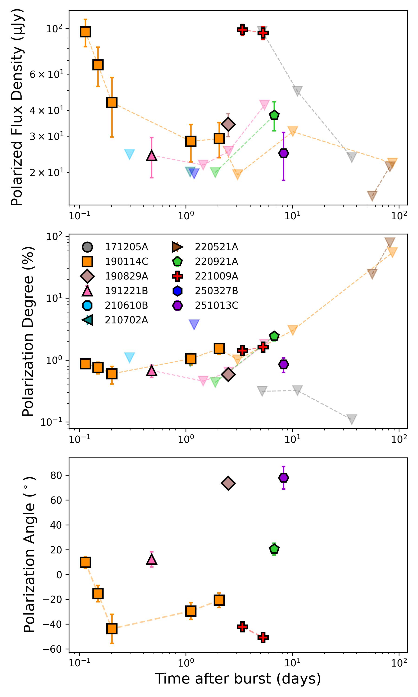
图注：Linear polarized flux density ($\PL$, top panel), linear polarization degree ($\PiL$, middle panel), and polarization position angle ($\chi$, bottom panel) as a function of time since the burst in days. Non-detections are shown as downward-pointing triangles corresponding to 95\% upper limits. Multiple epochs for the same event are connected by dashed lines to guide the eye.\
对应解读：“建议重点查看的图表”第2项与“关键图表逐图导读”图2：各事件的线偏振度、偏振通量和偏振角随爆发后时间演化。
入选理由：这是全样本偏振时间演化的核心图，直接展示探测点、95%上限、多历元连接线以及偏振角变化，最能支撑日报中关于GRB 190114C、GRB 220921A等事件偏振上升/下降趋势和上限约束重要性的解读。
来源与置信度：\(arxiv_source\)；high；\(arxiv_source\) / main.tex:figure[8]
Fig10
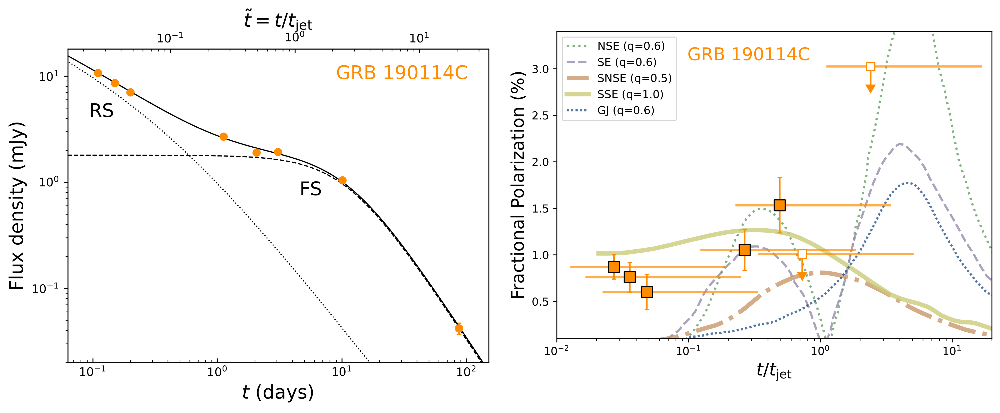
图注：\(\textbf{GRB\,190114C.}\) Left panel: The ALMA 3mm Stokes $I$ light curve with time since burst in days (lower axis) and scaled to $\tjet=4.2$\,days (Appendix~\(\ref{sec:tjet}\); upper axis) appears to comprise two emission components (broken power-law models presented to guide the eye). Right panel: $\PiL$ measurements and upper limits, compared with theoretical model polarization curves from \(\citet{rlsg04}\) for a random magnetic field scaled by $\Pi_{\rm rnd}/\Pimax\approx(b-1)/(b+1)\sim0.2$ corresponding to $b=0.66$ \(\citep{gg20}.\) Horizontal bars indicate the expected range of $\tovertjet$ for each observation (Appendix~\ref{sec:tjet}). The legend describes the off-axis viewing angle ($q\equiv\thetaobs/\thetajet$) and jet model: non-sideways expanding (NSE), sideways expanding (SE), (power-law) structured non-sideways expanding (SNSE), structured sideways expanding (SSE), and Gaussian jet (GJ). Our new polarization observations at $\tovertjet\gtrsim0.1$ are consistent with top-hat jet (green dotted and blue dashed) FS models.
对应解读：“关键图表逐图导读”图4与“模型拟合”段落：GRB 190114C的毫米总强度光变、前向/反向激波成分判断和偏振模型比较。
入选理由：该图同时给出ALMA 3mm Stokes I光变和Π_L随时间的模型比较，明确涉及两成分光变、t/t_jet标度、随机磁场前向激波模型和不同喷流结构，是解释GRB 190114C早晚期偏振来源切换的最关键个例图。
来源与置信度：\(arxiv_source\)；high；\(arxiv_source\) / main.tex:figure[10]
Fig09
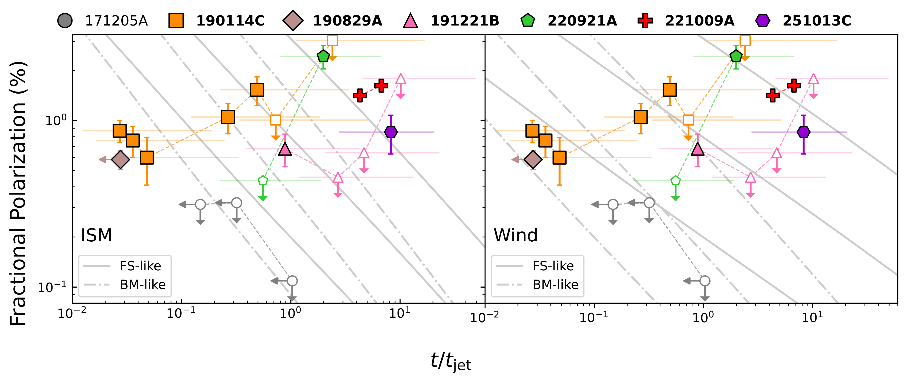
图注：ALMA mm-band polarimetry for GRBs in our sample with constrained jet-break times and either deep ($\lesssim0.5\%$; 171205A) upper limits or at least one linear polarization detection\footnote{The final polarization observation of GRB\,190114C at $\approx87$\,days (corresponding to $\tovertjet\approx21$) yields only a weak upper limit ($\lesssim55\%$) and does not appear on this plot.}, along with theoretical model polarization light curves for a toroidal magnetic field in a top-hat (i.e.,
uniform'') jet for ISM-like and wind-like environments from \(\citet{gt05}\) as relevant for RS emission. The top-hat jet models are presented for a range of off-axis viewing angles, $q=\theta_{\rm obs}/\theta_{\rm jet}=[0.2, 0.1, 0.05]$ (from top to bottom in each panel). We assume $\Pi_{\rm 0,max}=(p+1)/(p+7/3) \approx 72\%$ (corresponding to $p=2.5$) in each case. For the solid lines, the Lorentz factor of the ejecta is assumed to remain equal to that of the freshly shocked fluid just behind the forward shock (FS-like''), while for the dashed lines, it is assumed to follow the BM self-similar solution (``BM-like''). These two cases bracket the dynamics of the shocked ejecta in terms of its $\Gamma(R)\propto R^{-g}$ with $\frac{3-k}{2}\leq g\leq\frac{7-k}{2}$ \(\citep{ks00,gt05}\) where $\rho_{\rm ext}\propto R^{-k}$ with $k=0$ for an ISM and $k=2$ for a steady stellar wind. The horizontal bars for each data point correspond to the statistical uncertainty on $\tjet$ for that event (see Appendix~\ref{sec:tjet}) and the horizontal position of the points is sensitive to the assumed $\tjet$.对应解读：“建议重点查看的图表”第5项：与反向激波环向磁场模型比较，尤其检验GRB 171205A、GRB 190829A及其他有喷流break约束的事件。
入选理由：该图把ALMA毫米偏振数据与反向激波环向磁场top-hat喷流模型直接对比，并展示不同视线角q、ISM/风环境、FS-like/BM-like动力学曲线；非常适合支撑日报中关于深上限排除环向场模型和视线几何敏感性的讨论。
来源与置信度：\(arxiv_source\)；high；\(arxiv_source\) / main.tex:figure[9]
Fig11
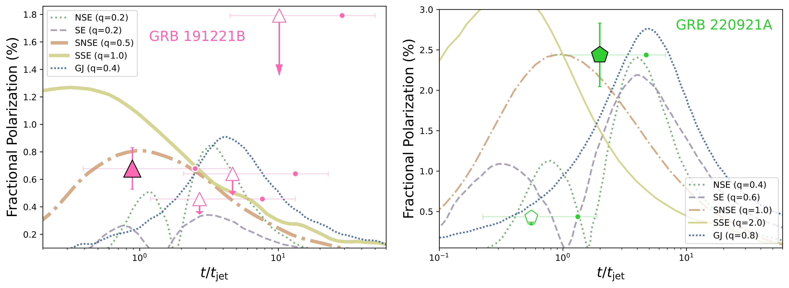
图注：ALMA mm-band polarimetry (data points) for GRBs\,191221B and 220921A compared with theoretical model polarization light curves from \(\citet{rlsg04}\) for a random magnetic field scaled by $\Pi_{\rm rnd}/\Pimax=(b-1)/(b+1)\sim0.2$ corresponding to $b=0.66$ \(\citep{gg20}.\) Horizontal bars indicate the expected range of $\tovertjet$ for each observation (Appendix~\ref{sec:tjet}). The legend in each panel describes the off-axis viewing angle ($q\equiv\thetaobs/\thetajet$) and jet model: non-sideways expanding (NSE), sideways expanding (SE), (power-law) structured non-sideways expanding (SNSE), structured sideways expanding (SSE), and Gaussian jet (GJ). For GRB\,191221B, the observed polarization curves are roughly consistent with the NSE ($q=0.2$), SE ($q\approx0.2$--0.4), SNSE ($q=0.5$), and SSE ($q=1$) models (the dot corresponds to $\tjet = 0.19$\,days), while the GJ model is ruled out. For GRB\,220921A, the polarization measurements are consistent with NSE ($q=0.4$) and SE ($q=0.6$) models (the dot corresponds to $\tjet = 1.43$\,days), and broadly with the GJ models.
对应解读：“建议重点查看的图表”第2和第4项：GRB 220921A及GRB 191221B的Π_L(t)与前向激波随机磁场模型比较。
入选理由：该图直接包含GRB 220921A从低上限到较高偏振探测的关键数据，并与多种前向激波随机场喷流模型、视线角q和t/t_jet范围比较，是判断其快速偏振上升是否可由FS随机场解释的核心证据。
来源与置信度：\(arxiv_source\)；high；\(arxiv_source\) / main.tex:figure[11]
Fig12
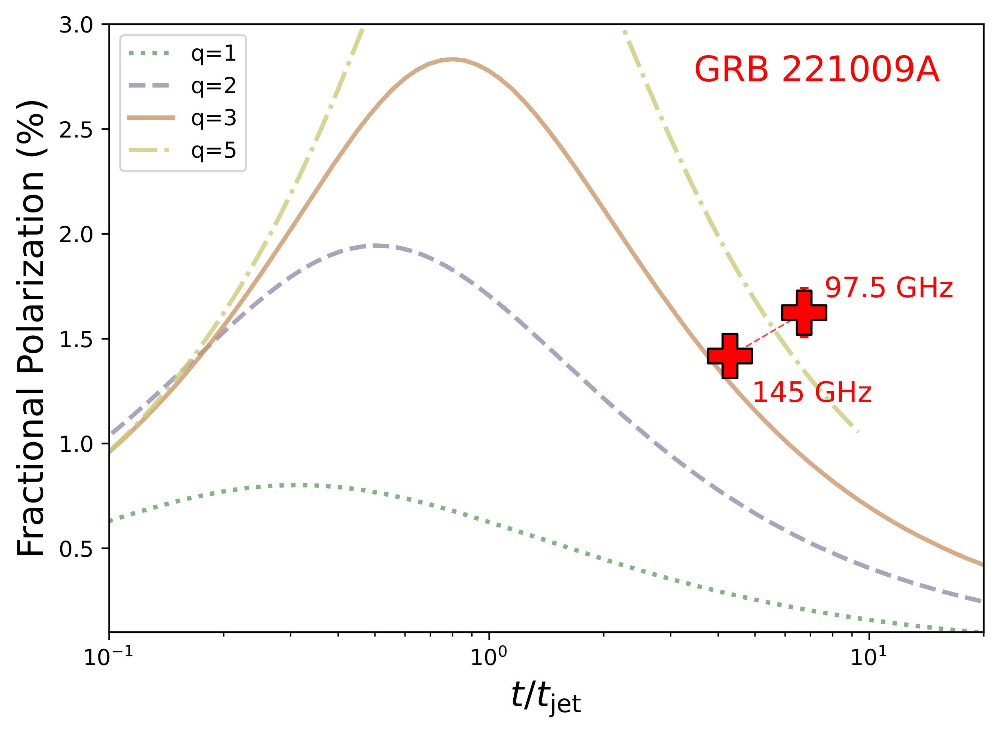
图注：ALMA mm-band polarimetry (data points) for GRB\,221009A assuming $\tjet\sim0.8$\,days \(\citep{otr+23,gg23},\) compared with FS polarization models from \(\citet{bgb+24}\) with a random magnetic field and power-law energy profile index, $a=1$, scaled by $\Pi_{\rm rnd}/\Pimax=(b-1)/(b+1)\sim0.2$ for $b=0.66$ \(\citep{gg20}.\) These models are only consistent with the data for a highly off-axis viewing geometry $q\gtrsim3$, which is not consistent with the light curves \(\citep{gg23}.\)
对应解读：“关键图表逐图导读”图5与“模型拟合”段落：GRB 221009A偏振数据、前向激波模型和宽波段余辉几何约束之间的矛盾。
入选理由：该图专门展示GRB 221009A的ALMA偏振点与FS随机磁场模型对比，并指出只有高度离轴q≳3才可匹配偏振而与总强度光变几何不一致，正对应日报强调的‘不能只看模型穿过偏振点，还要看是否违反宽波段几何约束’。
来源与置信度：\(arxiv_source\)；high；\(arxiv_source\) / main.tex:figure[12]
Fig07
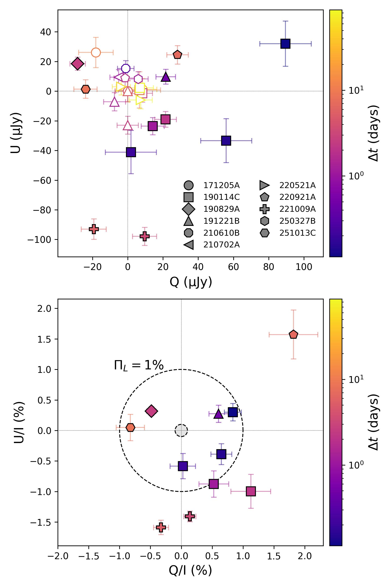
图注：Stokes $U$ vs $Q$ measurements for all GRBs in our sample (top panel) and $U/I$ vs $Q/I$ for the detected sources (bottom panel). Filled markers in both panels denote polarization detections ($Z\gtrsim3$), open markers indicate non-detections, data points are color-coded by time since burst, and error bars represent the $1\sigma$ uncertainties. Non-detections cluster near $(Q,U)=(0,0)$, consistent with noise. In the lower panel, the inner and outer dashed circles indicate $\Pi_L=0.1\%$ and $\Pi_L=1\%$, respectively.
对应解读：“建议重点查看的图表”第3项与“模型拟合”中关于应在Stokes Q-U空间检验偏振显著性的讨论。
入选理由：该图给出全样本U-Q和U/I-Q/I平面，区分探测与非探测并显示误差棒和Π_L参考圆，能直接检验低百分比偏振是否在Stokes空间显著偏离原点，比单看Π_L更能支撑对探测稳健性、上限和系统偏移风险的解读。
来源与置信度：\(arxiv_source\)；high；\(arxiv_source\) / main.tex:figure[7]
强相关工作
这篇工作与早期光学余辉偏振研究一脉相承，例如喷流几何导致偏振峰和偏振角变化的模型、随机磁场各向异性模型、以及反向激波有序磁场模型。它的不同点在于把诊断窗口放到毫米波，并利用 ALMA 的低偏振度测量能力。建议检索关键词包括“GRB afterglow polarization forward shock random magnetic field”、“reverse shock toroidal magnetic field GRB polarization”、“ALMA GRB millimeter polarimetry”和“patchy magnetic field gamma-ray burst afterglow”。
同一事件背景方面，\(\mathrm{GRB}\,190114C\) 是有 TeV 探测和丰富多波段余辉的长暴，\(\mathrm{GRB}\,190829A\) 也有甚高能伽马射线余辉，\(\mathrm{GRB}\,221009A\) 是极端明亮的近邻长暴并有大量后续论文，\(\mathrm{GRB}\,171205A\) 与低红移长暴/超新星关联研究相关。读者应把本文的偏振解释与这些同事件宽波段建模论文对照阅读，尤其关注视线角、喷流结构和反向激波证据是否一致。
相反观点或张力主要来自两类解释。第一类认为低偏振普遍说明激波生成小尺度随机磁场占主导，不需要大尺度磁化 ejecta；第二类认为早期反向激波偏振仍可能保留中心引擎有序磁场，只是几何抵消和多成分混合降低了净偏振。本文的结果并不简单支持其中一方，而是显示不同事件可能需要不同磁场结构，且环向反向激波模型在若干具体几何下受到压力。
同一事件 / 同类源线索：
相似工作：
- https://arxiv.org/abs/astro-ph/9903339
- https://arxiv.org/abs/astro-ph/0405503
- https://arxiv.org/abs/1410.0679
基础理论 / 方法工作：
- https://arxiv.org/abs/astro-ph/9709273
- https://arxiv.org/abs/astro-ph/9712005
- https://arxiv.org/abs/astro-ph/9901233
- https://arxiv.org/abs/astro-ph/9903339
相反观点 / 张力线索：
（未提供）
5. Polarization of impulsive relativistic jets propagating in a stratified medium
- 来源：arXiv / astro-ph.HE
- 链接：https://arxiv.org/abs/2607.20618v1
- 作者：Gal Birenbaum, Paz Beniamini, Jonathan Granot
- 评分：novelty 7/10，importance 7/10，relevance 9/10，final 8.70/10
- 推荐理由：研究GRB和喷流TDE在分层介质中的余辉偏振演化，直接服务于GRB/TDE喷流几何和磁场诊断；属于高能瞬变多波段建模，值得关注。
中文题目：分层外部介质中脉冲相对论性喷流的余辉偏振
做了什么：这篇论文计算了伽马暴和喷流型潮汐瓦解事件中，脉冲相对论性喷流在分层外部介质里传播时的同步辐射余辉偏振。作者把外部密度写成随半径下降的幂律介质，并比较顶帽喷流与角向结构喷流在不同视线角、磁场构型和介质分层指数下的光变曲线与偏振曲线。核心结论是：相对于均匀介质，分层介质通常会降低可观测偏振度，并把偏振演化拉长到更长时间尺度；偏振峰值往往出现在光变曲线几何破折附近。因此，偏振不只是“额外观测量”，而是能帮助约束视角、喷流角结构、外部密度分布和冲击后磁场结构的诊断工具。
为什么重要：长伽马暴的前身星风和许多喷流型潮汐瓦解事件的核区环境都不应简单近似为均匀介质，而大量余辉偏振解释过去主要围绕均匀外介质展开。本文把外部密度分层这一现实因素系统纳入偏振建模，说明同样的喷流几何和磁场结构在不同介质中会给出不同的偏振幅度、峰值时间和符号翻转行为。这直接影响我们用偏振反推喷流开角、视线偏离角和磁场各向异性时的可靠性。
理论 / 观测 / 仪器方法价值：对理论建模而言，本文给出了把余辉光变和偏振联合拟合时必须考虑的介质维度，尤其适合长伽马暴、低亮度伽马暴和喷流型潮汐瓦解事件。对观测而言，它指出偏振峰值最值得在光变几何破折附近捕捉，并且偏振演化时间尺度本身可作为视角和分层指数的约束。对方法而言，本文强调仅用光变曲线可能存在喷流结构、外介质和能量尺度的退化，而偏振曲线能在一定程度上打破这些退化。
为什么应该关注：如果你用余辉光变推断喷流结构、用偏振解释冲击后磁场，或计划为伽马暴和潮汐瓦解事件安排光学、射电偏振随访，这篇文章都值得看。它提醒我们：偏振度低不一定意味着磁场更混乱，也可能是分层介质改变了可见发射区的几何权重；偏振峰出现较晚也不一定意味着喷流物理不同，而可能是外部密度剖面改变了减速和几何破折的时间标度。
展开详细解读：文章讲解、背景、理论、重点章节、图表与相关工作
文章详细讲解
科学问题：相对论性喷流余辉的偏振来自同步辐射，而净偏振并不只由局域磁场决定，还强烈依赖可见发射面的对称性如何被视线、喷流边界、角向结构和相对论性束射打破。已有许多伽马暴余辉偏振模型假设外部介质近似均匀，但长伽马暴的 Wolf-Rayet 星风自然给出接近 \(\rho \propto r^{-2}\) 的分层环境，喷流型潮汐瓦解事件的核区气体也可能呈明显径向梯度。本文要问的是：当喷流不是在均匀介质中减速，而是在分层介质中减速时，偏振曲线的峰值、时间尺度和符号演化会如何改变？
作者怎么做：论文构建了脉冲相对论性喷流与外介质相互作用的余辉偏振计算框架。喷流部分包括顶帽喷流和角向结构喷流，外介质写成 \(n(r)\propto r^{-k}\) 一类幂律剖面，其中 \(k=0\) 对应均匀介质，较大的 \(k\) 对应风状或更强分层介质。辐射机制采用前向激波后的同步辐射，偏振由局域 Stokes 参量在等到达时间面上积分得到。作者改变视线角、喷流结构、外介质分层指数和磁场几何，比较总流量、偏振度和偏振位置角的随时间演化。
关键结果：分层介质中的偏振度通常低于均匀介质中的对应结果，且偏振曲线变宽、演化更慢。物理上，这是因为外部密度剖面改变了喷流减速律、可见发射区域的增长速度和不同角向区域对总通量的权重。偏振峰通常出现在光变曲线的几何破折附近，也就是当相对论性束射角 \(1/\Gamma\) 与喷流角尺度、视线偏离角相当时。这个结论很实用：若观测资源有限，几何破折附近是最值得密集做偏振监测的窗口。
局限和下一步：本文主要讨论轴对称喷流结构和参数化外介质，没有试图覆盖所有可能的三维不稳定性、斑块状喷流、微物理参数随时间演化或逆激波贡献。现实观测还会受到稀疏采样、宿主星消光、银河系尘埃偏振、仪器系统偏振和多波段非同时性的影响。下一步自然是把本文这类分层介质偏振模型嵌入光变与偏振联合贝叶斯拟合框架，应用到具有较好采样的长伽马暴、低亮度伽马暴和喷流型潮汐瓦解事件；同时也需要研究反向激波、能量注入和非轴对称外介质是否会模仿类似的偏振时间尺度。
关键结果是怎么做出来的
本文最重要的证据链不是来自单个观测样本，而是来自一组受控数值模型比较：在保持喷流类型、视线角和磁场处方可比的情况下，只改变外部介质分层指数 \(k\)，检查光变曲线与偏振曲线如何一起变化。样本选择因此是“模型样本”而非天体样本：顶帽喷流和结构喷流分别作为两类基准，\(k=0\) 的均匀介质作为对照，风状或更陡的分层介质作为待检验情形。读者应把这篇文章看作理论参数空间扫描，而不是某个事件的最佳拟合报告。
事件数或样本量在这里对应参数网格的覆盖范围：不同视线角、不同喷流角结构、不同外介质剖面和不同磁场构型组合成一系列光变与偏振预测。关键判断量包括总光度 \(F_\nu(t)\)、线偏振度 \(\Pi(t)\)、Stokes 参量 \(Q(t)\) 与 \(U(t)\)，以及偏振位置角是否发生 \(90^\circ\) 翻转。最有信息量的比较是同一喷流在 \(k=0\) 与 \(k>0\) 中的偏振峰值和峰宽差别，因为这直接隔离了介质剖面对偏振的影响。
显著性或置信度在本文中不是观测统计意义上的 \(\sigma\) 检验，而是物理趋势的稳健性：作者检查顶帽喷流和结构喷流是否都表现出类似倾向，即分层介质通常压低偏振度并拉长演化时间尺度；同时检查偏振峰是否与光变几何破折相近。这里的“模型比较”主要是确定性辐射转移或半解析积分结果之间的对照，而非把若干模型对真实数据做信息准则排名。真正用于观测时，才应把这些预测写成似然函数并与偏振测量误差、上限和系统误差一起拟合。
支撑结论的图表应包括：不同 \(k\) 下的光变曲线、对应的偏振度曲线、Stokes 参数或偏振位置角演化、以及顶帽与结构喷流的并列比较。读者要特别看偏振峰与光变破折时间是否同位、峰值是否随 \(k\) 单调降低、曲线宽度是否随分层增强而增加。若图中有不同视线角曲线，还应检查介质分层和视线角是否产生相似的时间拉伸，因为这关系到后续拟合是否存在退化。
主要系统误差来自模型假设而非数据校准：外部介质是否真能用单一幂律表示，喷流是否严格轴对称，微物理参数 \(\epsilon_e\)、\(\epsilon_B\) 和电子谱指数 \(p\) 是否随半径不变，以及是否忽略了反向激波、晚期能量注入或宿主尘埃偏振。稳健性检验的核心是看结论是否同时存在于顶帽和结构喷流中，以及是否只依赖某个特定磁场构型。若某些参数组合出现偏振符号翻转或峰值增强，读者应追踪这是否源自几何不对称增强，而不是外介质效应本身。
展开背景、理论、公式、模型、章节和图表导读
背景知识
研究对象是伽马暴和部分潮汐瓦解事件中的脉冲相对论性喷流。中心引擎在短时间内释放高能外流，外流与周围介质碰撞形成前向激波，激波加速电子并放大磁场，随后产生从射电到 X 射线的同步辐射余辉。因为同步辐射本身可以高度线偏振，余辉偏振是少数能直接触及磁场几何和喷流二维结构的观测量。
历史上，余辉光变曲线已经被广泛用来推断喷流能量、开角、外部密度和微物理参数。所谓喷流破折是一个关键概念：当洛伦兹因子下降到 \(\Gamma \sim \theta_j^{-1}\) 附近时，观测者开始感受到喷流有限角宽和横向结构，光变衰减会变陡。偏振理论则进一步指出，在几何对称性被破坏的阶段，净偏振也会达到明显峰值，甚至发生偏振位置角翻转。
为什么现在值得重新看，是因为观测和理论两端都不再满足于均匀介质加顶帽喷流的最简图像。长伽马暴发生在大质量恒星死亡环境中，前身星风使外部密度更接近 \(n\propto r^{-2}\)。喷流型潮汐瓦解事件发生在星系核附近，核区气体分布也可能有径向梯度。与此同时，多波段余辉拟合常显示均匀介质与风状介质之间存在退化，而偏振曲线可能提供额外约束。
该领域常见误区之一是把低偏振度简单解释为磁场完全无序。事实上，即使局域同步辐射有较高偏振，只要可见区域在天球投影上足够对称，积分后的净偏振也会很低。另一个误区是把光变破折时间直接等同于喷流开角，而不考虑介质密度剖面对减速律的影响。本文强调，介质剖面会同时移动光变和偏振的时间标尺，因此单独解释其中一个量可能导致偏差。
还有一个容易忽视的问题是潮汐瓦解事件的延迟射电辐射。不同模型可能把射电晚期亮起解释为离轴喷流、外部密度结构、能量注入或非相对论外流。偏振演化可以帮助区分这些情景，因为几何主导的喷流偏振与近球形外流或外部密度突变产生的通量变化，在偏振时间行为上并不等价。
基础理论 / 方法脉络
基础物理图像从相对论性前向激波开始。喷流以初始洛伦兹因子 \(\Gamma\gg 1\) 进入外部介质，扫起物质后动能转化为内能，部分电子被加速成幂律分布，部分能量进入磁场。电子在冲击后磁场中辐射同步光子，其局域线偏振方向垂直于投影磁场方向。若只看一个很小的流体元，偏振可相当高；但观测者看到的是整个等到达时间面上许多流体元的叠加。
喷流余辉偏振的关键在于对称性破缺。对一个球对称爆波或视线正对的轴对称喷流，天球投影上不同方位角的偏振方向相互抵消，净 \(Q\) 和 \(U\) 很小。若观测者偏离喷流轴，或者相对论性束射角 \(1/\Gamma\) 变大后看见喷流边界，抵消不再完全，净偏振上升。因此偏振峰和光变几何破折自然相关。
本文特定假设之一是外部介质具有幂律径向剖面 \(n(r)\propto r^{-k}\)。当 \(k=0\) 时是均匀星际介质；当 \(k\simeq 2\) 时近似恒定质量损失率、恒定风速的恒星风介质。这个 \(k\) 改变了爆波能量守恒下的减速律，因此改变了给定观测时刻可见的角尺度、半径和发射权重。偏振曲线变化并不是简单的幅度归一化，而是几何可见区随时间展开方式改变后的结果。
观测量可以用 Stokes 参量描述。每个流体元贡献 \(dI_\nu\)、\(dQ_\nu\)、\(dU_\nu\)，总偏振度为 \(\Pi=\sqrt{Q^2+U^2}/I\)。实际模型必须在等到达时间面上积分，并处理多普勒增强、谱段位置、喷流角向能量分布和磁场投影。顶帽喷流的角向能量在边界内近似常数、边界外近似为零；结构喷流则让能量和初始洛伦兹因子随极角平滑下降。
主要退化包括视线角与外介质分层指数的退化、喷流角结构与微物理参数的退化、局域磁场各向异性与几何不对称的退化。系统误差则包括宿主和银河系尘埃偏振、仪器零点偏振、非同时多波段拼接、以及可能混入的反向激波或超新星光。本文的价值在于说明，即便这些复杂性存在，光变破折附近的偏振峰值和演化时间尺度仍是几何与介质的重要联合诊断量。
公式与推导
第一步是外部介质的参数化。本文关心的核心环境可写为
其中 \(n(r)\) 是半径 \(r\) 处的数密度，\(n_0\) 是参考半径 \(r_0\) 处的密度，\(k\) 是分层指数；\(k=0\) 表示均匀介质，\(k\simeq 2\) 表示风状介质。该式假设外介质轴对称或球对称到足以用径向剖面描述。
第二步是扫掠质量。若忽略角向结构，单位立体角内扫掠质量满足
其中 \(m_p\) 是质子质量。这个比例关系说明，在较大的 \(k\) 下，爆波随半径增加扫到的新增质量更少，减速历史不同于均匀介质。
第三步用绝热相对论爆波的能量标度连接 \(\Gamma\) 与 \(r\)。对各向同性等效能量 \(E_{\rm iso}\)，有近似关系
因此
这里 \(c\) 是光速，\(\Gamma\) 是激波后流体的特征洛伦兹因子；该标度适用于绝热、能量近似守恒且尚未强烈横向扩展的阶段。
第四步把半径映射到观测时间。相对论性到达时间近似为
其中 \(z\) 是红移。代入上式得到
这条标度是理解本文结果的关键：改变 \(k\) 会改变 \(1/\Gamma\) 随时间打开的速度，从而改变观测者何时看到喷流边界或角向结构。
第五步是几何破折条件。若喷流特征角尺度为 \(\theta_j\)，观测者与喷流轴夹角为 \(\theta_{\rm obs}\)，则偏振和光变几何特征常在
附近出现。具体采用哪一项取决于观测者在喷流内还是喷流外，以及喷流边界或核心何时进入可见锥。
第六步是局域同步辐射偏振。对电子能谱 \(N_e(\gamma_e)\propto \gamma_e^{-p}\)，局域最大线偏振度近似为
其中 \(p\) 是电子能谱指数。该值通常可达几十个百分点，但它不是最终观测偏振，因为不同流体元的偏振方向会相互抵消。
第七步写出 Stokes 参量积分。若局域偏振角为 \(\chi\)，则
这里 \(dI_\nu\) 已包含多普勒增强、局域发射率和等到达时间面权重，\(\Pi_{\rm loc}\) 是局域偏振度。
第八步得到总偏振度和偏振位置角：
对轴对称模型，坐标选择得当时常有 \(U_\nu\simeq 0\)，偏振符号变化可表现为 \(Q_\nu\) 过零，对应观测上的 \(90^\circ\) 位置角翻转。
第九步是多普勒权重。来自角度 \(\theta\) 的流体元的多普勒因子为
其中 \(\beta c\) 是流体速度。观测强度常含有 \(\delta_D^3\) 或与谱指数相关的更高次权重，因此不同角向区域对 \(I_\nu\)、\(Q_\nu\)、\(U_\nu\) 的贡献会随 \(\Gamma(t)\) 快速变化。这正是外介质分层通过动力学影响偏振曲线的通道。
第十步是与数据拟合时可用的统计诊断。若观测得到 \(F_i\)、\(Q_i\)、\(U_i\) 或 \(\Pi_i\)，一个简单高斯似然可写为
其中下标 \(m\) 表示模型预测。这个式子显示了为什么联合拟合比只拟合 \(\Pi\) 更稳健：\(Q\) 和 \(U\) 保留了符号和位置角信息，也更容易处理低信噪比偏振测量。
模型拟合 / 应用方法
本文本身以理论模型计算和参数比较为主，但它直接指向一种联合拟合框架：同时拟合光变 \(F_\nu(t)\) 与偏振 Stokes 参量 \(Q(t)\)、\(U(t)\)，而不是只拟合总偏振度 \(\Pi(t)\)。可调参数包括喷流总能量或核心能量、喷流核心角或顶帽开角、视线角、外介质密度归一化、分层指数 \(k\)、电子谱指数 \(p\)、微物理参数 \(\epsilon_e\) 与 \(\epsilon_B\)，以及局域磁场各向异性参数。
似然函数在实际应用中应优先使用 \(F\)、\(Q\)、\(U\) 的观测误差，因为 \(\Pi\) 在低信噪比下有正定偏差。若只有偏振度和位置角，也应把它们转换到 Stokes 空间或采用 Rice 分布修正。光变数据通常跨越多波段，需要同时处理谱段位置，如自吸收频率、特征同步频率和冷却频率是否穿越观测波段；否则光变斜率变化可能被误判为几何破折。
主要退化关系包括：较大的视线偏离角和较强的外介质分层都可能拉长偏振演化；结构喷流的角向能量下降也可能模拟顶帽喷流边界效应；\(\epsilon_B\) 和外介质密度归一化会共同影响通量幅度；宿主消光和尘埃偏振会改变光学偏振零点。偏振峰时间与光变破折时间的相对关系可以帮助打破部分退化，因为动力学、几何和磁场构型对这两个时间的影响并不完全相同。
残差诊断应分开看总通量残差和 Stokes 残差。如果光变拟合很好而 \(Q\) 或 \(U\) 系统性偏离，问题可能在磁场构型或喷流非轴对称性；如果偏振峰时间吻合但光变破折不吻合，可能是介质剖面或能量注入处理有误；如果位置角出现观测翻转而模型没有，说明轴对称几何、磁场投影或额外辐射成分需要重新考虑。
模型可能失效的场景包括早期反向激波主导、晚期非相对论转变、强烈能量注入、喷流与复杂密度壳层相互作用、或者潮汐瓦解事件中持续喷流而非脉冲喷流。对于这些情况，本文的标度和趋势仍可作为基准，但不能简单拿来做唯一解释。实际应用最好采用模型比较，例如均匀介质对分层介质、顶帽喷流对结构喷流、单一前向激波对含反向激波模型，并用信息准则或贝叶斯证据评估额外参数是否被数据真正需要。
重点章节 / 结果段落怎么读
数据/模型设定部分应先看外介质和喷流的参数化。读者需要确认作者如何定义 \(k\)、顶帽喷流与结构喷流的角向能量分布、观测视线角，以及磁场结构。这里决定了后面所有偏振曲线的物理含义，尤其要注意模型是否假定轴对称、是否忽略反向激波和能量注入。
动力学与辐射计算部分是理解结果的核心。应重点看作者如何把分层介质中的喷流减速映射到观测时间，如何在等到达时间面上积分同步辐射，以及如何计算 Stokes 参量。若文中给出数值积分或半解析方法的细节，建议检查其对谱段、喷流边界和多普勒因子的处理。
顶帽喷流结果部分适合作为基准。顶帽喷流的几何边界最清楚，因此偏振峰与光变破折之间的关系也最容易读懂。读者应比较 \(k=0\) 与 \(k>0\) 的峰值、峰宽、位置角翻转和破折时间，建立对介质效应的直觉。
结构喷流结果部分更接近当前多信使和伽马暴余辉建模的主流。这里要看外介质分层是否仍然压低偏振并拉长时间尺度，以及结构喷流的核心角、翼部发射和视线角如何改变偏振曲线。若结构喷流与顶帽喷流给出相似趋势，说明结论不是某种边界理想化造成的。
讨论和观测应用部分应关注作者如何把结果连接到长伽马暴和喷流型潮汐瓦解事件。重点是：何时观测偏振最有价值，偏振演化时间尺度能约束哪些参数，以及哪些现实因素会让解释变得不唯一。附录或稳健性检验若讨论不同磁场构型、数值分辨率或参数边界，也值得仔细检查。
建议重点查看的图表
-
不同外介质分层指数下的光变曲线：看 \(F_\nu(t)\) 的几何破折时间如何随 \(k\) 移动，以及破折前后斜率是否改变。
-
对应的偏振度曲线：看 \(\Pi(t)\) 的峰值是否在 \(k>0\) 时降低，峰宽是否变大，峰值时间是否靠近光变破折。
-
Stokes 参数或偏振位置角演化：看 \(Q(t)\) 是否过零、\(U(t)\) 是否因轴对称而接近零，以及是否出现 \(90^\circ\) 位置角翻转。
-
顶帽喷流与结构喷流的并列图：看介质分层效应是否在两种喷流几何中都存在，还是只在尖锐边界模型中明显。
-
不同视线角的偏振曲线：看视线角改变和 \(k\) 改变是否产生相似的峰值延迟或时间拉伸，这是评估参数退化的关键。
-
不同磁场构型或各向异性参数的结果：看偏振幅度变化主要由局域磁场控制，还是由外介质改变的几何权重控制。
-
若有参数汇总表：检查每组模型的 \(k\)、\(\theta_{\rm obs}\)、\(\theta_j\)、喷流结构参数和谱指数 \(p\)，避免把不同参数同时变化误读为单一介质效应。
关键图表逐图导读
图 1：通常应是模型几何或代表性光变图。若横轴为观测时间、纵轴为通量，读者要看不同颜色或线型是否代表不同 \(k\)。模型线的破折位置是后续偏振峰的参照点；不要只看通量归一化，因为能量和密度归一化也能移动幅度，真正关键的是破折时间和斜率变化。
图 2：若展示顶帽喷流偏振度 \(\Pi(t)\)，横轴多为对数时间，纵轴为百分比偏振。应检查 \(k=0\) 与风状介质曲线的峰值高度、峰宽和峰值时间。读图陷阱是把峰值偏振度低直接归因于磁场弱；在这些模型中，磁场处方可能未变，变化来自等到达时间面和几何抵消。
图 3：若展示 Stokes 参量或偏振位置角，重点看 \(Q\) 是否改变符号以及位置角是否发生 \(90^\circ\) 翻转。对于轴对称喷流，\(U\) 很小并不代表没有偏振信息，而是坐标系选择和对称性造成的。若 \(Q\) 过零附近 \(\Pi\) 出现谷值，说明不同方位角贡献发生抵消。
图 4：若展示结构喷流结果，应看喷流核心进入可见锥前后偏振如何变化。结构喷流没有顶帽喷流那样尖锐边界，因此偏振峰可能更平滑。比较不同 \(k\) 时，关键不是某条曲线是否更亮，而是外介质分层是否系统性压低净偏振并延长演化。
图 5：若展示不同视线角，横向比较同一 \(k\) 下的曲线。偏离轴越大，几何不对称通常越强，但同时通量更暗、峰值更晚。读者要留意外介质分层和离轴观测都可能让时间尺度变长，因此只有联合光变和偏振才能较好区分。
图 6：若有参数空间或峰值汇总图，坐标轴可能是 \(\theta_{\rm obs}/\theta_j\)、\(k\)、峰值偏振或峰值时间。应看置信区间或模型散布是否显示单调趋势。若没有观测误差条，这类图展示的是理论趋势而非统计显著性，不能直接当作某个事件的参数约束。
论文原图 / 可嵌入图片
Fig06
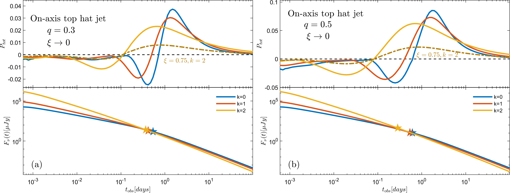
图注：Observed polarization degree (\textit{upper panels}) and flux (\textit{lower panels}) as a function of time for an on-axis top hat jet model observed at $\nu=10^{15}$ [Hz] (PLS G) with a random magnetic field structure, confined to the shock plane ($\xi\rightarrow 0$). $k$ denotes the power-law index of the external medium density profile. The light curve break is marked with a star in the lower panels. The dash-dotted dark yellow lines present the polarization curves for cases considering a more realistic magnetic field configuration behind the shock with $\xi=0.75$. At the earliest times only a relatively small number of angular cells contribute to the observed emission, leading a small but finite degree of polarization.
对应解读：“建议重点查看的图表”第1、2、6项，以及“关键图表逐图导读”中关于顶帽喷流偏振度与光变破折的图2式解读。
入选理由：这张图同时给出顶帽喷流的偏振度和光变曲线，并直接比较不同外介质分层指数 k；下方面板还标出光变破折时间，上方面板显示偏振峰值、峰宽和峰值时间如何随 k 改变，是支撑本文核心结论“分层介质降低偏振并拉长演化、偏振峰接近几何破折”的最关键图。还包含 xi=0.75 的磁场构型对比线，可回应日报中关于磁场各向异性与几何效应区分的提醒。
来源与置信度：\(arxiv_source\)；high；\(arxiv_source\) / aa56805-25.tex:figure[6]
Fig10
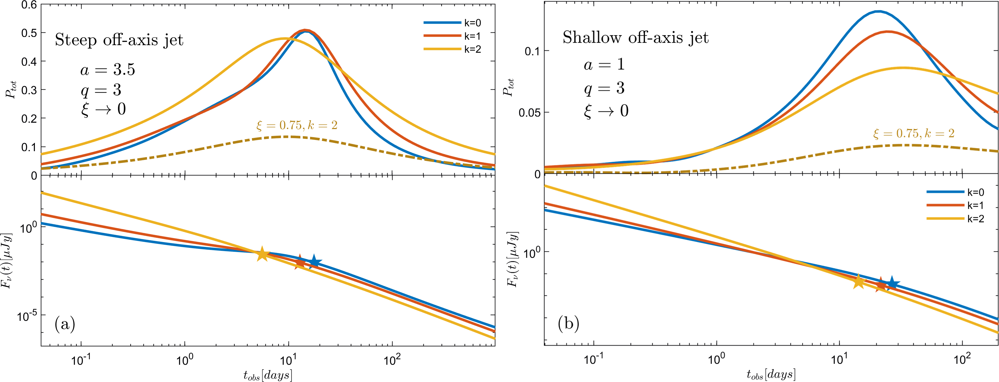
图注：Observed polarization degree (\textit{upper panels}) and flux (\textit{lower panels}) at observer frequency $\nu=10^{15} \text{ [Hz]}$ (PLS G) as function of time for structured jet models, with a random magnetic field structure, confined to the shock plane ($\xi\rightarrow 0$) and an off-axis viewing angle of $q=3$. The various values of k represent different power-law indices of the external medium density profile. The light curve break is marked with a star in the lower panels. \(\textit{Panel (a)}\) presents the observables from a shallow jet with $a=1$. \(\textit{Panel (b)}\) presents the same observables from a steep jet with $a=3.5$. The dash-dotted dark yellow lines present the polarization curves for cases considering a more realistic magnetic field configuration behind the shock with $\xi=0.75$.
对应解读：“建议重点查看的图表”第4、2、6项，以及“关键图表逐图导读”中结构喷流结果的图4式解读。
入选理由：这张图展示结构喷流在不同 k 下的偏振度和通量随时间演化，并区分浅结构 a=1 与陡结构 a=3.5。它能直接检验分层介质效应是否不仅存在于顶帽喷流的尖锐边界模型中，也存在于结构喷流中；同时保留光变破折标记和 xi=0.75 磁场对比，是与 Fig06 互补的核心结果图。
来源与置信度：\(arxiv_source\)；high；\(arxiv_source\) / aa56805-25.tex:figure[10]
Fig13
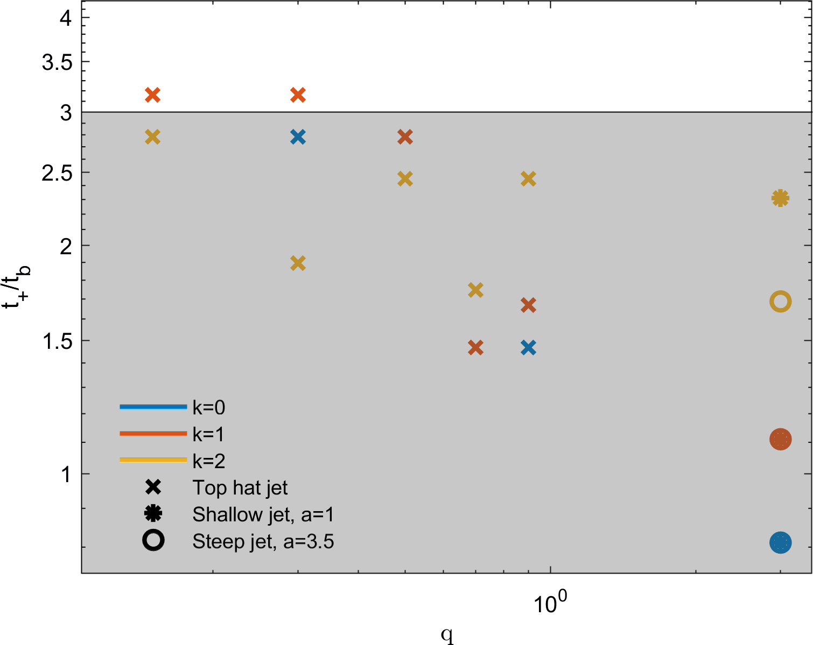
图注：Ratio between the main polarization peak times $t_{+}$ and light curve break times $t_b$ as function of the normalized viewing angle $q$ for all setups considered in this work. We can see that for most models, these two times are within factor 3 (marked by the gray shaded region) of one another or close to that.
对应解读：“建议重点查看的图表”第1、2、5项，以及“关键图表逐图导读”图6式关于峰值时间、光变破折和参数趋势的解读。
入选理由：这张图汇总所有模型中主偏振峰时间 t_+ 与光变破折时间 \(t_b\) 的比值随归一化视线角 q 的变化，直接支撑日报强调的“偏振峰通常靠近几何破折”这一观测策略结论。相比单个模型曲线，它更适合作为跨顶帽喷流、结构喷流、不同 k 和不同视线角的总体诊断图。
来源与置信度：\(arxiv_source\)；high；\(arxiv_source\) / aa56805-25.tex:figure[13]
Fig08
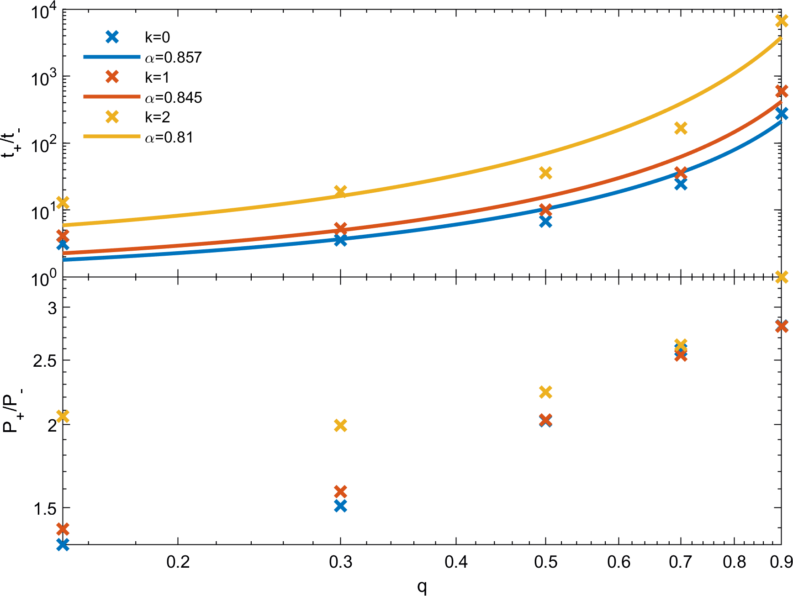
图注：\(\textit{Upper panel: }Time\) ratio of the positively and negatively signed polarization peak times (marked $t_{+}$ and $t_-$ respectively) of on-axis top hat jet models, plotted as function of the normalized viewing angle $q=\frac{\theta\obs}{\theta_c}$ , plotted in 'x' signs from the models considered in this work. The colors correspond to the power-law index of the external medium density profile. The solid lines, following the trends of the data points from the calculations made in section \(\ref{subsec:OnAxisJets},\) are fitted according to the model developed in Eq. \(\ref{eq:PolTimeRatio},\) with the corresponding value of $\alpha\left(k\right)$ given in the label for each value of $k$. \(\textit{Lower panel:}\) Ratio of the polarization peak heights for on-axis top hat jets as function of the normalized viewing angle $q$. The ratios of the wind-like model with $k=2$ are above the rest of the models for all values of $q$. The data points corresponding to $q=0.9$ with $k=2$ are plotted according to a slightly modified afterglow model in order to keep the first polarization peak in PLS G.
对应解读：“建议重点查看的图表”第5项，以及“关键图表逐图导读”图5、图6式关于视线角与 k 退化、偏振峰时间比和峰高比的解读。
入选理由：这张图把顶帽喷流中正负偏振峰时间比和峰高比作为 q 与 k 的函数展示，并给出拟合趋势线，最适合说明视线角变化和外介质分层都会改变偏振演化时间尺度与峰值结构。它对日报中“较大视线偏离角和较强分层可能产生相似时间拉伸”的退化关系尤其关键。
来源与置信度：\(arxiv_source\)；high；\(arxiv_source\) / aa56805-25.tex:figure[8]
Fig03
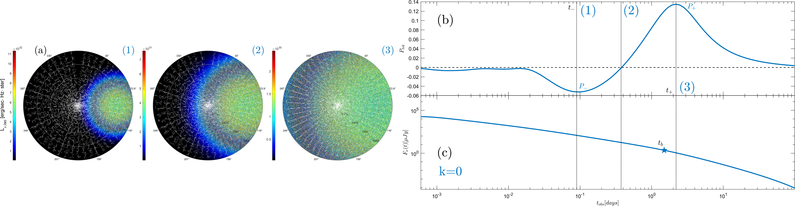
图注：Polarization signature of a top hat jet, observed at $q=0.7$ with $\nu\obs=10^{15} \text{ [Hz]}$ and a random magnetic field confined to the shock plane ($\xi\rightarrow 0$), for $k=0$. \(\textit{Panel (a)}\): Angular polarization maps of the emitting region (plotted using the spherical projection in Fig.~\(\ref{fig:ProjectionSetup},\) blue lines), where the radius of the map corresponds to the polar angle $\theta$ from the jet symmetry axis that is located at the map center and the edge of the map is at $\theta_c$. The color map represents the contribution to the observed luminosity at each cell ($L_{\nu,\text{iso}}=D^3(\tilde{\mu})L'_{\nu',\text{iso}}$; for additional details see \(\citealt{GG18}\) and B24), where it is ring-like around the line of sight (located to the right of the jet axis) and presents a mixture of magnitudes according to the local direction of the magnetic field. White lines represent the direction of the local polarization vector in the observer frame, and for $\xi\rightarrow 0$, it is mostly radially ordered across this bright ring. Frames (1)-(3) depict the system at times when the polarization reaches its negative peak, zero and positive peak respectively. \(\textit{Panel (b)}\): Time evolution of the observed polarization. This is computed by combining the local direction of the polarization vector in each angular cell with the contribution to the flux to produce flux weighted Stokes parameters, which are then integrated over the map to produce the observed polarization level. A change in sign stands for a $90^{\circ}$ rotation of the polarization vector. For additional details, see the Methods section in B24. \(\textit{Panel (c)}\): Light curve of the model presented above. The jet break is marked with a blue star and is close in time to the second polarization peak (frame (3)).
对应解读：“建议重点查看的图表”第3项，以及“关键图表逐图导读”中关于 Stokes 参量、Q 过零和 90° 偏振位置角翻转的图3式解读。
入选理由：这张图给出 k=0 顶帽喷流的角向偏振图、偏振随时间演化和对应光变，并明确说明偏振符号变化代表 90° 位置角旋转，且光变破折接近第二个偏振峰。它是理解局域偏振矢量如何在等到达时间面上抵消并产生 Q 符号翻转的最直观图。
来源与置信度：\(arxiv_source\)；high；\(arxiv_source\) / aa56805-25.tex:figure[3]
Fig01
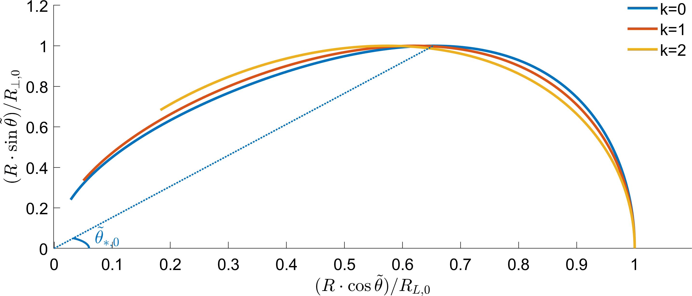
图注：The EATS - the combination of radii and angles that contribute to the observed emission at a given observer time $t\obs$. Colors indicate different power-law indices of the external medium density profile $k$. For $k>0$ we re-normalize the shape of the EATS according to the curve shown for $k=0$ in both axes in order to allow for easier comparison.
对应解读：“建议重点查看的图表”第1项，以及“详细解读”中关于等到达时间面、外介质分层改变几何权重和减速律的物理解释。
入选理由：这张图展示不同 k 下等到达时间面 EATS 的形状变化，是理解为什么分层介质会改变可见发射区域、几何抵消和偏振时间尺度的基础图。虽然它不是直接的观测量曲线，但能为后续 Fig06、Fig10 中偏振峰降低和变宽提供几何机制支撑。
来源与置信度：\(arxiv_source\)；high；\(arxiv_source\) / aa56805-25.tex:figure[1]
强相关工作
这篇工作属于伽马暴余辉偏振理论的延伸，和早期关于喷流几何破折、同步辐射偏振、顶帽喷流偏振曲线以及结构喷流余辉的研究直接相连。可检索关键词包括 “gamma-ray burst afterglow polarization jet break”、“synchrotron polarization relativistic blast wave”、“structured jet afterglow polarization”、“wind medium GRB afterglow”。经典问题是偏振位置角翻转、偏振峰与光变破折的对应关系，以及局域磁场是在冲击平面内随机、径向有序还是具有混合各向异性。
与观测工作的关系主要在长伽马暴光学偏振和少数射电偏振测量。许多长伽马暴余辉偏振只有稀疏采样，因此很难完整捕捉本文强调的时间尺度；少数事件显示百分之几量级偏振和位置角变化，可作为未来联合拟合对象。对于喷流型潮汐瓦解事件，应检索 “jetted TDE radio polarization”、“Swift J1644+57 afterglow”、“TDE stratified circumnuclear medium”。本文不是针对某个命名事件的观测论文，因此没有同一事件论文；更相关的是同类源、原型事件和理论综述。
也存在潜在张力或相反解释：低偏振可由外介质分层导致更强几何抵消，也可由磁场小尺度湍动、多个发射区叠加、尘埃偏振校正不充分或反向激波污染造成。光变破折附近没有看到偏振峰也未必推翻喷流模型，可能是采样错过、视线接近轴心、结构喷流过于平滑或系统误差较大。检索时可加入 “dust-induced polarization GRB afterglow”、“reverse shock polarization GRB”、“patchy shell polarization”。
同一事件 / 同类源线索：
相似工作：
- https://arxiv.org/abs/astro-ph/9905306
- https://arxiv.org/abs/astro-ph/9907123
- https://arxiv.org/abs/astro-ph/0208108
- https://arxiv.org/abs/1808.00469
基础理论 / 方法工作：
- https://arxiv.org/abs/astro-ph/9709273
- https://arxiv.org/abs/astro-ph/9901235
- https://arxiv.org/abs/astro-ph/9912007
- https://arxiv.org/abs/1805.09350
相反观点 / 张力线索：
6. The Origin of the Magnetic Flux Driving TDE Jets
- 来源：arXiv / astro-ph.HE
- 链接：https://arxiv.org/abs/2607.20615v1
- 作者：Nimrod Tripto, Julian Krolik, Tsvi Piran
- 评分：novelty 7/10，importance 8/10，relevance 8/10，final 8.70/10
- 推荐理由：astro-ph.HE 主题，讨论相对论性 TDE 喷流 Blandford-Znajek 所需磁通来源，结论倾向预先存在吸积盘磁通；对高能暂现源喷流物理有直接价值。
中文题目：驱动潮汐瓦解事件喷流的磁通量从哪里来？
做了什么：这篇文章讨论喷流型潮汐瓦解事件中最难绕开的能量学问题：若相对论喷流由 Blandford–Znajek 机制驱动，黑洞视界附近必须积累很大的有序磁通量；但一颗被撕裂的恒星、远处环境磁场，或既有吸积盘到底谁能提供这部分磁通？作者比较了三种来源：恒星自身磁场、碎片流从大尺度“套索式”拖入的磁通，以及事先存在于黑洞内区吸积盘中的磁通。结论是，普通观测到的恒星磁场远远不够；大尺度套索机制只有在径向磁场剖面很浅、且磁通能被有效困在黑洞附近时才可行；最自然的解释是黑洞在 TDE 前已有低亮度吸积盘，内区储存了足够磁通，TDE 只是把系统推入强吸积和喷流状态。
为什么重要：喷流型 TDE 的各向同性等效光度可达 \(10^{47}\)–\(10^{48}\,\mathrm{erg\,s^{-1}}\)，如果用 Blandford–Znajek 机制解释，就不只是“有没有足够质量落入黑洞”的问题，而是“有没有足够磁通穿过视界”的问题。磁通来源决定了哪些黑洞能产生喷流、喷流型 TDE 的发生率为何很低，以及 TDE 是否能作为探测沉寂活动星系核残余吸积盘的工具。
理论 / 观测 / 仪器方法价值：本文的价值在于把一个常被一句“需要磁通”带过的问题拆成可量级估算的约束：恒星磁通上限、远场拖拽条件、内盘磁通储量、喷流功率需求和磁通俘获效率。它为后续数值模拟和观测筛选提供了清晰判据：若喷流 TDE 偏好有弱 AGN 痕迹、核区气体盘或历史活动迹象，那么预存磁通模型会得到支持；若喷流出现在完全无盘环境，则需要重新评估套索机制或恒星磁场的极端尾部。
为什么应该关注：如果你关心 TDE、AGN 盘、黑洞喷流或磁滞留吸积，这篇文章值得读，因为它把喷流 TDE 从“瞬态吸积事件”推进到“黑洞环境记忆”的问题：同样一颗恒星被撕裂，是否出喷流可能取决于事件发生前黑洞附近已经储存了多少磁通。它也提醒观测者，寻找喷流 TDE 的前身环境、宿主核区弱活动和后期盘演化，可能和早期高能光变同样关键。
展开详细解读：文章讲解、背景、理论、重点章节、图表与相关工作
文章详细讲解
科学问题：喷流型 TDE 的中心问题不是单纯的落回率是否超过 Eddington，而是黑洞视界附近是否有足够大尺度、有序磁通。若喷流来自 Blandford–Znajek 机制，喷流功率随黑洞自旋和穿过视界的磁通量增加而增加。观测到的喷流型 TDE，如 Swift J1644+57 这一类事件，要求的各向同性等效功率达到 \(10^{47}\)–\(10^{48}\,\mathrm{erg\,s^{-1}}\)。即使考虑喷流准直，真实功率仍要求相当可观的视界磁通。因此本文要回答：这些磁通是被撕裂恒星带来的，还是碎片流从远处环境拖来的，抑或早已存储在黑洞附近？
作者怎么做：文章没有把问题交给单一大型数值模拟，而是用物理量级估算和机制比较来筛选可能性。第一类来源是恒星自身磁场：将恒星表面可观测磁场强度和恒星半径转化为最大可用磁通，再与 Blandford–Znajek 功率所需磁通比较。第二类来源是大尺度环境磁场，即所谓 Lasso 机制：恒星碎片在返回过程中像套索一样扫过并拖拽大半径磁场，把磁通带向黑洞。第三类来源是 TDE 前已有的吸积盘：哪怕盘本身低亮度，只要内区长期积累了磁通，TDE 的高落回率就可能把该磁通压到视界附近并点燃喷流。
关键结果：恒星磁场方案通常失败。普通主序星的表面磁场和总磁通比喷流所需低很多；即使考虑磁活跃恒星，也只有极端磁星级别或非常罕见的强磁场恒星才可能接近要求，而这与喷流 TDE 的宿主和发生率并不自然匹配。Lasso 机制不是完全不可能，但它对大尺度磁场的径向分布、碎片覆盖面积、磁通拖拽效率和内区磁通俘获条件非常敏感。若磁场随半径下降太快，碎片在远处扫到的磁通不够；即便扫到，也必须避免磁通通过磁浮力、重联或湍流扩散逃逸。相比之下，预存内盘磁通在能量学和时间尺度上最自然：TDE 不必“创造”磁通，只需改变吸积状态，让已有磁通进入黑洞视界附近。
局限和下一步：本文的结论依赖若干未完全由观测锁定的量，包括喷流真实准直角、黑洞自旋、磁通在碎片流和盘中的俘获效率、TDE 前盘的存在率，以及核区磁场剖面。它更像一篇物理判据论文，而不是对某一个事件的完整辐射建模。下一步需要三类检验：一是对喷流 TDE 宿主核区做深度射电、红外和窄线诊断，寻找历史低亮度 AGN 或残余盘证据；二是用广义相对论磁流体模拟研究 TDE 碎片与预存磁通盘相互作用；三是建立喷流 TDE 发生率和弱 AGN 占空比之间的统计联系。
关键结果是怎么做出来的
本文最重要的证据链从喷流功率需求开始。作者以喷流型 TDE 的观测光度范围为出发点，采用 Blandford–Znajek 机制把喷流功率反推为视界磁通需求。这里的样本不是一个新观测巡天样本，而是以已知喷流 TDE 的典型光度和理论功率标度为约束对象；核心比较量是不同磁通来源可提供的 \(\Phi\) 是否能达到 \(\Phi_{\rm req}\)。因此阅读本文时，应把它看作“可行性筛选”而非“事件统计发现”。
对恒星磁场的排除主要来自数量级不匹配。作者把恒星可携带磁通估为 \(\Phi_{\ast}\sim B_{\ast}R_{\ast}^{2}\)，再考虑被瓦解后并非全部磁通都能以正确拓扑、正确极性、足够相干的形式穿过黑洞视界。即使不计这些损失，普通恒星的 \(B_{\ast}\) 和 \(R_{\ast}\) 组合也难以达到喷流所需水平。若把恒星磁场调到极端高值，模型会变成依赖罕见强磁星或特殊恒星子类的解释，难以作为喷流 TDE 的一般机制。
对 Lasso 机制的判断更细。这个机制要求返回碎片在大尺度上扫过背景磁场并把磁通带入近黑洞区。作者关心的不只是总磁通，还包括径向磁场剖面，通常可写成 \(B_{r}\propto r^{-p}\)。若 \(p\) 太大，外区可扫磁通随半径并不会有效增长；若 \(p\) 较浅，远处磁通储量才可能足够。即便如此，磁通进入内区后还要被困住，否则重联和湍流扩散会让磁通逃逸，无法在视界处形成高 \(\Phi_{\rm BH}\)。所以本文并非简单否定 Lasso，而是指出它需要多个条件同时满足。
预存吸积盘方案的证据链则是“储量”和“触发”分离。TDE 前的盘可以在较长时间尺度上从宿主核区吸积或历史 AGN 活动中积累磁通；TDE 发生时，突然增加的落回率增强盘压力和径向输运，把内盘磁通推向视界。这个图像自然解释了为什么多数 TDE 没有强喷流：不是每个黑洞在事件前都有足够内盘磁通。它还给出可观测预言：喷流 TDE 可能更常出现在有弱核活动、核区气体、射电残余或历史吸积迹象的星系中。
显著性和置信度方面，本文不是基于事件计数计算 \(p\)-value 的统计论文，而是基于物理不等式的可行性论证。稳健性主要来自参数扫描式的数量级比较：改变喷流效率、黑洞质量、自旋、准直修正和磁场强度后，恒星磁场仍普遍不足；Lasso 对剖面和俘获效率高度敏感；预存盘磁通则在宽得多的参数范围内可行。读者应重点检查文中展示各机制可提供磁通与所需磁通的对比图或表，以及对 \(B\)、\(p\)、\(M_{\rm BH}\)、\(a_{\ast}\) 和效率因子的敏感性说明。
展开背景、理论、公式、模型、章节和图表导读
背景知识
潮汐瓦解事件发生在恒星轨道近星点进入黑洞潮汐半径以内时。恒星被拉伸、压缩并最终撕裂，一部分碎片被抛出，一部分保持束缚并在之后返回近黑洞区。传统 TDE 研究首先关注热光学、紫外和软 X 射线辐射，核心量是落回率、圆化效率、盘风和再处理层。但喷流型 TDE 把问题提升到高能相对论喷流层面，需要解释快速 X 射线变源、射电余辉和极高等效光度。
历史上，Swift J1644+57 等事件使人们意识到少数 TDE 能产生指向我们的相对论喷流。这类事件的亮度和变时性难以用普通热盘辐射解释，因而通常引入 Blandford–Znajek 机制：旋转黑洞通过穿过视界的磁通抽取自旋能，形成 Poynting 通量主导的喷流。这一解释的难点是，TDE 发生前黑洞常被认为是沉寂的；如果没有长期吸积盘，强有序磁通从哪里来并不显然。
为什么现在值得重新看？一方面，光学巡天已经发现大量非喷流 TDE，未来 Rubin Observatory 等还会扩大样本，喷流型和非喷流型的比例会成为强约束。另一方面，射电后随观测能揭示离轴喷流或亚相对论外流，帮助判断强喷流是否真的罕见。若喷流的出现受磁通供应控制，那么喷流 TDE 的发生率不仅反映几何指向，还反映核区磁化历史。
该领域常见误区之一是把超 Eddington 落回率等同于喷流必然出现。高落回率可以提供质量和压力，但 Blandford–Znajek 喷流还需要大尺度磁通和黑洞自旋。另一个误区是认为恒星被撕裂时会自动把自身磁场带到黑洞附近；实际上恒星磁通总量、拓扑相干性、极性抵消、重联损耗和圆化过程都会削弱可用磁通。第三个误区是忽略 TDE 前环境，把事件当作发生在真空中的孤立过程；本文强调，黑洞附近是否已有盘和磁通可能是决定喷流成败的关键初始条件。
基础理论 / 方法脉络
基本物理图像是：TDE 提供突然增加的质量供应，而喷流功率可能来自旋转黑洞的电磁能量抽取。若黑洞有无量纲自旋 \(a_{\ast}\)，视界附近被磁通 \(\Phi_{\rm BH}\) 穿过，旋转黑洞会像单极感应器一样产生电动势，驱动 Poynting 通量喷流。这里质量落入率 \(\dot M\) 决定盘的压力和束缚磁通的能力，但喷流功率对 \(\Phi_{\rm BH}\) 特别敏感。
本文使用的核心假设是喷流型 TDE 的高能输出可由 Blandford–Znajek 标度描述。这个标度并不要求知道所有微观等离子体细节，但要求视界尺度附近存在有序极向磁场。若磁通太小，即使落回率很高，喷流也只能弱得多；若磁通过大并达到磁滞留吸积状态，盘内磁压会显著影响流体运动，喷流效率可升高。
三种磁通来源对应三种输运问题。恒星磁场方案的关键量是恒星总磁通 \(\Phi_{\ast}\)，它由恒星表面磁场 \(B_{\ast}\) 和半径 \(R_{\ast}\) 决定。Lasso 机制的关键量是碎片轨道扫过的大尺度背景磁场 \(B_{r}(r)\) 及其径向剖面。预存盘方案的关键量是 TDE 前盘内已累积的磁通、盘的磁扩散和径向拖拽，以及 TDE 落回流能否把这些磁通压到视界。
观测上，喷流功率不是直接等于某一波段光度。X 射线和射电给出的是经过辐射效率、准直角和相对论多普勒增强修正后的量。各向同性等效光度 \(L_{\rm iso}\) 往往高于真实喷流功率 \(P_{\rm j}\)，二者之间依赖喷流开角和辐射效率。这个不确定性会传导到所需磁通 \(Φ_{\rm req}\)，但通常不足以挽救普通恒星磁场方案。
主要退化关系包括黑洞自旋与磁通退化、喷流准直与真实能量退化、落回率与磁滞留程度退化，以及磁场剖面与拖拽效率退化。例如较高 \(a_{\ast}\) 可降低所需 \(\Phi_{\rm BH}\)，较窄喷流可降低真实 \(P_{\rm j}\)，但若磁通来源本身差几个数量级，这些修正不能改变结论。
公式与推导
第一步从潮汐瓦解的尺度开始。恒星质量为 \(M_{\ast}\)、半径为 \(R_{\ast}\)，黑洞质量为 \(M_{\rm BH}\) 时，潮汐半径可估为
这里 \(r_{\rm t}\) 给出恒星开始被黑洞潮汐力撕裂的近似位置；本文关心的磁通问题发生在碎片从 \(r_{\rm t}\) 或更大尺度返回到视界的过程中。
第二步是落回供能的质量尺度。若最束缚碎片返回时间为 \(t_{\rm min}\)，经典落回率标度为
这里 \(\dot M_{\rm fb}\) 是返回近黑洞区的质量供应率。高 \(\dot M_{\rm fb}\) 可以提供强盘压力，但它本身不等于强喷流；喷流还需要足够 \(\Phi_{\rm BH}\)。
第三步写出 Blandford–Znajek 功率的常用标度：
其中 \(\kappa\) 是与磁场几何有关的无量纲系数，\(c\) 是光速，\(\Omega_{\rm H}\) 是黑洞视界角速度，\(f(\Omega_{\rm H})\) 是高自旋修正。这个式子说明 \(P_{\rm BZ}\) 对磁通近似二次依赖。
第四步给出视界角速度：
这里 \(a_{\ast}\) 是无量纲自旋，\(r_{\rm H}\) 是视界半径，\(r_{\rm g}\) 是引力半径。较大 \(a_{\ast}\) 可提高同一磁通下的喷流功率。
第五步把观测喷流功率反推为所需磁通。忽略高阶自旋修正时，可写成
其中 \(P_{\rm j}\) 是真实喷流功率，而不是简单的 \(L_{\rm iso}\)。这个式子是本文比较三种磁通来源的核心量级标尺。
第六步联系各向同性等效光度与真实喷流功率：
这里 \(\epsilon_{\rm rad}\) 是辐射效率，\(f_{\rm b}\) 是准直因子，\(\theta_{\rm j}\) 是喷流半开角。\(L_{\rm iso}\)、\(\epsilon_{\rm rad}\) 和 \(\theta_{\rm j}\) 的不确定性会改变 \(\Phi_{\rm req}\)，但只按平方根进入。
第七步估计恒星可提供的磁通：
这里 \(B_{\ast}\) 是恒星大尺度表面磁场。即使假设这部分磁通完全保持相干并输运到视界，普通恒星的 \(\Phi_{\ast}\) 通常仍低于 \(\Phi_{\rm req}\)；真实情况下还会有拓扑抵消和重联损耗。
第八步估计 Lasso 机制可从半径 \(r\) 内扫入的磁通。若背景径向场为
则半径 \(r_{\rm in}\) 到 \(r_{\rm out}\) 之间的可用磁通量级为
适用于 \(p\neq 2\)。这个式子展示了为何浅剖面 \(p<2\) 对 Lasso 有利；若 \(p\) 大，外区贡献迅速变小。
第九步用无量纲磁通描述磁滞留程度：
这里 \(\dot M\) 是进入黑洞附近的吸积率。磁滞留吸积状态通常对应较大的 \(\phi_{\rm BH}\)，意味着磁压足以影响吸积动力学。预存盘方案的优势在于它更容易在 TDE 触发前后让 \(\phi_{\rm BH}\) 达到喷流所需范围。
第十步可把喷流效率写为
这个比例关系说明，强喷流既要求高自旋，也要求高磁化。本文的物理结论正是：TDE 普遍能提供 \(\dot M\)，但只有少数系统能提供足够 \(\Phi_{\rm BH}\)，因此喷流型 TDE 稀少。
模型拟合 / 应用方法
本文不是传统意义上对光变曲线或光谱进行多参数拟合的观测论文，而是用可观测喷流功率范围反推理论参数空间。核心“拟合量”可以理解为：给定 \(L_{\rm iso}\)、\(f_{\rm b}\)、\(\epsilon_{\rm rad}\)、\(M_{\rm BH}\) 和 \(a_{\ast}\)，求出 \(\Phi_{\rm req}\)，再比较 \(\Phi_{\ast}\)、\(\Phi_{\rm Lasso}\) 和 \(\Phi_{\rm disk}\) 是否覆盖这个需求。读者应把它看成一种半解析模型选择，而不是对单个事件的后验采样。
参数估计的主要不确定性来自喷流真实功率。\(L_{\rm iso}\) 可由观测给出，但 \(P_{\rm j}\) 需要准直修正和辐射效率修正。若 \(\theta_{\rm j}\) 更小或 \(\epsilon_{\rm rad}\) 更高，所需磁通会下降；若喷流离轴或能量主要在动能中，所需磁通会上升。由于 \(\Phi_{\rm req}\propto P_{\rm j}^{1/2}\)，功率不确定性被平方根压缩，但仍可能影响边界情形。
退化关系最明显的是 \(a_{\ast}\) 与 \(\Phi_{\rm BH}\)。高自旋黑洞在同样磁通下能产生更强喷流，因此低自旋系统需要更多磁通。另一个退化是背景磁场强度 \(B_{0}\) 与径向指数 \(p\)：Lasso 机制可通过提高 \(B_{0}\) 或减小 \(p\) 增加可用磁通，但这必须与核区实际磁场和盘环境相容。预存盘模型中，盘的磁扩散率、湍流磁 Prandtl 数和内盘厚度会共同决定磁通是否能长期储存。
系统误差包括恒星磁场观测样本是否代表 TDE 被瓦解恒星、磁通拓扑是否可保持相干、碎片圆化过程中磁通是否重联损失、以及 TDE 前吸积盘的存在率。若被瓦解对象偏向强磁 Ap/Bp 星、白矮星或特殊演化恒星，恒星磁通上限会改变；但这类对象的 TDE 率和已知喷流 TDE 宿主并不一定匹配。
实际应用上，这套模型可用于给每个喷流 TDE 做“磁通预算”。先由多波段建模估计 \(P_{\rm j}\)，再由宿主星系和黑洞质量估计 \(M_{\rm BH}\)，最后考察是否存在 TDE 前盘活动证据。如果未来样本显示喷流 TDE 明显偏好弱 AGN 或核区气体丰富宿主，预存磁通模型会更有说服力；如果喷流 TDE 在真正沉寂、无盘环境中频繁出现，则需要重新审视 Lasso 或极端恒星磁场路径。
重点章节 / 结果段落怎么读
第一，导论和问题设定部分应重点读作者如何把喷流 TDE 的高光度转化为磁通来源问题。这里通常会回顾 Blandford–Znajek 机制、喷流型 TDE 的光度范围，以及为什么单靠超 Eddington 落回率不能解释强喷流。
第二，恒星磁场部分应检查作者对 \(B_{\ast}\)、\(R_{\ast}\) 和磁通保持效率的假设。关键不是某个精确数值，而是普通恒星磁通与 \(\Phi_{\rm req}\) 的数量级差距，以及极端强磁恒星是否具有合理发生率。
第三，Lasso 机制部分是全文技术含量较高的段落。读者应关注背景磁场剖面 \(B_{r}(r)\)、可扫面积、碎片动力学和磁通俘获条件。尤其要看作者为什么强调浅径向剖面和近黑洞磁通陷获机制。
第四，预存吸积盘部分是作者偏好的解释。应看清楚这里的逻辑：TDE 不负责产生磁通，而是负责提高吸积率并把已有磁通推入视界附近。这个机制对 TDE 前黑洞并非完全真空的假设很关键。
第五，讨论和结论部分应当从可观测预言角度阅读。本文隐含的预测包括喷流 TDE 与弱 AGN 活动、核区气体盘、射电残余、宿主中心环境之间可能存在关联，也包括非喷流 TDE 可能只是缺少磁通而非缺少质量供应。
建议重点查看的图表
-
喷流功率需求与所需视界磁通的对比图：应看 \(P_{\rm j}\) 或 \(L_{\rm iso}\) 如何映射到 \(\Phi_{\rm req}\)，以及不同 \(a_{\ast}\) 曲线之间的间隔。
-
恒星磁通预算图或表：应看普通主序星、强磁星、极端磁场恒星的 \(\Phi_{\ast}\) 是否能覆盖 \(\Phi_{\rm req}\)，以及作者是否计入磁通相干性损失。
-
Lasso 机制的径向磁场剖面图：应重点看 \(B_{r}\propto r^{-p}\) 中不同 \(p\) 对累计磁通的影响，尤其是浅剖面和陡剖面的分界。
-
磁通俘获或逃逸条件诊断：如果文中有时间尺度或效率比较，应看拖拽时间、扩散时间、重联时间和落回时间哪个占优。
-
预存盘磁通参数空间图：应看哪些盘磁场、盘半径、吸积率或磁滞留参数能满足喷流需求。
-
机制比较总结表：应检查三种来源在所需条件、自然性、主要瓶颈和观测预言上的差异，而不只看作者最终偏好。
关键图表逐图导读
图 1：若论文给出喷流功率与所需磁通的关系图，横轴通常可理解为黑洞质量、自旋或喷流功率，纵轴为 \(\Phi_{\rm req}\) 或等价磁场强度。数据点或阴影带代表喷流型 TDE 的观测功率范围，模型线代表不同 \(a_{\ast}\)、\(f_{\rm b}\) 或 \(\epsilon_{\rm rad}\)。读图陷阱是不要把 \(L_{\rm iso}\) 直接当成真实功率；准直修正会平移所需磁通。
图 2：恒星磁场预算图应关注 \(B_{\ast}\) 与 \(R_{\ast}\) 给出的 \(\Phi_{\ast}\)。若图中有不同恒星类型区域，普通太阳型恒星通常远低于喷流需求，强磁恒星可能接近但发生率和拓扑仍成问题。读图陷阱是图上显示的往往是理想总磁通，实际能进入视界的相干极向磁通会更少。
图 3：Lasso 机制图可能展示累计磁通随外半径 \(r_{\rm out}\) 或磁场剖面指数 \(p\) 的变化。横轴若是半径，纵轴若是 \(\Phi_{\rm Lasso}\)，浅剖面曲线会随半径增长更快。关键结论是该机制对 \(p\) 非常敏感。读图陷阱是累计磁通足够不等于视界磁通足够，中间还要经过拖拽、圆化和俘获。
图 4：预存盘模型图应看盘内磁通储量与 TDE 触发后可压入视界的磁通之间的关系。若图中有磁滞留吸积参数 \(\phi_{\rm BH}\)，应检查其是否达到强喷流所需范围。读图陷阱是预存盘不一定明亮；低亮度盘仍可能存储磁通，因此缺少强 AGN 光度不等于没有盘。
图 5：机制总结或参数空间图应把三种来源放在同一坐标中比较。最有用的读法是找各机制的失败边界：恒星磁场差多少数量级，Lasso 需要多浅的 \(p\)，预存盘需要多强的历史磁化。不要只看“可行/不可行”的标签，而要看结论对效率因子的敏感性。
论文原图 / 可嵌入图片
Fig02
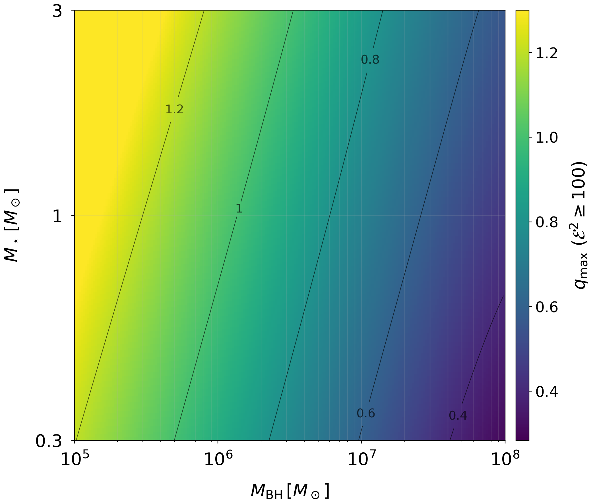
图注：Maximum power-law index $q$ for which the Lasso mechanism produces a transient jet at least two orders of magnitude brighter than the pre-existing steady jet, $\enh^2\geq100$, as a function of black-hole and stellar mass. The values are computed from Eq.~\(\eqref{eq:Lasso-luminosity-ratio},\) using $\rh=1,\sigma_0=5\Rs$ and the stellar mass-radius relation $\Rs \simeq \Rsun(\Ms/\Msun)^{0.88}$ \(\citep{Ryu+2020b}.\)
对应解读：对应“建议重点查看的图表”第3项 Lasso 机制的径向磁场剖面图，以及“关键图表逐图导读”图3中关于不同径向指数对可用磁通和喷流增强的影响。
入选理由：这是候选图中最直接支撑日报核心解读的图：它把 Lasso 机制能否产生比预存稳态喷流亮两个数量级以上的瞬态喷流，转化为磁场径向幂律指数 q 在黑洞质量和恒星质量参数空间中的上限。日报强调 Lasso 机制对径向剖面指数非常敏感，这张图正好显示只有在 q 足够小、即磁场剖面足够浅时，该机制才可能满足喷流亮度需求，因此比其他候选图更适合嵌入。
来源与置信度：\(arxiv_source\)；high；\(arxiv_source\) / Jet-TDE.tex:figure[2]
Fig01
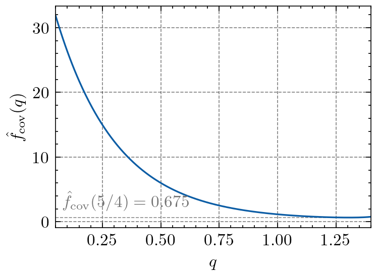
图注：$\hat{f}_{\rm cov}$, given in Eq.~\(\eqref{eq:fhat-closed-form},\) for the range $q\in[0.1,1.4]$. The fiducial value is $\hat{f}_{\rm cov}(5/4)\simeq 0.675$.
对应解读：对应“建议重点查看的图表”第3项和第4项中 Lasso 机制的磁通扫掠、覆盖效率与俘获条件讨论，也可辅助理解模型拟合段落中几何效率因子的作用。
入选理由：该图展示覆盖因子 \(\hat{f}_{\rm cov}\) 随幂律指数 q 的变化，是 Lasso 磁通预算中的一个关键几何修正量。虽然它不直接给出所需视界磁通或三种机制总比较，但能帮助读者理解碎片流扫掠大尺度磁场时有效覆盖面积如何随磁场剖面改变，从而辅助解释为什么 Lasso 机制对 q 和效率因子敏感。
来源与置信度：\(arxiv_source\)；high；\(arxiv_source\) / Jet-TDE.tex:figure[1]
强相关工作
同一类别的观测背景主要来自喷流型 TDE，尤其 Swift J1644+57 及后续射电、X 射线建模工作。这些研究建立了喷流 TDE 的高光度、相对论外流和长时标能量注入图像。检索关键词可用 “Swift J1644+57 relativistic tidal disruption event jet”, “jetted TDE radio afterglow”, “Swift J2058+05 tidal disruption jet”。这些是本文磁通预算的观测动机。
理论上，本文直接连接 Blandford–Znajek 机制、磁滞留吸积盘和 TDE 落回理论。相关检索关键词包括 “Blandford Znajek mechanism magnetic flux”, “magnetically arrested disk TDE”, “TDE debris magnetic flux lasso mechanism”, “pre-existing accretion disk tidal disruption event”。与本文可能存在张力的方向包括：喷流是否也能由盘风碰撞或辐射驱动外流解释、非喷流 TDE 是否真的缺少喷流而非离轴、以及宿主核区是否普遍存在弱盘。
同一事件 / 同类源线索：
相似工作：
基础理论 / 方法工作：
- https://ui.adsabs.harvard.edu/abs/1977MNRAS.179..433B/abstract
- https://arxiv.org/abs/1108.0412
- https://ui.adsabs.harvard.edu/abs/1988Natur.333..523R/abstract
相反观点 / 张力线索：
（未提供）
7. Black hole-neutron star binaries with high spins and large mass asymmetries: III. Properties of the ejected material and its electromagnetic signatures
- 来源：arXiv / astro-ph.HE
- 链接：https://arxiv.org/abs/2607.20609v1
- 作者：Konrad Topolski, Samuel D. Tootle, Paramvir Singh, Mattia Bulla, Luciano Rezzolla
- 评分：novelty 7/10，importance 8/10，relevance 8/10，final 8.70/10
- 推荐理由：BH-NS 并合 GRMHD 模拟、动力学抛射物、r 过程丰度和 kilonova 光变，直接服务引力波电磁对应体和多信使天体物理。
中文题目：高自旋、大质量不对称黑洞—中子星并合：动力学抛射物性质及其电磁对应体
做了什么：这篇论文用广义相对论磁流体模拟研究黑洞—中子星并合中“纯动力学抛射物”的几何、热力学、运动学和核合成结果，重点覆盖大质量比和高黑洞自旋的参数空间。作者把模拟输出接入核反应网络 SkyNet 计算 \(r\)-过程丰度，再用辐射转移代码 POSSIS 生成千新星光变曲线，并与 AT2017gfo 以及 S190814bv 的观测限制比较。核心结论是：在高自旋、强质量不对称的黑洞—中子星系统中，潮汐瓦解仍可产生足够有特色的富中子动力学抛射物，其千新星在总光度和光学/近红外演化上与已有事件或上限并不冲突。
为什么重要：黑洞—中子星并合是否能产生可观测电磁对应体，主要取决于中子星是否在黑洞视界外被潮汐撕裂。这个条件对黑洞自旋、质量比、中子星半径和轨道构型极其敏感。本文把参数空间推向“大质量不对称但高自旋”的区域，正好对应引力波探测中可能出现、但电磁预期并不直观的一类源，因此对多信使跟踪策略和事件解释都很关键。
理论 / 观测 / 仪器方法价值：理论上，它把数值相对论、磁流体、核反应网络和多维辐射转移串成一条从并合动力学到千新星观测量的链条。观测上，它给出黑洞—中子星千新星在不同参数下的光变和颜色预期，可用于解释非探测上限或设计近红外随访。方法上，它强调不能只用抛射质量一个数判断电磁亮度，还要看抛射物的速度、角分布、电子丰度、熵和核加热历史。
为什么应该关注：如果你关心未来 LIGO/Virgo/KAGRA、Einstein Telescope 或 Cosmic Explorer 时代的黑洞—中子星多信使天文学，这篇文章提供了一个实用问题的答案：哪些高质量比、高自旋系统仍可能亮，亮在哪里，持续多久，以及它们和 AT2017gfo 这类中子星并合千新星有什么不同。它也提醒读者，S190814bv 这类“有引力波候选、但无明确电磁对应体”的事件不能简单排除黑洞—中子星解释，必须结合方向性、距离、抛射物成分和观测深度。
展开详细解读：文章讲解、背景、理论、重点章节、图表与相关工作
文章详细讲解
科学问题：黑洞—中子星并合是否产生千新星，关键不是“有没有中子星”，而是中子星是否在黑洞吞没前被潮汐瓦解，并且有多少物质获得正能量逃逸。低质量比、较大中子星半径和顺轨高黑洞自旋通常有利于视界外瓦解；但实际探测到的候选系统可能质量比很大，直觉上更容易被黑洞直接吞没。本文聚焦的正是这种张力区域：大质量不对称会压低抛射量，高自旋又能把最内稳定圆轨道向内移动、给潮汐瓦解留下空间。
作者怎么做：论文是该系列的第三篇，基于一组广义相对论磁流体模拟，覆盖高黑洞自旋和大质量比的黑洞—中子星双星参数空间。作者追踪并合过程中物质获得能量和角动量的过程，识别纯动力学抛射物，并统计其质量、速度、角分布、电子丰度、熵和温度等量。随后，他们把流体轨迹或代表性抛射物分布输入 SkyNet，计算 \(r\)-过程核合成和放射性加热；再把抛射物几何结构、成分和速度场输入 POSSIS，求解多维辐射转移，得到总辐射光度和不同波段的光变曲线。
关键结果：论文显示，在高自旋黑洞—中子星系统中，即使质量不对称较大，潮汐尾仍可产生以赤道面为主、富中子、速度较高的动力学抛射物。这类抛射物通常有强方向性，低电子丰度区域有利于重 \(r\)-过程元素和镧系元素生成，因此不透明度较高，近红外辐射更重要。作者得到的千新星光变与 AT2017gfo 的观测数据以及 S190814bv 的上限总体一致；这里的“总体一致”不应理解为同一物理起源已被证明，而是说该类模型没有被这些已有观测直接排除。
局限和下一步：本文重点是纯动力学抛射物，而实际千新星还可能包含盘风、黏滞风、磁驱动风和中微子照射改性的成分。这些较慢、可能更高电子丰度的后期风会显著改变蓝光分量和总光变持续时间。另一个局限是核物理输入、不透明度表、视角、磁场初态和数值分辨率都会影响预测。下一步应把并合后吸积盘长期演化和中微子输运更自洽地接入，并与真实引力波后验样本联合，给出从引力波参数到电磁可探测性的概率预测。
关键结果是怎么做出来的
本文最重要的证据链从数值相对论模拟样本开始。作者选择黑洞—中子星双星，系统性改变黑洞自旋、质量比以及与中子星结构相关的参数，目标不是重现单一事件，而是覆盖大质量不对称和高自旋这一过去研究较薄的区域。抛射物的判定依赖模拟中流体元是否达到无束缚条件，并进一步提取其速度、角分布、热状态和组分信息；这些量决定后续核合成和辐射转移，而不只是作为一个总抛射质量进入模型。
事件数在这里不是观测事件数，而是模拟模型数和从每个模型中抽取的抛射物轨迹或空间网格采样。读者应特别关注论文表格中每个二元参数组合对应的抛射质量、平均速度、平均电子丰度和角分布指标。若某个模型产生的抛射物质量显著下降，通常意味着潮汐瓦解更晚或更接近黑洞，物质来不及获得足够角动量逃逸；若速度和赤道集中度变化，则会直接改变光变峰值时间和视角依赖。
统计显著性在这类论文中通常不像巡天发现论文那样以 \(p\)-值或 \(\sigma\) 给出，而是通过参数扫描、分辨率对比、物理一致性和与观测限制的包络比较来建立可信度。本文的模型比较主要体现在不同黑洞自旋和质量比如何改变抛射物性质，以及 POSSIS 合成光变是否落在 AT2017gfo 数据点或 S190814bv 上限允许的范围内。读者不应把“与 AT2017gfo 一致”读成最佳拟合优于双中子星模型，而应理解为黑洞—中子星动力学抛射物能够覆盖部分相似的亮度—颜色—时间尺度区域。
支撑结论的关键图表应包括：抛射物质量和速度随二元参数变化的表格或散点图；抛射物在极角和速度空间中的二维分布；SkyNet 给出的元素丰度曲线；POSSIS 给出的总光度和多波段光变；以及与 AT2017gfo、S190814bv 的直接叠加图。若这些图中模型带宽很大，说明观测解释具有高度退化性；若某些波段上限位于模型簇下方，则可排除对应参数组合或视角。
主要系统误差来自四个层面。第一是数值相对论模拟的分辨率、外推半径和无束缚判据；第二是中微子处理和磁场放大对电子丰度的影响；第三是 \(r\)-过程核反应率、裂变产物分布和放射性加热率；第四是辐射转移中镧系元素不透明度、局部热化效率和轴对称几何假设。稳健性检验应看参数趋势是否稳定，而不是某一条光变曲线是否精确穿过所有观测点。
展开背景、理论、公式、模型、章节和图表导读
背景知识
黑洞—中子星并合是引力波天文学中最有信息量、也最难解释的一类紧致双星。与双黑洞不同，它可能产生电磁辐射；与双中子星不同，它是否产生抛射物取决于黑洞是否在吞噬前把中子星撕开。因此同样的引力波质量参数，可以对应“暗并合”或“亮并合”两种完全不同的多信使结果。
历史上，黑洞—中子星电磁对应体的核心判断来自潮汐半径和黑洞最内稳定圆轨道的竞争。如果潮汐瓦解半径大于有效吞没半径，中子星物质可形成潮汐尾、抛射物和吸积盘；反之则几乎直接落入黑洞。早期半解析模型已经给出这一图像，但真实并合涉及强场相对论、非线性流体、磁场、中微子、核反应和三维辐射转移，必须依赖数值模拟校准。
观测背景方面，GW170817/AT2017gfo 建立了双中子星并合产生千新星和 \(r\)-过程元素的范式。随后若干黑洞—中子星候选事件没有明确电磁对应体，例如 S190814bv 曾引发关于其是否含中子星、是否应产生千新星的讨论。非探测并不自动等于无抛射物，因为距离、定位面积、观测时延、视角、尘埃消光和波段选择都会影响能否看到对应体。
为什么现在值得重新看：第三代引力波探测器和当前探测网络会发现更多高质量比系统，高自旋黑洞也可能出现在孤立双星演化或动力学形成通道中。过去很多模拟集中在较温和质量比或低自旋区域，而高质量比加高自旋的组合正是判断“是否仍有亮千新星”的关键边界。
该领域常见误区包括：把所有千新星都近似为球对称单区模型；只用抛射质量判断亮度；把 AT2017gfo 当作所有并合电磁对应体的模板；以及把没有光学发现直接解释为没有并合抛射物。黑洞—中子星系统尤其需要近红外、视角和成分分层的联合判断。
基础理论 / 方法脉络
基本物理图像是，中子星在黑洞潮汐场中被拉伸。如果潮汐力在中子星进入黑洞有效捕获区之前超过自身引力，中子星会形成潮汐尾，一部分物质获得足够轨道能量和角动量成为无束缚抛射物，另一部分形成黑洞周围吸积盘。黑洞自旋若与轨道角动量同向，会降低最内稳定圆轨道半径，使瓦解更容易发生在视界外。
抛射物的电磁辐射不是并合时的热光球直接冷却，而是由 \(r\)-过程放射性衰变持续加热。富中子物质快速俘获中子，形成重元素；若电子丰度较低，镧系元素和锕系元素丰度较高，原子线极多，不透明度大，辐射扩散慢，光变更红、更晚。若中微子照射或冲击加热提高电子丰度，则可产生较低不透明度的蓝色分量。
本文的关键量包括动力学抛射质量、速度分布、极角分布、电子丰度、熵和膨胀时间尺度。这些量连接三个层次：数值相对论模拟给出流体动力学；SkyNet 把热力学轨迹转为元素丰度和加热率；POSSIS 把三维或轴对称的质量—速度—成分结构转为观测光变和谱能量分布。
观测方法上，千新星模型通常与多波段测光点或上限比较。峰值时间主要由扩散时间控制，峰值亮度由放射性加热率、热化效率和抛射质量决定，颜色由温度和不透明度决定。由于抛射质量、不透明度、速度和视角彼此退化，仅凭单一波段或单一时刻很难反推唯一物理参数。
常见系统误差包括：无束缚判据在动态时空中并非唯一；模拟终止时仍可能有物质将来被加速或回落；核反应网络依赖未知核质量和裂变产物；辐射转移依赖复杂原子数据和局域热平衡近似。本文的价值在于把这些环节尽量连续地串起来，而不是只用经验公式估算千新星。
公式与推导
第一步是比较潮汐瓦解和黑洞捕获尺度。牛顿近似下，潮汐半径可写为
其中 \(R_{\rm NS}\) 是中子星半径，\(M_{\rm BH}\) 和 \(M_{\rm NS}\) 分别是黑洞和中子星质量，\(q=M_{\rm BH}/M_{\rm NS}\) 是质量比。这个式子只给出尺度判断：\(q\) 越大，潮汐半径相对中子星半径增大，但相对黑洞引力半径未必有利。
第二步是用黑洞最内稳定圆轨道描述吞没边界。Kerr 黑洞顺行轨道的 \(r_{\rm ISCO}\) 可写为
其中
这里 \(\chi_{\rm BH}\) 是无量纲黑洞自旋。顺行高自旋使 \(r_{\rm ISCO}\) 变小，因此即使 \(q\) 较大，也可能满足视界外瓦解的条件。
第三步是把瓦解条件写成一个紧致度判断。中子星紧致度为
粗略地，若 \(r_{\rm t}\gtrsim r_{\rm ISCO}\)，则更可能形成盘和抛射物。更精确的数值相对论结果会把 \(C_{\rm NS}\)、\(q\)、\(\chi_{\rm BH}\) 和轨道动力学共同纳入，而本文正是在这一区域用模拟校准抛射物性质。
第四步是定义动力学抛射物的无束缚条件。在近似平稳时空中常用 geodesic 判据
其中 \(u_t\) 是流体四速度的协变时间分量；也可使用包含热焓的 Bernoulli 判据
其中 \(h=1+\epsilon+p/\\)
ho) 是比焓，\(\epsilon\) 是比内能，\(p\) 是压强，\(\rho\) 是 rest-mass 密度。前者更保守，后者允许热能未来转化为动能。
第五步是从流体通量得到抛射质量。穿过大半径球面的无束缚质量可写为
其中 \(W\) 是洛伦兹因子，\(\gamma\) 是空间度规行列式，\(u^r\) 是径向四速度分量，\(g\) 是时空度规行列式。这个量是千新星能量预算的第一输入。
第六步是估计扩散控制的峰值时间。对平均速度 \(v_{\rm ej}\)、灰不透明度 \(\kappa\) 的单区模型，有
这说明同样的 \(M_{\rm ej}\) 下，镧系元素丰富导致的较大 \(\kappa\) 会推迟峰值，并把辐射移向近红外。
第七步是用放射性加热估计峰值光度。常用近似为
其中 \(\epsilon_{\rm th}\) 是热化效率，\(\dot{q}_{\rm r}\) 是单位质量放射性加热率，\(q_0\) 和 \(\alpha\) 由核反应网络决定。SkyNet 的作用就是比这个幂律近似更细致地计算丰度和加热。
第八步是把模型光度转成观测通量并比较数据。给定光度距离 \(D_L\)，频率通量满足
其中 \(z\) 是红移，\(\theta_{\rm obs}\) 是视角。POSSIS 计算的正是具有视角依赖的 \(L_{\}\)
u'})，因此它能检验同一抛射物在不同观测方向是否会被看见。
第九步是观测比较中的似然。若有测光点 \(F_i\)、误差 \(\sigma_i\) 和模型 \(F_{{\rm mod},i}\)，可用
其中 \(\boldsymbol{\theta}\) 包括 \(M_{\rm ej}\)、\(v_{\rm ej}\)、\(\kappa\)、丰度结构和视角。对上限数据，更合适的是单边似然或排除条件 \(F_{{\rm mod},i} 这类工作的“拟合”分为两层。第一层不是直接拟合观测，而是从数值相对论模拟中提取物理参数：抛射质量、质量加权速度、电子丰度分布、熵分布和角分布。这些量受二元参数控制，例如 \(q\)、\(\chi_{\rm BH}\)、中子星紧致度和轨道角动量方向。论文通过参数扫描寻找趋势，而不是只给一个最佳模型。 第二层是辐射转移模型与观测数据或上限的比较。POSSIS 会根据抛射物结构、速度场和成分计算不同视角下的多波段光变。若与 AT2017gfo 比较，关键残差是早期蓝光、近红外峰值时间和晚期衰减率；若与 S190814bv 上限比较，关键是模型是否在观测时刻和波段超过探测上限。上限不能提供唯一最佳参数，但能排除过亮、过蓝或过慢衰减的模型组合。 参数退化非常强。增大 \(M_{\rm ej}\) 会提高总能量并延长扩散时间；增大 \(\kappa\) 也会延长扩散时间并使颜色变红；增大 \(v_{\rm ej}\) 会缩短扩散时间但增加光球半径；改变视角会让同一模型在光学和近红外表现不同。因此，单波段非探测很难区分“抛射物少”和“抛射物红且视角不利”。 系统误差方面，数值模拟给出的电子丰度对中微子输运和磁场演化敏感，而电子丰度又控制镧系元素生成和不透明度。核反应网络的未知核数据会影响加热率和丰度峰。辐射转移中的原子不透明度在重元素区域仍不完备。实际应用时，最好把这类模型当作物理先验或模板族，而不是精确测量单个参数的工具。 模型可能失败的地方也很明确：如果并合后盘风贡献很大，而本文只采用纯动力学抛射物，那么蓝色或中等电子丰度分量会被低估；如果磁驱动喷流或 cocoon 产生额外早期辐射，单纯千新星模型会解释不了早期过量；如果观测对象真实为双中子星并合，黑洞—中子星模型即便能拟合光变，也未必给出正确的源分类。 数据/模拟参数部分应先读。这里会列出黑洞质量、自旋、质量比、中子星模型和数值设置。读者要确认这些模型为何代表“大质量不对称、高自旋”区域，以及它们与已探测黑洞—中子星候选事件的参数后验有多大重叠。 动力学抛射物提取部分是论文的物理核心。重点看作者采用哪种无束缚判据、在哪个半径或时间统计抛射物、如何定义质量加权平均速度和角分布。不同判据会给出不同抛射质量，尤其是在热能尚未完全转化的外流中。 核合成部分要关注 SkyNet 的输入轨迹和初始条件。读者应看电子丰度、熵和膨胀时间尺度如何映射到最终丰度，是否产生稳健的第二、第三 \(r\)-过程峰，以及不同二元参数是否显著改变镧系元素质量分数。 辐射转移和光变部分应与前面抛射物结构对照阅读。POSSIS 光变的形状不能只看峰值亮度，还要看颜色演化、视角依赖和近红外峰值时间。与 AT2017gfo 和 S190814bv 的比较部分尤其要区分“拟合”“一致”和“未排除”三种不同强度的说法。 讨论和稳健性部分应检查作者如何处理缺失物理，例如盘风、中微子照射、磁场长期演化和核不透明度不确定性。若附录给出分辨率测试、外推半径测试或替代无束缚判据，应优先阅读，因为这些会决定抛射量和光变预测的可信区间。 二元参数空间图或模型表：看 \(q\)、\(\chi_{\rm BH}\)、中子星紧致度和模拟标签如何分布，确认论文结论适用于哪些系统而不是所有黑洞—中子星并合。 抛射质量、平均速度、电子丰度随参数变化的图表：看高自旋是否系统性提高抛射量，大质量比是否系统性压低抛射量，以及二者是否存在非线性边界。 抛射物二维几何分布图：看质量集中在赤道还是有极向扩展，速度和电子丰度是否有角向分层，这直接决定视角依赖和蓝/红分量。 SkyNet 丰度曲线：看是否出现稳健的 \(r\)-过程峰，镧系元素丰度是否随模型变化，以及与太阳 \(r\)-过程丰度的比较是否只是形状相似而非归一化证明。 放射性加热率或热化效率诊断：看不同模型在 \(0.1\) 到 \(10\) 天的加热差异，这一时间窗最影响千新星可探测性。 POSSIS 总光度和多波段光变：看峰值时间、峰值亮度、颜色演化和视角带宽，尤其检查近红外是否比光学更稳健。 与 AT2017gfo 和 S190814bv 的叠加图：看数据点、误差棒和上限相对于模型族的位置；不要只看某条模型线是否接近，而要看哪些参数组合被上限排除。 图 1：通常应是参数空间或模拟初态示意。横轴可能是质量比 \(q\) 或黑洞质量，纵轴可能是黑洞自旋 \(\chi_{\rm BH}\) 或中子星紧致度 \(C_{\rm NS}\)。读图时要看模型点是否覆盖潮汐瓦解边界，而不是平均铺满整个空间。陷阱是把局部参数扫描外推到低自旋或低质量比系统。 图 2：抛射物质量和速度随二元参数变化的图最关键。数据点代表不同数值相对论模型，可能用颜色表示自旋或紧致度。主要结论应是高自旋有利于在视界外保留物质，但大质量比会抵消这一效应。读图陷阱是忽略纵轴可能跨多个数量级，小的绝对差异在千新星亮度上可能非常显著。 图 3：抛射物角分布或速度—极角分布图。横轴可能是极角或速度，纵轴是质量分布 \(dM/d\Omega\) 或 \(dM/dv\)，颜色表示电子丰度。若质量集中在赤道面且 \(Y_e\) 低，说明红色近红外分量占优；若极向有较高 \(Y_e\) 物质，可能产生较蓝的视角依赖信号。陷阱是二维投影会掩盖三维非轴对称潮汐尾。 图 4：核合成丰度图。横轴是质量数 \(A\)，纵轴是归一化丰度，模型曲线与太阳 \(r\)-过程残差比较。应关注第二峰、第三峰和镧系元素区间，而不是只看总曲线是否平滑。陷阱是丰度曲线常被任意归一化，不能直接说明宇宙总产额，必须结合事件率和抛射质量。 图 5：总光度或加热率演化图。横轴是并合后时间，纵轴是 \(L_{\rm bol}\) 或单位质量加热率，模型线对应不同参数和视角。应检查峰值时间是否随 \(M_{\rm ej}\)、\(v_{\rm ej}\)、\(\kappa\) 的预期标度变化。陷阱是总光度相近的模型可能颜色完全不同。 图 6：多波段光变与 AT2017gfo/S190814bv 对比。横轴是并合后天数，纵轴是绝对星等、视星等或通量；点和误差棒代表 AT2017gfo，倒三角代表 S190814bv 上限，线或带代表模型。主要读法是看模型是否同时满足早期光学、近红外峰和上限约束。陷阱是距离、消光和滤光片转换若处理不同，会造成表面上的好坏差异。模型拟合 / 应用方法
重点章节 / 结果段落怎么读
建议重点查看的图表
关键图表逐图导读
论文原图 / 可嵌入图片
Fig02
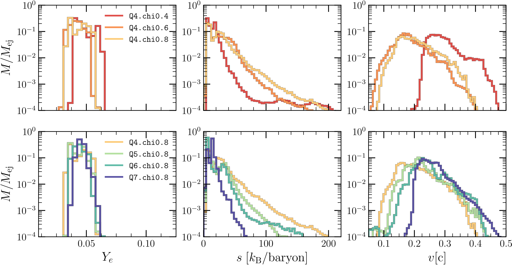
图注：Distributions of the ejected mass in terms of the electron fraction $Y_{e}$ (left column), entropy per baryon $s$ (middle column), and velocity $v$ (right column), for the six binaries considered. In all cases, the data is gathered over the whole history of the detector at $r_{\rm det} = 590.8\,{\rm km}$.
对应解读：对应“抛射质量、平均速度、电子丰度随参数变化的图表”和模型拟合第一层中从数值相对论模拟提取的电子丰度、熵、速度分布。
入选理由：这是最直接支撑日报核心物理结论的图：六个BHNS模型的抛射物按电子丰度、熵和速度分布并列展示，可用于判断高自旋/大质量比模型产生的是富中子红色抛射物还是更高Ye成分，也连接到后续核合成和千新星颜色。
来源与置信度：\(arxiv_source\)；high；\(arxiv_source\) / main.tex:figure[2]
Fig09
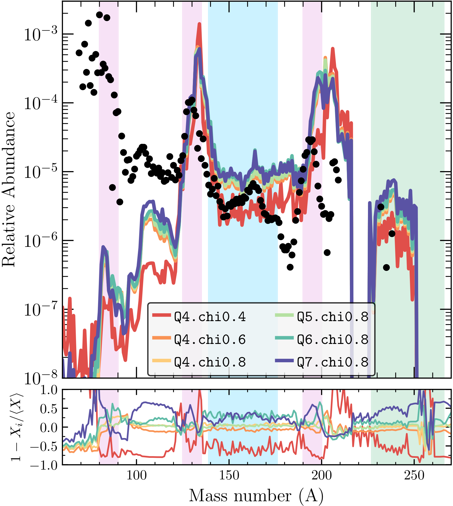
图注：Relative abundances obtained as a result of $r$-process nucleosynthesis occurring in the dynamical ejecta and subsequent radioactive decay. The first, second and third $r$-process peaks are indicated with pink regions. Blue-, and green-shaded regions refer to the lanthanides and actinides, respectively. The solar $r$-process data is marked with black circles. The neutron-richness of the material leads to an order of magnitude greater abundances in the second and third $r$-process peak, and underestimation of the first solar $r$-process peak by multiple orders of magnitude in all cases. Note that while the data shows little variance close to the second and third peaks, differences appear between the second and third peak ($140 < A < 190$), in the actinide ($A \gtrsim 230$) and below the second peak region. Figure~\(\ref{fig:rprocess_abundances_cutoff}\) will show how this variance is related to a dependence on the entropy and velocity of ejecta.
对应解读：对应“SkyNet丰度曲线”和关键图表导读中的图4：质量数A、太阳r过程点、第二/第三峰、镧系和锕系区间。
入选理由：该图直接给出SkyNet核反应网络结果，并标注r过程峰、镧系和锕系区域以及太阳r过程丰度对比，是判断低Ye动力学抛射物是否稳健产生重r过程元素的关键证据。
来源与置信度：\(arxiv_source\)；high；\(arxiv_source\) / main.tex:figure[9]
Fig11
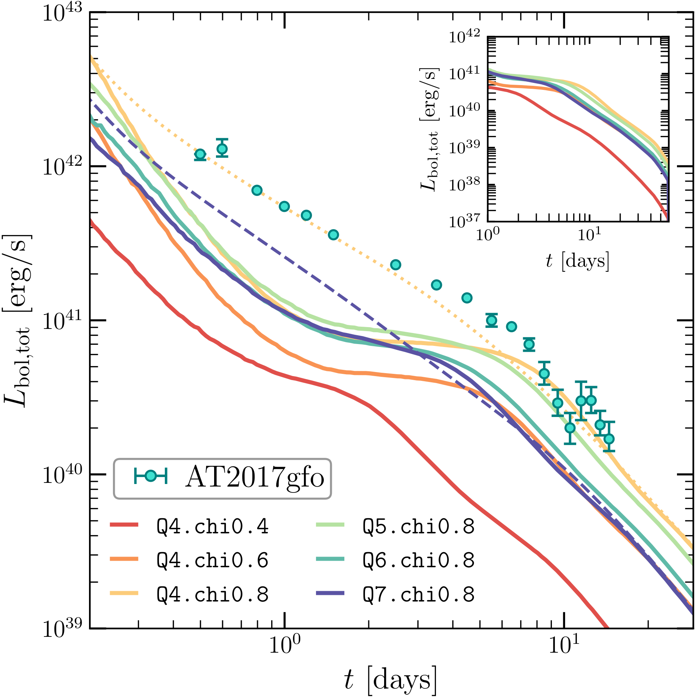
图注：Total bolometric luminosities for the different binaries considered when scaled to a distance of $40\,\rm{Mpc}$. The magnitude of the EM emission in strong disruption cases \(\texttt{Q4.chi0.8}\) and \(\texttt{Q5.chi0.8}\) is broadly consistent at $t\gtrsim 10\,\rm{d}$ with the evolution of the late-time lanthanide-rich kilonova component of AT2017gfo whose bolometric luminosity follows from Ref.~\(\cite{Waxman2017}.\) Heating rates associated with the radioactive decay and responsible for long-lived emission are shown for \(\texttt{Q4.chi0.8}\) and \(\texttt{Q7.chi0.8}\) in terms of dotted-yellow and dashed-blue lines, respectively.
对应解读：对应“放射性加热率或热化效率诊断”“POSSIS总光度”和与AT2017gfo叠加比较的模型拟合段落。
入选理由：该图同时展示不同双星模型的总bolometric光度、AT2017gfo晚期bolometric数据以及Q4.chi0.8/Q7.chi0.8的放射性加热率，是连接核合成加热与可观测千新星亮度的核心图。
来源与置信度：\(arxiv_source\)；high；\(arxiv_source\) / main.tex:figure[11]
Fig12
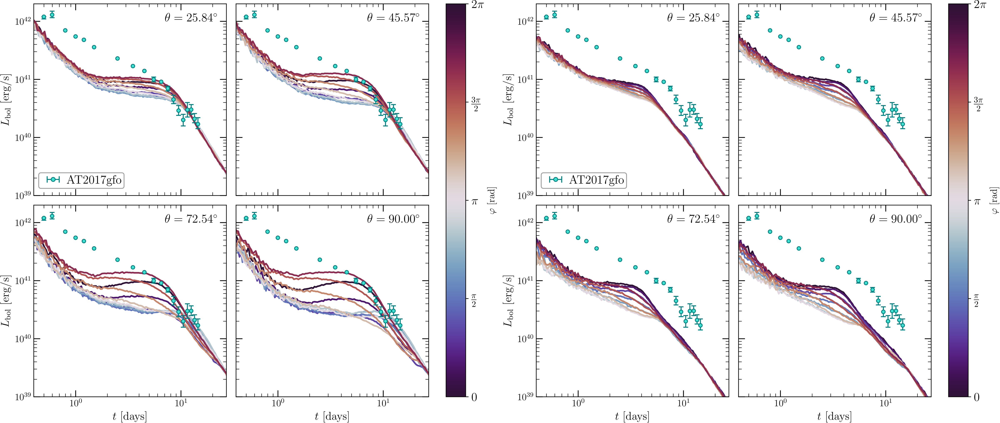
图注：\(\textit{Left panels:}\) Dependence on the viewing angle of the evolution of the bolometric luminosity (see colormap) as computed from the strong-disruption binary \(\texttt{Q4.chi0.8}.\) The data from AT2017gfo is shown for a comparison with cyan filled circles~\(\cite{Waxman2017}.\) Note that only the late-time bolometric luminosity has a magnitude comparable with AT2017gfo data and that the dependence on the viewing angle is substantial, leading to angles where temporary shallow decay or even a re-brightening is possible. \(\textit{Right panels:}\) The same as on the left but for the weak-disruption binary \(\texttt{Q7.chi0.8}.\)
对应解读：对应“POSSIS总光度和多波段光变”中关于视角依赖的部分，以及模型拟合段落中AT2017gfo残差和视角退化的讨论。
入选理由：该图给出强瓦解Q4.chi0.8与弱瓦解Q7.chi0.8的bolometric luminosity随视角和时间演化，并叠加AT2017gfo数据，最能说明同一动力学抛射物模型因视角产生的亮度带宽和再增亮等复杂行为。
来源与置信度：\(arxiv_source\)；high；\(arxiv_source\) / main.tex:figure[12]
Fig03
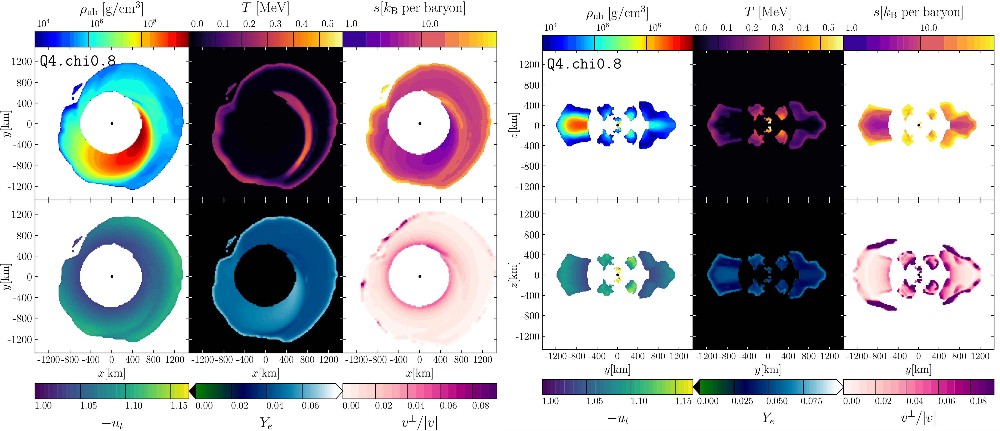
图注：\(\textit{Left panels:}\) Snapshots of the dynamical ejecta in the equatorial $(x,y)$ plane at the final time of the \(\texttt{Q4.chi0.8}\) simulation. From the top-left to the bottom-right panel, we report: the rest-mass density of the unbound material $\rho_{\rm ub}$, the corresponding temperature $T$, the specific entropy $s$, the specific energy of the material at infinity $-u_{t}$, the electron fraction $Y_e$, and, finally, the ratio between the orthogonal three-velocity component and the total three-velocity $v^{\perp}/\lvert v \rvert$. \(\textit{Right panels:}\) The same as in the right panels but when considering sections on the meridional $(y,z)$ plane.
对应解读：对应“抛射物二维几何分布图”和关键图表导读中的图3：二维截面中的密度、温度、熵、能量、电子丰度和速度方向结构。
入选理由：该图展示强潮汐瓦解模型Q4.chi0.8在赤道面和子午面上的多物理量二维结构，能直接支撑日报关于赤道集中、Ye分层、速度几何和三维非轴对称潮汐尾的解读。
来源与置信度：\(arxiv_source\)；high；\(arxiv_source\) / main.tex:figure[3]
Fig05
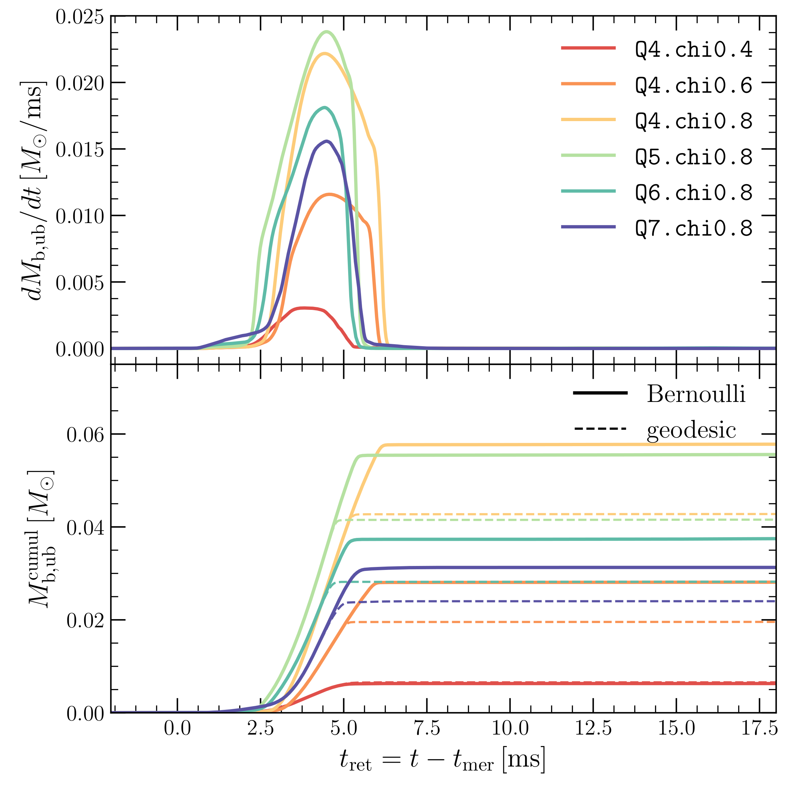
图注：\(\textit{(Top panel)}\) Flux of the unbound mass component through a detector at $r = 300\, M_{\odot}$ as a function of retarded time, measured according to the Bernoulli criterion. Note how in all simulations the large majority of the ejected mass is recorded over a window of $\approx 5\,\rm{ms}$. The amplitude of the peak is directly correlated with the strength of the disruption, so that a WTD leads to a small mass flux and, viceversa, a STD leads to a large mass flux. \(\textit{(Bottom panel)}\) Integrated unbound mass flux through the detector as a cumulative measure, according to the Bernoulli (solid lines) and geodesic (dashed lines) unboundness criteria. For particularly strong disruptions (\(\eg\) \texttt{Q4.chi0.8}), Bernoulli criterion yields $50\%$ larger measurements of the unbound mass than the geodesic criterion.
对应解读：对应“抛射质量随参数变化”和模型拟合第一层中抛射质量提取、Bernoulli/geodesic无束缚判据系统误差的讨论。
入选理由：该图显示无束缚质量通量及累计抛射质量随时间的演化，并比较Bernoulli与geodesic判据，能说明强/弱潮汐瓦解对应的抛射量差异以及数值提取中的系统不确定性。
来源与置信度：\(arxiv_source\)；high；\(arxiv_source\) / main.tex:figure[5]
强相关工作
同一类源方面，应把本文放在黑洞—中子星并合电磁对应体的长期研究线索中阅读。可检索关键词包括 “black hole neutron star merger kilonova numerical relativity dynamical ejecta high spin mass ratio”、“BHNS tidal disruption ejecta Foucart fit” 和 “BHNS kilonova radiative transfer POSSIS”。这些工作通常围绕抛射质量拟合公式、吸积盘质量、潮汐瓦解边界和千新星模板展开。
同一事件或历史参照方面，AT2017gfo 是千新星观测的原型，但它来自 GW170817，主流解释是双中子星并合；它适合作为光变和颜色的标尺，不等于黑洞—中子星模型必须复现其全部性质。S190814bv 是一个常被用于检验黑洞—中子星电磁预期的引力波候选/事件背景，其无明确电磁对应体提供的是上限约束，而不是对所有黑洞—中子星千新星模型的否定。
相反观点或张力主要来自两方面：一是高质量比黑洞—中子星系统在很多参数下会直接吞没中子星，从而没有亮千新星；二是 AT2017gfo 的早期蓝光通常需要较高电子丰度、低不透明度成分，单纯富中子的动力学潮汐抛射物未必自然产生。检索关键词可用 “AT2017gfo blue kilonova lanthanide opacity”、“S190814bv electromagnetic counterpart limits” 和 “neutrino wind disk outflow BHNS kilonova”。
同一事件 / 同类源线索：
- https://arxiv.org/abs/2607.20609
- https://arxiv.org/abs/1710.05832
- https://gracedb.ligo.org/superevents/S190814bv/
相似工作：
基础理论 / 方法工作：
相反观点 / 张力线索：
说明
评分由 LLM 给出初评，再由本地阈值策略过滤；IACT、TeV 伽马射线和高能中微子天文学按重点方向处理。